Introduction to collapse
Advanced and Fast Data Transformation in R
Sebastian Krantz
2021-06-27
Source:vignettes/collapse_intro.Rmd
collapse_intro.Rmdcollapse is a C/C++ based package for data transformation and statistical computing in R. It’s aims are:
- To facilitate complex data transformation, exploration and computing tasks in R.
- To help make R code fast, flexible, parsimonious and programmer friendly.
This vignette demonstrates these two points and introduces all main features of the package in a structured way. The chapters are pretty self-contained, however the first chapters introduce the data and faster data manipulation functions which are used throughout the rest of this vignette.
Notes:
Apart from this vignette, collapse comes with a built-in structured documentation available under
help("collapse-documentation")after installing the package, andhelp("collapse-package")provides a compact set of examples for quick-start. A cheat sheet is available at Rstudio.The two other vignettes focus on the integration of collapse with dplyr workflows (recommended for dplyr / tidyverse users), and on the integration of collapse with the plm package (+ some advanced programming with panel data).
Documentation and vignettes can also be viewed online.
Why collapse?
collapse is a high-performance package that extends and enhances the data-manipulation capabilities of R and existing popular packages (such as dplyr, data.table, and matrix packages). It’s main focus is on grouped and weighted statistical programming, complex aggregations and transformations, time series and panel data operations, and programming with lists of data objects. The lead author is an applied economist and created the package mainly to facilitate advanced computations on varied and complex data, in particular surveys, (multivariate) time series, multilevel / panel data, and lists / model objects.
A secondary aspect to applied work is that data is often imported into R from richer data structures (such as STATA, SPSS or SAS files imported with haven). This called for an intelligent suite of data manipulation functions that can both utilize aspects of the richer data structure (such as variable labels), and preserve the data structure / attributes in computations. Sometimes specialized classes like xts, pdata.frame and grouped_df can also become very useful to manipulate certain types of data. Thus collapse was built to explicitly supports these classes, while preserving most other classes / data structures in R.
Another objective was to radically improve the speed of R code by extensively relying on efficient algorithms in C/C++ and the faster components of base R. collapse ranks among the fastest R packages, and performs many grouped and/or weighted computations noticeably faster than dplyr or data.table.
A final development objective was to channel this performance through a stable and well conceived user API providing extensive and optimized programming capabilities (in standard evaluation) while also facilitating quick use and easy integration with existing data manipulation frameworks (in particular dplyr / tidyverse and data.table, both relying on non-standard evaluation).
1. Data and Summary Tools
We begin by introducing some powerful summary tools along with the 2 panel datasets collapse provides which are used throughout this vignette. If you are just interested in programming you can skip this section. Apart from the 2 datasets that come with collapse (wlddev and GGDC10S), this vignette uses a few well known datasets from base R: mtcars, iris, airquality, and the time series Airpassengers and EuStockMarkets.
1.1 wlddev - World Bank Development Data
This dataset contains 5 key World Bank Development Indicators covering 216 countries for up to 61 years (1960-2020). It is a balanced balanced panel with \(216 \times 61 = 13176\) observations. –>
library(collapse) head(wlddev) # country iso3c date year decade region income OECD PCGDP LIFEEX GINI ODA # 1 Afghanistan AFG 1961-01-01 1960 1960 South Asia Low income FALSE NA 32.446 NA 116769997 # 2 Afghanistan AFG 1962-01-01 1961 1960 South Asia Low income FALSE NA 32.962 NA 232080002 # 3 Afghanistan AFG 1963-01-01 1962 1960 South Asia Low income FALSE NA 33.471 NA 112839996 # 4 Afghanistan AFG 1964-01-01 1963 1960 South Asia Low income FALSE NA 33.971 NA 237720001 # 5 Afghanistan AFG 1965-01-01 1964 1960 South Asia Low income FALSE NA 34.463 NA 295920013 # 6 Afghanistan AFG 1966-01-01 1965 1960 South Asia Low income FALSE NA 34.948 NA 341839996 # POP # 1 8996973 # 2 9169410 # 3 9351441 # 4 9543205 # 5 9744781 # 6 9956320 # The variables have "label" attributes. Use vlabels() to get and set labels namlab(wlddev, class = TRUE) # Variable Class # 1 country character # 2 iso3c factor # 3 date Date # 4 year integer # 5 decade integer # 6 region factor # 7 income factor # 8 OECD logical # 9 PCGDP numeric # 10 LIFEEX numeric # 11 GINI numeric # 12 ODA numeric # 13 POP numeric # Label # 1 Country Name # 2 Country Code # 3 Date Recorded (Fictitious) # 4 Year # 5 Decade # 6 Region # 7 Income Level # 8 Is OECD Member Country? # 9 GDP per capita (constant 2010 US$) # 10 Life expectancy at birth, total (years) # 11 Gini index (World Bank estimate) # 12 Net official development assistance and official aid received (constant 2018 US$) # 13 Population, total
Of the categorical identifiers, the date variable was artificially generated to have an example dataset that contains all common data types frequently encountered in R. A detailed statistical description of this data is computed by descr:
# A fast and detailed statistical description descr(wlddev) # Dataset: wlddev, 13 Variables, N = 13176 # ---------------------------------------------------------------------------------------------------- # country (character): Country Name # Stats: # N Ndist # 13176 216 # Table: # Freq Perc # Afghanistan 61 0.46 # Albania 61 0.46 # Algeria 61 0.46 # American Samoa 61 0.46 # Andorra 61 0.46 # Angola 61 0.46 # Antigua and Barbuda 61 0.46 # --- # Freq Perc # Vanuatu 61 0.46 # Venezuela, RB 61 0.46 # Vietnam 61 0.46 # Virgin Islands (U.S.) 61 0.46 # West Bank and Gaza 61 0.46 # Yemen, Rep. 61 0.46 # Zambia 61 0.46 # Zimbabwe 61 0.46 # # Summary of Table: # Min. 1st Qu. Median Mean 3rd Qu. Max. # 61 61 61 61 61 61 # ---------------------------------------------------------------------------------------------------- # iso3c (factor): Country Code # Stats: # N Ndist # 13176 216 # Table: # Freq Perc # ABW 61 0.46 # AFG 61 0.46 # AGO 61 0.46 # ALB 61 0.46 # AND 61 0.46 # ARE 61 0.46 # ARG 61 0.46 # --- # Freq Perc # VNM 61 0.46 # VUT 61 0.46 # WSM 61 0.46 # XKX 61 0.46 # YEM 61 0.46 # ZAF 61 0.46 # ZMB 61 0.46 # ZWE 61 0.46 # # Summary of Table: # Min. 1st Qu. Median Mean 3rd Qu. Max. # 61 61 61 61 61 61 # ---------------------------------------------------------------------------------------------------- # date (Date): Date Recorded (Fictitious) # Stats: # N Ndist Min Max # 13176 61 -3287 18628 # ---------------------------------------------------------------------------------------------------- # year (integer): Year # Stats: # N Ndist Mean SD Min Max Skew Kurt # 13176 61 1990 17.61 1960 2020 -0 1.8 # Quant: # 1% 5% 25% 50% 75% 95% 99% # 1960 1963 1975 1990 2005 2017 2020 # ---------------------------------------------------------------------------------------------------- # decade (integer): Decade # Stats: # N Ndist Mean SD Min Max Skew Kurt # 13176 7 1985.57 17.51 1960 2020 0.03 1.79 # Quant: # 1% 5% 25% 50% 75% 95% 99% # 1960 1960 1970 1990 2000 2010 2020 # ---------------------------------------------------------------------------------------------------- # region (factor): Region # Stats: # N Ndist # 13176 7 # Table: # Freq Perc # East Asia & Pacific 2196 16.67 # Europe & Central Asia 3538 26.85 # Latin America & Caribbean 2562 19.44 # Middle East & North Africa 1281 9.72 # North America 183 1.39 # South Asia 488 3.70 # Sub-Saharan Africa 2928 22.22 # ---------------------------------------------------------------------------------------------------- # income (factor): Income Level # Stats: # N Ndist # 13176 4 # Table: # Freq Perc # High income 4819 36.57 # Low income 1830 13.89 # Lower middle income 2867 21.76 # Upper middle income 3660 27.78 # ---------------------------------------------------------------------------------------------------- # OECD (logical): Is OECD Member Country? # Stats: # N Ndist # 13176 2 # Table: # Freq Perc # FALSE 10980 83.33 # TRUE 2196 16.67 # ---------------------------------------------------------------------------------------------------- # PCGDP (numeric): GDP per capita (constant 2010 US$) # Stats: # N Ndist Mean SD Min Max Skew Kurt # 9470 9470 12048.78 19077.64 132.08 196061.42 3.13 17.12 # Quant: # 1% 5% 25% 50% 75% 95% 99% # 227.71 399.62 1303.19 3767.16 14787.03 48507.84 92340.28 # ---------------------------------------------------------------------------------------------------- # LIFEEX (numeric): Life expectancy at birth, total (years) # Stats: # N Ndist Mean SD Min Max Skew Kurt # 11670 10548 64.3 11.48 18.91 85.42 -0.67 2.67 # Quant: # 1% 5% 25% 50% 75% 95% 99% # 35.83 42.77 56.36 67.44 72.95 79.34 82.36 # ---------------------------------------------------------------------------------------------------- # GINI (numeric): Gini index (World Bank estimate) # Stats: # N Ndist Mean SD Min Max Skew Kurt # 1744 368 38.53 9.2 20.7 65.8 0.6 2.53 # Quant: # 1% 5% 25% 50% 75% 95% 99% # 24.6 26.3 31.5 36.4 45 55.98 60.5 # ---------------------------------------------------------------------------------------------------- # ODA (numeric): Net official development assistance and official aid received (constant 2018 US$) # Stats: # N Ndist Mean SD Min Max Skew Kurt # 8608 7832 454,720131 868,712654 -997,679993 2.56715605e+10 6.98 114.89 # Quant: # 1% 5% 25% 50% 75% 95% 99% # -12,593999.7 1,363500.01 44,887499.8 165,970001 495,042503 1.93281696e+09 3.73380782e+09 # ---------------------------------------------------------------------------------------------------- # POP (numeric): Population, total # Stats: # N Ndist Mean SD Min Max Skew Kurt # 12919 12877 24,245971.6 102,120674 2833 1.39771500e+09 9.75 108.91 # Quant: # 1% 5% 25% 50% 75% 95% 99% # 8698.84 31083.3 443791 4,072517 12,816178 81,177252.5 308,862641 # ----------------------------------------------------------------------------------------------------
The output of descr can be converted into a tidy data frame using:
head(as.data.frame(descr(wlddev))) # Variable Class Label N Ndist Min Max Mean SD # 1 country character Country Name 13176 216 NA NA NA NA # 2 iso3c factor Country Code 13176 216 NA NA NA NA # 3 date Date Date Recorded (Fictitious) 13176 61 -3287 18628 NA NA # 4 year integer Year 13176 61 1960 2020 1990.000 17.60749 # 5 decade integer Decade 13176 7 1960 2020 1985.574 17.51175 # 6 region factor Region 13176 7 NA NA NA NA # Skew Kurt 1% 5% 25% 50% 75% 95% 99% # 1 NA NA NA NA NA NA NA NA NA # 2 NA NA NA NA NA NA NA NA NA # 3 NA NA NA NA NA NA NA NA NA # 4 -5.770900e-16 1.799355 1960 1963 1975 1990 2005 2017 2020 # 5 3.256512e-02 1.791726 1960 1960 1970 1990 2000 2010 2020 # 6 NA NA NA NA NA NA NA NA NA
Note that descr does not require data to be labeled. Since wlddev is a panel data set tracking countries over time, we might be interested in checking which variables are time-varying, with the function varying:
varying(wlddev, wlddev$iso3c) # country iso3c date year decade region income OECD PCGDP LIFEEX GINI ODA # FALSE FALSE TRUE TRUE TRUE FALSE FALSE FALSE TRUE TRUE TRUE TRUE # POP # TRUE
varying tells us that all 5 variables PCGDP, LIFEEX, GINI, ODA and POP vary over time. However the OECD variable does not, so this data does not track when countries entered the OECD. We can also have a more detailed look letting varying check the variation in each country:
head(varying(wlddev, wlddev$iso3c, any_group = FALSE)) # country iso3c date year decade region income OECD PCGDP LIFEEX GINI ODA POP # ABW FALSE FALSE TRUE TRUE TRUE FALSE FALSE FALSE TRUE TRUE NA TRUE TRUE # AFG FALSE FALSE TRUE TRUE TRUE FALSE FALSE FALSE TRUE TRUE NA TRUE TRUE # AGO FALSE FALSE TRUE TRUE TRUE FALSE FALSE FALSE TRUE TRUE TRUE TRUE TRUE # ALB FALSE FALSE TRUE TRUE TRUE FALSE FALSE FALSE TRUE TRUE TRUE TRUE TRUE # AND FALSE FALSE TRUE TRUE TRUE FALSE FALSE FALSE TRUE NA NA NA TRUE # ARE FALSE FALSE TRUE TRUE TRUE FALSE FALSE FALSE TRUE TRUE TRUE TRUE TRUE
NA indicates that there are no data for this country. In general data is varying if it has two or more distinct non-missing values. We could also take a closer look at observation counts and distinct values using:
head(fnobs(wlddev, wlddev$iso3c)) # country iso3c date year decade region income OECD PCGDP LIFEEX GINI ODA POP # ABW 61 61 61 61 61 61 61 61 32 60 0 20 60 # AFG 61 61 61 61 61 61 61 61 18 60 0 60 60 # AGO 61 61 61 61 61 61 61 61 40 60 3 58 60 # ALB 61 61 61 61 61 61 61 61 40 60 9 32 60 # AND 61 61 61 61 61 61 61 61 50 0 0 0 60 # ARE 61 61 61 61 61 61 61 61 45 60 2 45 60 head(fndistinct(wlddev, wlddev$iso3c)) # country iso3c date year decade region income OECD PCGDP LIFEEX GINI ODA POP # ABW 1 1 61 61 7 1 1 1 32 60 0 20 60 # AFG 1 1 61 61 7 1 1 1 18 60 0 60 60 # AGO 1 1 61 61 7 1 1 1 40 59 3 58 60 # ALB 1 1 61 61 7 1 1 1 40 59 9 32 60 # AND 1 1 61 61 7 1 1 1 50 0 0 0 60 # ARE 1 1 61 61 7 1 1 1 45 60 2 45 60
Note that varying is more efficient than fndistinct, although both functions are very fast. Even more powerful summary methods for multilevel / panel data are provided by qsu (shorthand for quick-summary). It is modeled after STATA’s summarize and xtsummarize commands. Calling qsu on the data gives a concise summary. We can subset columns internally using the cols argument:
qsu(wlddev, cols = 9:12, higher = TRUE) # higher adds skewness and kurtosis # N Mean SD Min Max Skew Kurt # PCGDP 9470 12048.778 19077.6416 132.0776 196061.417 3.1276 17.1154 # LIFEEX 11670 64.2963 11.4764 18.907 85.4171 -0.6748 2.6718 # GINI 1744 38.5341 9.2006 20.7 65.8 0.596 2.5329 # ODA 8608 454,720131 868,712654 -997,679993 2.56715605e+10 6.9832 114.889
We could easily compute these statistics by region:
qsu(wlddev, by = ~region, cols = 9:12, vlabels = TRUE, higher = TRUE) # , , PCGDP: GDP per capita (constant 2010 US$) # # N Mean SD Min Max Skew Kurt # East Asia & Pacific 1467 10513.2441 14383.5507 132.0776 71992.1517 1.6392 4.7419 # Europe & Central Asia 2243 25992.9618 26435.1316 366.9354 196061.417 2.2022 10.1977 # Latin America & Caribbean 1976 7628.4477 8818.5055 1005.4085 88391.3331 4.1702 29.3739 # Middle East & North Africa 842 13878.4213 18419.7912 578.5996 116232.753 2.4178 9.7669 # North America 180 48699.76 24196.2855 16405.9053 113236.091 0.938 2.9688 # South Asia 382 1235.9256 1611.2232 265.9625 8476.564 2.7874 10.3402 # Sub-Saharan Africa 2380 1840.0259 2596.0104 164.3366 20532.9523 3.1161 14.4175 # # , , LIFEEX: Life expectancy at birth, total (years) # # N Mean SD Min Max Skew Kurt # East Asia & Pacific 1807 65.9445 10.1633 18.907 85.078 -0.856 4.3125 # Europe & Central Asia 3046 72.1625 5.7602 45.369 85.4171 -0.5594 4.0434 # Latin America & Caribbean 2107 68.3486 7.3768 41.762 82.1902 -1.0357 3.9379 # Middle East & North Africa 1226 66.2508 9.8306 29.919 82.8049 -0.8782 3.3054 # North America 144 76.2867 3.5734 68.8978 82.0488 -0.1963 1.976 # South Asia 480 57.5585 11.3004 32.446 78.921 -0.2623 2.1147 # Sub-Saharan Africa 2860 51.581 8.6876 26.172 74.5146 0.1452 2.7245 # # , , GINI: Gini index (World Bank estimate) # # N Mean SD Min Max Skew Kurt # East Asia & Pacific 154 37.7571 5.0318 27.8 49.1 0.3631 2.3047 # Europe & Central Asia 798 31.9114 4.5809 20.7 48.4 0.2989 2.5254 # Latin America & Caribbean 413 49.9557 5.4821 34.4 63.3 -0.0386 2.3631 # Middle East & North Africa 91 36.0143 5.2073 26 47.4 0.0241 1.9209 # North America 49 37.4816 3.6972 31 41.5 -0.4282 1.4577 # South Asia 46 33.8804 3.9898 25.9 43.8 0.4205 2.7748 # Sub-Saharan Africa 193 44.6606 8.2003 29.8 65.8 0.6598 2.8451 # # , , ODA: Net official development assistance and official aid received (constant 2018 US$) # # N Mean SD Min Max # East Asia & Pacific 1537 352,017964 622,847624 -997,679993 4.04487988e+09 # Europe & Central Asia 787 402,455286 568,237036 -322,070007 4.34612988e+09 # Latin America & Caribbean 1972 172,880081 260,781049 -444,040009 2.99568994e+09 # Middle East & North Africa 1105 732,380009 1.52108993e+09 -141,789993 2.56715605e+10 # North America 39 468717.916 10,653560.8 -15,869999.9 61,509998.3 # South Asia 466 1.27049955e+09 1.61492889e+09 -247,369995 8.75425977e+09 # Sub-Saharan Africa 2702 486,371750 656,336230 -18,409999.8 1.18790801e+10 # Skew Kurt # East Asia & Pacific 2.722 11.5221 # Europe & Central Asia 3.1305 15.2525 # Latin America & Caribbean 3.3259 22.4569 # Middle East & North Africa 6.6304 79.2238 # North America 4.8602 29.3092 # South Asia 1.7923 6.501 # Sub-Saharan Africa 4.5456 48.8447
Computing summary statistics by country is of course also possible but would be too much information. Fortunately qsu lets us do something much more powerful:
qsu(wlddev, pid = ~ iso3c, cols = c(1,4,9:12), vlabels = TRUE, higher = TRUE) # , , country: Country Name # # N/T Mean SD Min Max Skew Kurt # Overall 13176 - - - - - - # Between 216 - - - - - - # Within 61 - - - - - - # # , , year: Year # # N/T Mean SD Min Max Skew Kurt # Overall 13176 1990 17.6075 1960 2020 -0 1.7994 # Between 216 1990 0 1990 1990 - - # Within 61 1990 17.6075 1960 2020 -0 1.7994 # # , , PCGDP: GDP per capita (constant 2010 US$) # # N/T Mean SD Min Max Skew Kurt # Overall 9470 12048.778 19077.6416 132.0776 196061.417 3.1276 17.1154 # Between 206 12962.6054 20189.9007 253.1886 141200.38 3.1263 16.2299 # Within 45.9709 12048.778 6723.6808 -33504.8721 76767.5254 0.6576 17.2003 # # , , LIFEEX: Life expectancy at birth, total (years) # # N/T Mean SD Min Max Skew Kurt # Overall 11670 64.2963 11.4764 18.907 85.4171 -0.6748 2.6718 # Between 207 64.9537 9.8936 40.9663 85.4171 -0.5012 2.1693 # Within 56.3768 64.2963 6.0842 32.9068 84.4198 -0.2643 3.7027 # # , , GINI: Gini index (World Bank estimate) # # N/T Mean SD Min Max Skew Kurt # Overall 1744 38.5341 9.2006 20.7 65.8 0.596 2.5329 # Between 167 39.4233 8.1356 24.8667 61.7143 0.5832 2.8256 # Within 10.4431 38.5341 2.9277 25.3917 55.3591 0.3263 5.3389 # # , , ODA: Net official development assistance and official aid received (constant 2018 US$) # # N/T Mean SD Min Max Skew Kurt # Overall 8608 454,720131 868,712654 -997,679993 2.56715605e+10 6.9832 114.889 # Between 178 439,168412 569,049959 468717.916 3.62337432e+09 2.355 9.9487 # Within 48.3596 454,720131 650,709624 -2.44379420e+09 2.45610972e+10 9.6047 263.3716
The above output reports 3 sets of summary statistics for each variable: Statistics computed on the Overall (raw) data, and on the Between-country (i.e. country averaged) and Within-country (i.e. country-demeaned) data1. This is a powerful way to summarize panel data because aggregating the data by country gives us a cross-section of countries with no variation over time, whereas subtracting country specific means from the data eliminates all cross-sectional variation.
So what can these statistics tell us about our data? The N/T columns shows that for PCGDP we have 8995 total observations, that we observe GDP data for 203 countries and that we have on average 44.3 observations (time-periods) per country. In contrast the GINI Index is only available for 161 countries with 8.4 observations on average. The Overall and Within mean of the data are identical by definition, and the Between mean would also be the same in a balanced panel with no missing observations. In practice we have unequal amounts of observations for different countries, thus countries have different weights in the Overall mean and the difference between Overall and Between-country mean reflects this discrepancy. The most interesting statistic in this summary arguably is the standard deviation, and in particular the comparison of the Between-SD reflecting the variation between countries and the Within-SD reflecting average variation over time. This comparison shows that PCGDP, LIFEEX and GINI vary more between countries, but ODA received varies more within countries over time. The 0 Between-SD for the year variable and the fact that the Overall and Within-SD are equal shows that year is individual invariant. Thus qsu also provides the same information as varying, but with additional details on the relative magnitudes of cross-sectional and time series variation. It is also a common pattern that the kurtosis increases in within-transformed data, while the skewness decreases in most cases.
We could also do all of that by regions to have a look at the between and within country variations inside and across different World regions:
qsu(wlddev, by = ~ region, pid = ~ iso3c, cols = 9:12, vlabels = TRUE, higher = TRUE) # , , Overall, PCGDP: GDP per capita (constant 2010 US$) # # N/T Mean SD Min Max Skew Kurt # East Asia & Pacific 1467 10513.2441 14383.5507 132.0776 71992.1517 1.6392 4.7419 # Europe & Central Asia 2243 25992.9618 26435.1316 366.9354 196061.417 2.2022 10.1977 # Latin America & Caribbean 1976 7628.4477 8818.5055 1005.4085 88391.3331 4.1702 29.3739 # Middle East & North Africa 842 13878.4213 18419.7912 578.5996 116232.753 2.4178 9.7669 # North America 180 48699.76 24196.2855 16405.9053 113236.091 0.938 2.9688 # South Asia 382 1235.9256 1611.2232 265.9625 8476.564 2.7874 10.3402 # Sub-Saharan Africa 2380 1840.0259 2596.0104 164.3366 20532.9523 3.1161 14.4175 # # , , Between, PCGDP: GDP per capita (constant 2010 US$) # # N/T Mean SD Min Max Skew Kurt # East Asia & Pacific 34 10513.2441 12771.742 444.2899 39722.0077 1.1488 2.7089 # Europe & Central Asia 56 25992.9618 24051.035 809.4753 141200.38 2.0026 9.0733 # Latin America & Caribbean 38 7628.4477 8470.9708 1357.3326 77403.7443 4.4548 32.4956 # Middle East & North Africa 20 13878.4213 17251.6962 1069.6596 64878.4021 1.9508 6.0796 # North America 3 48699.76 18604.4369 35260.4708 74934.5874 0.7065 1.5 # South Asia 8 1235.9256 1488.3669 413.68 6621.5002 3.0546 11.3083 # Sub-Saharan Africa 47 1840.0259 2234.3254 253.1886 9922.0052 2.1442 6.8259 # # , , Within, PCGDP: GDP per capita (constant 2010 US$) # # N/T Mean SD Min Max Skew # East Asia & Pacific 43.1471 12048.778 6615.8248 -11964.6472 49541.463 0.824 # Europe & Central Asia 40.0536 12048.778 10971.0483 -33504.8721 76767.5254 0.4307 # Latin America & Caribbean 52 12048.778 2451.2636 -354.1639 23036.3668 0.1259 # Middle East & North Africa 42.1 12048.778 6455.0512 -18674.4049 63665.0446 1.8525 # North America 60 12048.778 15470.4609 -29523.1017 50350.2816 -0.2451 # South Asia 47.75 12048.778 617.0934 10026.9155 14390.3768 0.9846 # Sub-Saharan Africa 50.6383 12048.778 1321.764 4846.3834 24883.1246 1.3879 # Kurt # East Asia & Pacific 8.9418 # Europe & Central Asia 7.4139 # Latin America & Caribbean 7.1939 # Middle East & North Africa 23.0457 # North America 3.2075 # South Asia 5.6366 # Sub-Saharan Africa 28.0186 # # , , Overall, LIFEEX: Life expectancy at birth, total (years) # # N/T Mean SD Min Max Skew Kurt # East Asia & Pacific 1807 65.9445 10.1633 18.907 85.078 -0.856 4.3125 # Europe & Central Asia 3046 72.1625 5.7602 45.369 85.4171 -0.5594 4.0434 # Latin America & Caribbean 2107 68.3486 7.3768 41.762 82.1902 -1.0357 3.9379 # Middle East & North Africa 1226 66.2508 9.8306 29.919 82.8049 -0.8782 3.3054 # North America 144 76.2867 3.5734 68.8978 82.0488 -0.1963 1.976 # South Asia 480 57.5585 11.3004 32.446 78.921 -0.2623 2.1147 # Sub-Saharan Africa 2860 51.581 8.6876 26.172 74.5146 0.1452 2.7245 # # , , Between, LIFEEX: Life expectancy at birth, total (years) # # N/T Mean SD Min Max Skew Kurt # East Asia & Pacific 32 65.9445 7.6833 49.7995 77.9008 -0.3832 2.4322 # Europe & Central Asia 55 72.1625 4.4378 60.1129 85.4171 -0.6584 2.8874 # Latin America & Caribbean 40 68.3486 4.9199 53.4918 82.1902 -0.9947 4.1617 # Middle East & North Africa 21 66.2508 5.922 52.5371 76.7395 -0.3181 3.0331 # North America 3 76.2867 1.3589 74.8065 78.4175 0.1467 1.6356 # South Asia 8 57.5585 5.6158 49.1972 69.3429 0.6643 3.1288 # Sub-Saharan Africa 48 51.581 5.657 40.9663 71.5749 1.1333 4.974 # # , , Within, LIFEEX: Life expectancy at birth, total (years) # # N/T Mean SD Min Max Skew Kurt # East Asia & Pacific 56.4688 64.2963 6.6528 32.9068 83.9918 -0.3949 3.9528 # Europe & Central Asia 55.3818 64.2963 3.6723 46.3045 78.6265 -0.0307 3.7576 # Latin America & Caribbean 52.675 64.2963 5.4965 46.7831 79.5026 -0.3827 2.9936 # Middle East & North Africa 58.381 64.2963 7.8467 41.6187 78.8872 -0.6216 2.808 # North America 48 64.2963 3.3049 54.7766 69.4306 -0.4327 2.3027 # South Asia 60 64.2963 9.8062 41.4342 83.0122 -0.0946 2.1035 # Sub-Saharan Africa 59.5833 64.2963 6.5933 41.5678 84.4198 0.0811 2.7821 # # , , Overall, GINI: Gini index (World Bank estimate) # # N/T Mean SD Min Max Skew Kurt # East Asia & Pacific 154 37.7571 5.0318 27.8 49.1 0.3631 2.3047 # Europe & Central Asia 798 31.9114 4.5809 20.7 48.4 0.2989 2.5254 # Latin America & Caribbean 413 49.9557 5.4821 34.4 63.3 -0.0386 2.3631 # Middle East & North Africa 91 36.0143 5.2073 26 47.4 0.0241 1.9209 # North America 49 37.4816 3.6972 31 41.5 -0.4282 1.4577 # South Asia 46 33.8804 3.9898 25.9 43.8 0.4205 2.7748 # Sub-Saharan Africa 193 44.6606 8.2003 29.8 65.8 0.6598 2.8451 # # , , Between, GINI: Gini index (World Bank estimate) # # N/T Mean SD Min Max Skew Kurt # East Asia & Pacific 23 37.7571 4.3005 30.8 45.8857 0.4912 2.213 # Europe & Central Asia 49 31.9114 4.0611 24.8667 40.935 0.3323 2.291 # Latin America & Caribbean 25 49.9557 4.0492 41.1 57.9 0.03 2.2573 # Middle East & North Africa 15 36.0143 4.7002 29.05 42.7 -0.2035 1.6815 # North America 2 37.4816 3.3563 33.1222 40.0129 -0.5503 1.3029 # South Asia 7 33.8804 3.0052 30.3556 38.8 0.2786 1.4817 # Sub-Saharan Africa 46 44.6606 6.8844 34.52 61.7143 0.9464 3.2302 # # , , Within, GINI: Gini index (World Bank estimate) # # N/T Mean SD Min Max Skew Kurt # East Asia & Pacific 6.6957 38.5341 2.6125 31.0187 45.8901 -0.0585 3.0933 # Europe & Central Asia 16.2857 38.5341 2.1195 31.2841 50.1387 0.6622 6.1763 # Latin America & Caribbean 16.52 38.5341 3.6955 25.3917 48.8341 -0.0506 2.7603 # Middle East & North Africa 6.0667 38.5341 2.2415 31.7675 45.777 0.0408 4.7415 # North America 24.5 38.5341 1.5507 33.0212 42.7119 -1.3213 6.8321 # South Asia 6.5714 38.5341 2.6244 32.8341 45.0675 -0.1055 2.6885 # Sub-Saharan Africa 4.1957 38.5341 4.4553 27.9452 55.3591 0.6338 4.4174 # # , , Overall, ODA: Net official development assistance and official aid received (constant 2018 US$) # # N/T Mean SD Min Max # East Asia & Pacific 1537 352,017964 622,847624 -997,679993 4.04487988e+09 # Europe & Central Asia 787 402,455286 568,237036 -322,070007 4.34612988e+09 # Latin America & Caribbean 1972 172,880081 260,781049 -444,040009 2.99568994e+09 # Middle East & North Africa 1105 732,380009 1.52108993e+09 -141,789993 2.56715605e+10 # North America 39 468717.916 10,653560.8 -15,869999.9 61,509998.3 # South Asia 466 1.27049955e+09 1.61492889e+09 -247,369995 8.75425977e+09 # Sub-Saharan Africa 2702 486,371750 656,336230 -18,409999.8 1.18790801e+10 # Skew Kurt # East Asia & Pacific 2.722 11.5221 # Europe & Central Asia 3.1305 15.2525 # Latin America & Caribbean 3.3259 22.4569 # Middle East & North Africa 6.6304 79.2238 # North America 4.8602 29.3092 # South Asia 1.7923 6.501 # Sub-Saharan Africa 4.5456 48.8447 # # , , Between, ODA: Net official development assistance and official aid received (constant 2018 US$) # # N/T Mean SD Min Max # East Asia & Pacific 31 352,017964 457,183279 1,654615.38 1.63585532e+09 # Europe & Central Asia 32 402,455286 438,074771 12,516000.1 2.05456932e+09 # Latin America & Caribbean 37 172,880081 167,160838 2,225483.88 538,386665 # Middle East & North Africa 21 732,380009 775,418887 3,112820.5 2.86174883e+09 # North America 1 468717.916 0 468717.916 468717.916 # South Asia 8 1.27049955e+09 1.18347893e+09 27,152499.9 3.62337432e+09 # Sub-Saharan Africa 48 486,371750 397,995105 28,801206.9 1.55049113e+09 # Skew Kurt # East Asia & Pacific 1.7771 5.1361 # Europe & Central Asia 2.0449 7.2489 # Latin America & Caribbean 0.8981 2.4954 # Middle East & North Africa 1.1363 3.6377 # North America - - # South Asia 0.7229 2.4072 # Sub-Saharan Africa 0.9871 3.1513 # # , , Within, ODA: Net official development assistance and official aid received (constant 2018 US$) # # N/T Mean SD Min Max # East Asia & Pacific 49.5806 454,720131 422,992450 -2.04042108e+09 3.59673152e+09 # Europe & Central Asia 24.5938 454,720131 361,916875 -1.08796786e+09 3.30549004e+09 # Latin America & Caribbean 53.2973 454,720131 200,159960 -527,706542 3.28976141e+09 # Middle East & North Africa 52.619 454,720131 1.30860235e+09 -2.34610870e+09 2.45610972e+10 # North America 39 454,720131 10,653560.8 438,381413 515,761411 # South Asia 58.25 454,720131 1.09880524e+09 -2.44379420e+09 5.58560558e+09 # Sub-Saharan Africa 56.2917 454,720131 521,897637 -952,168698 1.12814455e+10 # Skew Kurt # East Asia & Pacific 0.2908 14.4428 # Europe & Central Asia 2.3283 18.6937 # Latin America & Caribbean 3.7015 41.7506 # Middle East & North Africa 7.8663 117.987 # North America 4.8602 29.3092 # South Asia 1.8418 9.4588 # Sub-Saharan Africa 5.2349 86.1042
Notice that the output here is a 4D array of summary statistics, which we could also subset ([) or permute (aperm) to view these statistics in any convenient way. If we don’t like the array, we can also output as a nested list of statistics matrices:
l <- qsu(wlddev, by = ~ region, pid = ~ iso3c, cols = 9:12, vlabels = TRUE, higher = TRUE, array = FALSE) str(l, give.attr = FALSE) # List of 4 # $ PCGDP: GDP per capita (constant 2010 US$) :List of 3 # ..$ Overall: 'qsu' num [1:7, 1:7] 1467 2243 1976 842 180 ... # ..$ Between: 'qsu' num [1:7, 1:7] 34 56 38 20 3 ... # ..$ Within : 'qsu' num [1:7, 1:7] 43.1 40.1 52 42.1 60 ... # $ LIFEEX: Life expectancy at birth, total (years) :List of 3 # ..$ Overall: 'qsu' num [1:7, 1:7] 1807 3046 2107 1226 144 ... # ..$ Between: 'qsu' num [1:7, 1:7] 32 55 40 21 3 ... # ..$ Within : 'qsu' num [1:7, 1:7] 56.5 55.4 52.7 58.4 48 ... # $ GINI: Gini index (World Bank estimate) :List of 3 # ..$ Overall: 'qsu' num [1:7, 1:7] 154 798 413 91 49 ... # ..$ Between: 'qsu' num [1:7, 1:7] 23 49 25 15 2 ... # ..$ Within : 'qsu' num [1:7, 1:7] 6.7 16.29 16.52 6.07 24.5 ... # $ ODA: Net official development assistance and official aid received (constant 2018 US$):List of 3 # ..$ Overall: 'qsu' num [1:7, 1:7] 1537 787 1972 1105 39 ... # ..$ Between: 'qsu' num [1:7, 1:7] 31 32 37 21 1 ... # ..$ Within : 'qsu' num [1:7, 1:7] 49.6 24.6 53.3 52.6 39 ...
Such a list of statistics matrices could, for example, be converted into a tidy data frame using unlist2d (more about this in the section on list-processing):
head(unlist2d(l, idcols = c("Variable", "Trans"), row.names = "Region")) # Variable Trans Region N Mean # 1 PCGDP: GDP per capita (constant 2010 US$) Overall East Asia & Pacific 1467 10513.244 # 2 PCGDP: GDP per capita (constant 2010 US$) Overall Europe & Central Asia 2243 25992.962 # 3 PCGDP: GDP per capita (constant 2010 US$) Overall Latin America & Caribbean 1976 7628.448 # 4 PCGDP: GDP per capita (constant 2010 US$) Overall Middle East & North Africa 842 13878.421 # 5 PCGDP: GDP per capita (constant 2010 US$) Overall North America 180 48699.760 # 6 PCGDP: GDP per capita (constant 2010 US$) Overall South Asia 382 1235.926 # SD Min Max Skew Kurt # 1 14383.551 132.0776 71992.152 1.6392248 4.741856 # 2 26435.132 366.9354 196061.417 2.2022472 10.197685 # 3 8818.505 1005.4085 88391.333 4.1701769 29.373869 # 4 18419.791 578.5996 116232.753 2.4177586 9.766883 # 5 24196.285 16405.9053 113236.091 0.9380056 2.968769 # 6 1611.223 265.9625 8476.564 2.7873830 10.340176
This is not yet end of qsu’s functionality, as we can also do all of the above on panel-surveys utilizing weights (w argument).
Finally, we can look at (weighted) pairwise correlations in this data:
pwcor(wlddev[9:12], N = TRUE, P = TRUE) # PCGDP LIFEEX GINI ODA # PCGDP 1 (9470) .57* (9022) -.44* (1735) -.16* (7128) # LIFEEX .57* (9022) 1 (11670) -.35* (1742) -.02 (8142) # GINI -.44* (1735) -.35* (1742) 1 (1744) -.20* (1109) # ODA -.16* (7128) -.02 (8142) -.20* (1109) 1 (8608)
which can of course also be computed on averaged and within-transformed data:
print(pwcor(fmean(wlddev[9:12], wlddev$iso3c), N = TRUE, P = TRUE), show = "lower.tri") # PCGDP LIFEEX GINI ODA # PCGDP 1 (206) # LIFEEX .60* (199) 1 (207) # GINI -.42* (165) -.40* (165) 1 (167) # ODA -.25* (172) -.21* (172) -.19* (145) 1 (178) # N is same as overall N shown above... print(pwcor(fwithin(wlddev[9:12], wlddev$iso3c), P = TRUE), show = "lower.tri") # PCGDP LIFEEX GINI ODA # PCGDP 1 # LIFEEX .31* 1 # GINI -.01 -.16* 1 # ODA -.01 .17* -.08* 1
A useful function called by pwcor is pwnobs, which is very handy to explore the joint observation structure when selecting variables to include in a statistical model:
pwnobs(wlddev) # country iso3c date year decade region income OECD PCGDP LIFEEX GINI ODA POP # country 13176 13176 13176 13176 13176 13176 13176 13176 9470 11670 1744 8608 12919 # iso3c 13176 13176 13176 13176 13176 13176 13176 13176 9470 11670 1744 8608 12919 # date 13176 13176 13176 13176 13176 13176 13176 13176 9470 11670 1744 8608 12919 # year 13176 13176 13176 13176 13176 13176 13176 13176 9470 11670 1744 8608 12919 # decade 13176 13176 13176 13176 13176 13176 13176 13176 9470 11670 1744 8608 12919 # region 13176 13176 13176 13176 13176 13176 13176 13176 9470 11670 1744 8608 12919 # income 13176 13176 13176 13176 13176 13176 13176 13176 9470 11670 1744 8608 12919 # OECD 13176 13176 13176 13176 13176 13176 13176 13176 9470 11670 1744 8608 12919 # PCGDP 9470 9470 9470 9470 9470 9470 9470 9470 9470 9022 1735 7128 9470 # LIFEEX 11670 11670 11670 11670 11670 11670 11670 11670 9022 11670 1742 8142 11659 # GINI 1744 1744 1744 1744 1744 1744 1744 1744 1735 1742 1744 1109 1744 # ODA 8608 8608 8608 8608 8608 8608 8608 8608 7128 8142 1109 8608 8597 # POP 12919 12919 12919 12919 12919 12919 12919 12919 9470 11659 1744 8597 12919
Note that both pwcor/pwcov and pwnobs are faster on matrices.
1.2 GGDC10S - GGDC 10-Sector Database
The Groningen Growth and Development Centre 10-Sector Database provides long-run data on sectoral productivity performance in Africa, Asia, and Latin America. Variables covered in the data set are annual series of value added (VA, in local currency), and persons employed (EMP) for 10 broad sectors.
head(GGDC10S) # Country Regioncode Region Variable Year AGR MIN MAN PU # 1 BWA SSA Sub-saharan Africa VA 1960 NA NA NA NA # 2 BWA SSA Sub-saharan Africa VA 1961 NA NA NA NA # 3 BWA SSA Sub-saharan Africa VA 1962 NA NA NA NA # 4 BWA SSA Sub-saharan Africa VA 1963 NA NA NA NA # 5 BWA SSA Sub-saharan Africa VA 1964 16.30154 3.494075 0.7365696 0.1043936 # 6 BWA SSA Sub-saharan Africa VA 1965 15.72700 2.495768 1.0181992 0.1350976 # CON WRT TRA FIRE GOV OTH SUM # 1 NA NA NA NA NA NA NA # 2 NA NA NA NA NA NA NA # 3 NA NA NA NA NA NA NA # 4 NA NA NA NA NA NA NA # 5 0.6600454 6.243732 1.658928 1.119194 4.822485 2.341328 37.48229 # 6 1.3462312 7.064825 1.939007 1.246789 5.695848 2.678338 39.34710 namlab(GGDC10S, class = TRUE) # Variable Class Label # 1 Country character Country # 2 Regioncode character Region code # 3 Region character Region # 4 Variable character Variable # 5 Year numeric Year # 6 AGR numeric Agriculture # 7 MIN numeric Mining # 8 MAN numeric Manufacturing # 9 PU numeric Utilities # 10 CON numeric Construction # 11 WRT numeric Trade, restaurants and hotels # 12 TRA numeric Transport, storage and communication # 13 FIRE numeric Finance, insurance, real estate and business services # 14 GOV numeric Government services # 15 OTH numeric Community, social and personal services # 16 SUM numeric Summation of sector GDP fnobs(GGDC10S) # Country Regioncode Region Variable Year AGR MIN MAN PU # 5027 5027 5027 5027 5027 4364 4355 4355 4354 # CON WRT TRA FIRE GOV OTH SUM # 4355 4355 4355 4355 3482 4248 4364 fndistinct(GGDC10S) # Country Regioncode Region Variable Year AGR MIN MAN PU # 43 6 6 2 67 4353 4224 4353 4237 # CON WRT TRA FIRE GOV OTH SUM # 4339 4344 4334 4349 3470 4238 4364 # The countries included: cat(funique(GGDC10S$Country, ordered = TRUE)) # BWA ETH GHA KEN MWI MUS NGA NGA(alt) SEN ZAF TZA ZMB CHN HKG IND IDN JPN KOR MYS PHL SGP TWN THA ARG BOL BRA CHL COL CRI MEX PER VEN USA DEW DNK ESP FRA GBR ITA NLD SWE MOR EGY
The first problem in summarizing this data is that value added (VA) is in local currency, the second that it contains 2 different Variables (VA and EMP) stacked in the same column. One way of solving the first problem could be converting the data to percentages through dividing by the overall VA and EMP contained in the last column. A different solution involving grouped-scaling is introduced in section 6.4. The second problem is again nicely handled by qsu, which can also compute panel-statistics by groups.
# Converting data to percentages of overall VA / EMP, dapply keeps the attributes, see section 6.1 pGGDC10S <- ftransformv(GGDC10S, 6:15, `*`, 100 / SUM) # Summarizing the sectoral data by variable, overall, between and within countries su <- qsu(pGGDC10S, by = ~ Variable, pid = ~ Variable + Country, cols = 6:16, higher = TRUE) # This gives a 4D array of summary statistics str(su) # 'qsu' num [1:2, 1:7, 1:3, 1:11] 2225 2139 35.1 17.3 26.7 ... # - attr(*, "dimnames")=List of 4 # ..$ : chr [1:2] "EMP" "VA" # ..$ : chr [1:7] "N/T" "Mean" "SD" "Min" ... # ..$ : chr [1:3] "Overall" "Between" "Within" # ..$ : chr [1:11] "AGR" "MIN" "MAN" "PU" ... # Permuting this array to a more readible format aperm(su, c(4L, 2L, 3L, 1L)) # , , Overall, EMP # # N/T Mean SD Min Max Skew Kurt # AGR 2225 35.0949 26.7235 0.156 100 0.4856 2.0951 # MIN 2216 1.0349 1.4247 0.0043 9.4097 3.1281 15.0429 # MAN 2216 14.9768 8.0392 0.5822 45.2974 0.4272 2.8455 # PU 2215 0.5782 0.3601 0.0154 2.4786 1.2588 5.5822 # CON 2216 5.6583 2.9252 0.1417 15.9887 -0.0631 2.2725 # WRT 2216 14.9155 6.5573 0.809 32.8046 -0.1814 2.3226 # TRA 2216 4.8193 2.652 0.1506 15.0454 0.9477 4.4695 # FIRE 2216 4.6501 4.3518 0.0799 21.7717 1.2345 4.0831 # GOV 1780 13.1263 8.0844 0 34.8897 0.6301 2.5338 # OTH 2109 8.3977 6.6409 0.421 34.8942 1.4028 4.3191 # SUM 2225 36846.8741 96318.6544 173.8829 764200 5.0229 30.9814 # # , , Between, EMP # # N/T Mean SD Min Max Skew Kurt # AGR 42 35.0949 24.1204 0.9997 88.3263 0.5202 2.2437 # MIN 42 1.0349 1.2304 0.0296 6.8532 2.7313 12.331 # MAN 42 14.9768 7.0375 1.718 32.3439 -0.0164 2.4321 # PU 42 0.5782 0.3041 0.0671 1.3226 0.5459 2.6905 # CON 42 5.6583 2.4748 0.5037 10.3691 -0.4442 2.3251 # WRT 42 14.9155 5.264 4.0003 26.7699 -0.5478 2.7294 # TRA 42 4.8193 2.4712 0.374 12.3887 0.9782 4.7857 # FIRE 42 4.6501 3.4468 0.1505 12.4402 0.6052 2.5883 # GOV 34 13.1263 7.2832 2.0086 29.1577 0.3858 2.1068 # OTH 40 8.3977 6.266 1.3508 26.4036 1.4349 4.3185 # SUM 42 36846.8741 89205.503 369.2353 485820.474 4.0761 19.3159 # # , , Within, EMP # # N/T Mean SD Min Max Skew Kurt # AGR 52.9762 26.3768 11.5044 -5.3234 107.4891 1.6002 11.9683 # MIN 52.7619 3.4006 0.7182 -1.4068 7.509 -0.1988 15.0343 # MAN 52.7619 17.476 3.8861 -1.1061 40.3964 -0.082 7.3994 # PU 52.7381 1.3896 0.1929 0.6346 2.5461 0.5731 7.8523 # CON 52.7619 5.7633 1.5596 0.8964 12.9663 0.3077 4.1248 # WRT 52.7619 15.7581 3.91 3.7356 29.7615 0.3339 3.3386 # TRA 52.7619 6.3486 0.9623 2.3501 11.1064 0.2671 5.7162 # FIRE 52.7619 5.8228 2.6567 -2.9836 15.9974 0.5486 4.0288 # GOV 52.3529 13.263 3.5088 -2.1983 23.611 -0.5647 4.7286 # OTH 52.725 7.3941 2.1999 -2.3286 17.4413 0.2929 6.4631 # SUM 52.9762 21,566436.8 36327.1443 21,287906.3 21,844816.3 0.6649 34.2495 # # , , Overall, VA # # N/T Mean SD Min Max Skew Kurt # AGR 2139 17.3082 15.5066 0.0318 95.222 1.3274 4.8827 # MIN 2139 5.8514 9.0975 0 59.0602 2.7193 10.9184 # MAN 2139 20.0651 8.0033 0.979 41.6281 -0.0348 2.6831 # PU 2139 2.2298 1.1088 0 9.1888 0.8899 6.2385 # CON 2139 5.8721 2.5113 0.5951 25.8575 1.5002 8.9578 # WRT 2139 16.631 5.1374 4.5187 39.7594 0.3455 3.2655 # TRA 2139 7.9329 3.1057 0.7957 25.9625 1.0122 5.7137 # FIRE 2139 7.0377 12.7077 -151.065 39.1705 -6.2254 59.8739 # GOV 1702 13.406 6.3521 0.7607 32.5107 0.4888 2.9043 # OTH 2139 6.4046 5.8416 0.2327 31.4474 1.4978 4.2051 # SUM 2139 43,961639.1 358,350627 0 8.06794210e+09 15.7682 289.4632 # # , , Between, VA # # N/T Mean SD Min Max Skew Kurt # AGR 43 17.3082 13.1901 0.6058 63.8364 1.1328 4.7111 # MIN 43 5.8514 7.5705 0.0475 27.9214 1.7113 4.807 # MAN 43 20.0651 6.6423 4.1869 32.1138 -0.3591 2.619 # PU 43 2.2298 0.7457 0.4462 4.307 0.6196 3.8724 # CON 43 5.8721 1.8455 2.9405 12.9279 1.3285 6.505 # WRT 43 16.631 4.3779 8.4188 26.3876 0.292 2.4553 # TRA 43 7.9329 2.7222 2.037 14.8892 0.6362 3.6686 # FIRE 43 7.0377 9.0284 -35.6144 23.8658 -2.674 15.0975 # GOV 35 13.406 5.875 1.9757 27.7714 0.5198 3.0416 # OTH 43 6.4046 5.6137 1.1184 19.5299 1.3274 3.2043 # SUM 43 43,961639.1 185,785836 5077.7231 1.23317892e+09 5.8098 36.9778 # # , , Within, VA # # N/T Mean SD Min Max Skew Kurt # AGR 49.7442 26.3768 8.1532 5.245 94.3499 1.234 9.5269 # MIN 49.7442 3.4006 5.0451 -20.051 35.7053 0.341 13.102 # MAN 49.7442 17.476 4.4647 1.1188 36.3501 -0.1928 3.9339 # PU 49.7442 1.3896 0.8206 -1.0904 6.2714 0.5258 5.3462 # CON 49.7442 5.7633 1.7031 -0.3464 18.6929 0.7493 6.3751 # WRT 49.7442 15.7581 2.6884 4.6513 32.6691 0.2338 4.4953 # TRA 49.7442 6.3486 1.4951 0.9187 18.5977 0.6995 10.1129 # FIRE 49.7442 5.8228 8.9428 -109.6278 54.1241 -2.7728 54.5971 # GOV 48.6286 13.263 2.4153 5.1249 22.8497 0.1663 3.3083 # OTH 49.7442 7.3941 1.6159 -0.9151 19.3116 0.7301 9.6613 # SUM 49.7442 21,566436.8 306,429102 -1.21124805e+09 6.85632962e+09 12.6639 253.1145
The statistics show that the dataset is very consistent: Employment data cover 42 countries and 53 time-periods in almost all sectors. Agriculture is the largest sector in terms of employment, amounting to a 35% share of employment across countries and time, with a standard deviation (SD) of around 27%. The between-country SD in agricultural employment share is 24% and the within SD is 12%, indicating that processes of structural change are very gradual and most of the variation in structure is between countries. The next largest sectors after agriculture are manufacturing, wholesale and retail trade and government, each claiming an approx. 15% share of the economy. In these sectors the between-country SD is also about twice as large as the within-country SD.
In terms of value added, the data covers 43 countries in 50 time-periods. Agriculture, manufacturing, wholesale and retail trade and government are also the largest sectors in terms of VA, but with a diminished agricultural share (around 17%) and a greater share for manufacturing (around 20%). The variation between countries is again greater than the variation within countries, but it seems that at least in terms of agricultural VA share there is also a considerable within-country SD of 8%. This is also true for the finance and real estate sector with a within SD of 9%, suggesting (using a bit of common sense) that a diminishing VA share in agriculture and increased VA share in finance and real estate was a pattern characterizing most of the countries in this sample.
As a final step we consider a plot function which can be used to plot the structural transformation of any supported country. Below for Botswana:
library(data.table) library(ggplot2) library(magrittr) plotGGDC <- function(ctry) { # Select and subset fsubset(GGDC10S, Country == ctry, Variable, Year, AGR:SUM) %>% # Convert to shares and replace negative values with NA ftransform(fselect(., AGR:OTH) %>% lapply(`*`, 1 / SUM) %>% replace_outliers(0, NA, "min")) %>% # Remove totals column and make proper variable labels ftransform(Variable = recode_char(Variable, VA = "Value Added Share", EMP = "Employment Share"), SUM = NULL) %>% # Fast conversion to data.table qDT %>% # data.table's melt function melt(1:2, variable.name = "Sector", na.rm = TRUE) %>% # ggplot with some scales provided by the 'scales' package ggplot(aes(x = Year, y = value, fill = Sector)) + geom_area(position = "fill", alpha = 0.9) + labs(x = NULL, y = NULL) + theme_linedraw(base_size = 14L) + facet_wrap( ~ Variable) + scale_fill_manual(values = sub("#00FF66", "#00CC66", rainbow(10L))) + scale_x_continuous(breaks = scales::pretty_breaks(n = 7L), expand = c(0, 0)) + scale_y_continuous(breaks = scales::pretty_breaks(n = 10L), expand = c(0, 0), labels = scales::percent) + theme(axis.text.x = element_text(angle = 315, hjust = 0, margin = ggplot2::margin(t = 0)), strip.background = element_rect(colour = "grey20", fill = "grey20"), strip.text = element_text(face = "bold")) } # Plotting the structural transformation of Botswana plotGGDC("BWA")
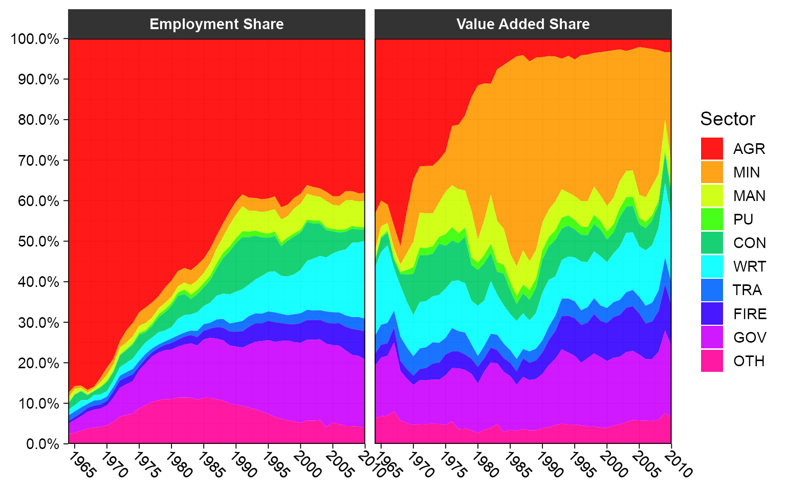
2. Fast Data Manipulation
A lot of R code is not concerned with statistical computations but with preliminary data wrangling. For various reasons R development has focused on data frames as the main medium to contain data, although matrices / arrays provide significantly faster methods for common manipulations.
A first essential step towards optimizing R code is thus to speed up very frequent manipulations on data frames. collapse introduces a set of highly optimized functions to efficiently manipulate (mostly) data frames. Most manipulations can be conducted in non-standard evaluation or standard evaluation (utilizing different functions), and all functions preserve the data structure (i.e. they can be used with data.table, tbl_df, grouped_df, pdata.frame etc.).
2.1 Selecting and Replacing Columns
fselect is an analogue to dplyr::select, but executes about 100x faster. It can be used to select variables using expressions involving variable names:
library(magrittr) # Pipe operators fselect(wlddev, country, year, PCGDP:ODA) %>% head(2) # country year PCGDP LIFEEX GINI ODA # 1 Afghanistan 1960 NA 32.446 NA 116769997 # 2 Afghanistan 1961 NA 32.962 NA 232080002 fselect(wlddev, -country, -year, -(PCGDP:ODA)) %>% head(2) # iso3c date decade region income OECD POP # 1 AFG 1961-01-01 1960 South Asia Low income FALSE 8996973 # 2 AFG 1962-01-01 1960 South Asia Low income FALSE 9169410 library(microbenchmark) microbenchmark(fselect = collapse::fselect(wlddev, country, year, PCGDP:ODA), select = dplyr::select(wlddev, country, year, PCGDP:ODA)) # Unit: microseconds # expr min lq mean median uq max neval cld # fselect 9.371 11.6025 24.86065 18.5195 33.2455 210.629 100 a # select 2315.576 2561.2350 3100.83296 2735.9415 3303.5675 15437.026 100 b
in contrast to dplyr::select, fselect has a replacement method
# Computing the log of columns fselect(wlddev, PCGDP:POP) <- lapply(fselect(wlddev, PCGDP:POP), log) head(wlddev, 2) # country iso3c date year decade region income OECD PCGDP LIFEEX GINI ODA # 1 Afghanistan AFG 1961-01-01 1960 1960 South Asia Low income FALSE NA 3.479577 NA 18.57572 # 2 Afghanistan AFG 1962-01-01 1961 1960 South Asia Low income FALSE NA 3.495355 NA 19.26259 # POP # 1 16.01240 # 2 16.03138 # Efficient deleting fselect(wlddev, country, year, PCGDP:POP) <- NULL head(wlddev, 2) # iso3c date decade region income OECD # 1 AFG 1961-01-01 1960 South Asia Low income FALSE # 2 AFG 1962-01-01 1960 South Asia Low income FALSE rm(wlddev)
and it can also return information about the selected columns other than the data itself.
fselect(wlddev, PCGDP:POP, return = "names") # [1] "PCGDP" "LIFEEX" "GINI" "ODA" "POP" fselect(wlddev, PCGDP:POP, return = "indices") # [1] 9 10 11 12 13 fselect(wlddev, PCGDP:POP, return = "named_indices") # PCGDP LIFEEX GINI ODA POP # 9 10 11 12 13 fselect(wlddev, PCGDP:POP, return = "logical") # [1] FALSE FALSE FALSE FALSE FALSE FALSE FALSE FALSE TRUE TRUE TRUE TRUE TRUE fselect(wlddev, PCGDP:POP, return = "named_logical") # country iso3c date year decade region income OECD PCGDP LIFEEX GINI ODA # FALSE FALSE FALSE FALSE FALSE FALSE FALSE FALSE TRUE TRUE TRUE TRUE # POP # TRUE
While fselect is faster than dplyr::select, it is also simpler and does not offer special methods for grouped tibbles (e.g. where grouping columns are always selected) and some other dplyr-specific features of select. We will see that this is not a problem at all when working with statistical functions in collapse that have a grouped_df method, but users should be careful replacing dplyr::select with fselect in dplyr scripts. From collapse 1.6.0, fselect has explicit support for sf data frames.
The standard-evaluation analogue to fselect is the function get_vars. get_vars can be used to select variables using names, indices, logical vectors, functions or regular expressions evaluated against column names:
get_vars(wlddev, 9:13) %>% head(1) # PCGDP LIFEEX GINI ODA POP # 1 NA 32.446 NA 116769997 8996973 get_vars(wlddev, c("PCGDP","LIFEEX","GINI","ODA","POP")) %>% head(1) # PCGDP LIFEEX GINI ODA POP # 1 NA 32.446 NA 116769997 8996973 get_vars(wlddev, "[[:upper:]]", regex = TRUE) %>% head(1) # OECD PCGDP LIFEEX GINI ODA POP # 1 FALSE NA 32.446 NA 116769997 8996973 get_vars(wlddev, "PC|LI|GI|OD|PO", regex = TRUE) %>% head(1) # PCGDP LIFEEX GINI ODA POP # 1 NA 32.446 NA 116769997 8996973 # Same as above, vectors of regular expressions are sequentially passed to grep get_vars(wlddev, c("PC","LI","GI","OD","PO"), regex = TRUE) %>% head(1) # PCGDP LIFEEX GINI ODA POP # 1 NA 32.446 NA 116769997 8996973 get_vars(wlddev, is.numeric) %>% head(1) # year decade PCGDP LIFEEX GINI ODA POP # 1 1960 1960 NA 32.446 NA 116769997 8996973 # Returning other information get_vars(wlddev, is.numeric, return = "names") # [1] "year" "decade" "PCGDP" "LIFEEX" "GINI" "ODA" "POP" get_vars(wlddev, "[[:upper:]]", regex = TRUE, return = "named_indices") # OECD PCGDP LIFEEX GINI ODA POP # 8 9 10 11 12 13
Replacing operations are conducted analogous:
get_vars(wlddev, 9:13) <- lapply(get_vars(wlddev, 9:13), log) get_vars(wlddev, 9:13) <- NULL head(wlddev, 2) # country iso3c date year decade region income OECD # 1 Afghanistan AFG 1961-01-01 1960 1960 South Asia Low income FALSE # 2 Afghanistan AFG 1962-01-01 1961 1960 South Asia Low income FALSE rm(wlddev)
get_vars is about 2x faster than [.data.frame, and get_vars<- is about 6-8x faster than [<-.data.frame.
In addition to get_vars, collapse offers a set of functions to efficiently select and replace data by data type: num_vars, cat_vars (for categorical = non-numeric columns), char_vars, fact_vars, logi_vars and date_vars (for date and date-time columns).
head(num_vars(wlddev), 2) # year decade PCGDP LIFEEX GINI ODA POP # 1 1960 1960 NA 32.446 NA 116769997 8996973 # 2 1961 1960 NA 32.962 NA 232080002 9169410 head(cat_vars(wlddev), 2) # country iso3c date region income OECD # 1 Afghanistan AFG 1961-01-01 South Asia Low income FALSE # 2 Afghanistan AFG 1962-01-01 South Asia Low income FALSE head(fact_vars(wlddev), 2) # iso3c region income # 1 AFG South Asia Low income # 2 AFG South Asia Low income # Replacing fact_vars(wlddev) <- fact_vars(wlddev)
2.2 Subsetting
fsubset is an enhanced version of base::subset using C functions from the data.table package for fast and subsetting operations. In contrast to base::subset, fsubset allows multiple comma-separated select arguments after the subset argument, and it also preserves all attributes of subsetted columns:
# Returning only value-added data after 1990 fsubset(GGDC10S, Variable == "VA" & Year > 1990, Country, Year, AGR:GOV) %>% head(2) # Country Year AGR MIN MAN PU CON WRT TRA FIRE GOV # 1 BWA 1991 303.1157 2646.950 472.6488 160.6079 580.0876 806.7509 232.7884 432.6965 1073.263 # 2 BWA 1992 333.4364 2690.939 537.4274 178.4532 678.7320 725.2577 285.1403 517.2141 1234.012 # Same thing fsubset(GGDC10S, Variable == "VA" & Year > 1990, -(Regioncode:Variable), -(OTH:SUM)) %>% head(2) # Country Year AGR MIN MAN PU CON WRT TRA FIRE GOV # 1 BWA 1991 303.1157 2646.950 472.6488 160.6079 580.0876 806.7509 232.7884 432.6965 1073.263 # 2 BWA 1992 333.4364 2690.939 537.4274 178.4532 678.7320 725.2577 285.1403 517.2141 1234.012
It is also possible to use standard evaluation with fsubset, but for these purposes the function ss exists as a fast and more secure alternative to [.data.frame:
ss(GGDC10S, 1:2, 6:16) # or fsubset(GGDC10S, 1:2, 6:16), but not recommended. # AGR MIN MAN PU CON WRT TRA FIRE GOV OTH SUM # 1 NA NA NA NA NA NA NA NA NA NA NA # 2 NA NA NA NA NA NA NA NA NA NA NA ss(GGDC10S, -(1:2), c("AGR","MIN")) %>% head(2) # AGR MIN # 1 NA NA # 2 NA NA
Thanks to the data.table C code and optimized R code, fsubset is very fast.
microbenchmark(base = subset(GGDC10S, Variable == "VA" & Year > 1990, AGR:SUM), collapse = fsubset(GGDC10S, Variable == "VA" & Year > 1990, AGR:SUM)) # Unit: microseconds # expr min lq mean median uq max neval cld # base 348.073 361.237 456.8813 370.162 403.1845 5641.456 100 b # collapse 106.207 111.339 122.7494 117.140 128.0730 207.952 100 a microbenchmark(GGDC10S[1:10, 1:10], ss(GGDC10S, 1:10, 1:10)) # Unit: microseconds # expr min lq mean median uq max neval cld # GGDC10S[1:10, 1:10] 126.288 130.0815 150.15791 132.3125 143.692 357.890 100 b # ss(GGDC10S, 1:10, 1:10) 4.908 6.2470 8.18435 8.0320 8.479 28.113 100 a
like base::subset, fsubset is S3 generic with methods for vectors, matrices and data frames. For certain classes such as factors, fsubset.default also improves upon [, but the largest improvements are with the data frame method.
2.3 Reordering Rows and Columns
roworder is a fast analogue to dplyr::arrange. The syntax is inspired by data.table::setorder, so that negative variable names indicate descending sort.
roworder(GGDC10S, -Variable, Country) %>% ss(1:2, 1:8) # Country Regioncode Region Variable Year AGR MIN MAN # 1 ARG LAM Latin America VA 1950 5.887857e-07 0 3.53443e-06 # 2 ARG LAM Latin America VA 1951 9.165327e-07 0 4.77277e-06 microbenchmark(collapse = collapse::roworder(GGDC10S, -Variable, Country), dplyr = dplyr::arrange(GGDC10S, desc(Variable), Country)) # Unit: microseconds # expr min lq mean median uq max neval cld # collapse 298.986 362.13 680.7592 406.9775 534.381 11238.73 100 a # dplyr 38827.959 42279.23 50663.6009 45566.0665 55564.010 97035.54 100 b
In contrast to data.table::setorder, roworder creates a copy of the data frame (unless data are already sorted). If this copy is not required, data.table::setorder is faster. The function roworderv is a standard evaluation analogue to roworder:
# Same as above roworderv(GGDC10S, c("Variable", "Country"), decreasing = c(TRUE, FALSE)) %>% ss(1:2, 1:8) # Country Regioncode Region Variable Year AGR MIN MAN # 1 ARG LAM Latin America VA 1950 5.887857e-07 0 3.53443e-06 # 2 ARG LAM Latin America VA 1951 9.165327e-07 0 4.77277e-06
With roworderv, it is also possible to move or exchange rows in a data frame:
# If length(neworder) < fnrow(data), the default (pos = "front") brings rows to the front roworderv(GGDC10S, neworder = which(GGDC10S$Country == "GHA")) %>% ss(1:2, 1:8) # Country Regioncode Region Variable Year AGR MIN MAN # 1 GHA SSA Sub-saharan Africa VA 1960 0.03576160 0.005103683 0.01744687 # 2 GHA SSA Sub-saharan Africa VA 1961 0.03823049 0.005456030 0.01865136 # pos = "end" brings rows to the end roworderv(GGDC10S, neworder = which(GGDC10S$Country == "BWA"), pos = "end") %>% ss(1:2, 1:8) # Country Regioncode Region Variable Year AGR MIN MAN # 1 ETH SSA Sub-saharan Africa VA 1960 NA NA NA # 2 ETH SSA Sub-saharan Africa VA 1961 4495.614 11.86979 109.616 # pos = "exchange" arranges selected rows in the order they are passed, without affecting other rows roworderv(GGDC10S, neworder = with(GGDC10S, c(which(Country == "GHA"), which(Country == "BWA"))), pos = "exchange") %>% ss(1:2, 1:8) # Country Regioncode Region Variable Year AGR MIN MAN # 1 GHA SSA Sub-saharan Africa VA 1960 0.03576160 0.005103683 0.01744687 # 2 GHA SSA Sub-saharan Africa VA 1961 0.03823049 0.005456030 0.01865136
Similarly, the pair colorder / colorderv facilitates efficient reordering of columns in a data frame. These functions not require a deep copy of the data and are very fast. To reorder columns by reference, see also data.table::setcolorder.
# The default is again pos = "front" which brings selected columns to the front / left colorder(GGDC10S, Variable, Country, Year) %>% head(2) # Variable Country Year Regioncode Region AGR MIN MAN PU CON WRT TRA FIRE GOV OTH SUM # 1 VA BWA 1960 SSA Sub-saharan Africa NA NA NA NA NA NA NA NA NA NA NA # 2 VA BWA 1961 SSA Sub-saharan Africa NA NA NA NA NA NA NA NA NA NA NA
2.4 Transforming and Computing New Columns
ftransform is an improved version of base::transform for data frames and lists. ftransform can be used to compute new columns or modify and delete existing columns, and always returns the entire data frame.
ftransform(GGDC10S, AGR_perc = AGR / SUM * 100, # Computing Agricultural percentage Year = as.integer(Year), # Coercing Year to integer AGR = NULL) %>% tail(2) # Deleting column AGR # Country Regioncode Region Variable Year MIN MAN PU # 5026 EGY MENA Middle East and North Africa EMP 2011 27.56394 2373.814 317.9979 # 5027 EGY MENA Middle East and North Africa EMP 2012 24.78083 2348.434 324.9332 # CON WRT TRA FIRE GOV OTH SUM AGR_perc # 5026 2795.264 3020.236 2048.335 814.7403 5635.522 NA 22219.39 23.33961 # 5027 2931.196 3109.522 2065.004 832.4770 5735.623 NA 22532.56 22.90281 # Computing scalar results replicates them ftransform(GGDC10S, MIN_mean = fmean(MIN), Intercept = 1) %>% tail(2) # Country Regioncode Region Variable Year AGR MIN MAN # 5026 EGY MENA Middle East and North Africa EMP 2011 5185.919 27.56394 2373.814 # 5027 EGY MENA Middle East and North Africa EMP 2012 5160.590 24.78083 2348.434 # PU CON WRT TRA FIRE GOV OTH SUM MIN_mean Intercept # 5026 317.9979 2795.264 3020.236 2048.335 814.7403 5635.522 NA 22219.39 1867909 1 # 5027 324.9332 2931.196 3109.522 2065.004 832.4770 5735.623 NA 22532.56 1867909 1
The modification ftransformv exists to transform specific columns using a function:
# Apply the log to columns 6-16 GGDC10S %>% ftransformv(6:16, log) %>% tail(2) # Country Regioncode Region Variable Year AGR MIN MAN # 5026 EGY MENA Middle East and North Africa EMP 2011 8.553702 3.316508 7.772253 # 5027 EGY MENA Middle East and North Africa EMP 2012 8.548806 3.210070 7.761504 # PU CON WRT TRA FIRE GOV OTH SUM # 5026 5.762045 7.935682 8.013090 7.624782 6.702869 8.636845 NA 10.00872 # 5027 5.783620 7.983166 8.042224 7.632888 6.724406 8.654452 NA 10.02272 # Convert data to percentage terms GGDC10S %>% ftransformv(6:16, `*`, 100/SUM) %>% tail(2) # Country Regioncode Region Variable Year AGR MIN MAN # 5026 EGY MENA Middle East and North Africa EMP 2011 23.33961 0.1240535 10.68352 # 5027 EGY MENA Middle East and North Africa EMP 2012 22.90281 0.1099779 10.42240 # PU CON WRT TRA FIRE GOV OTH SUM # 5026 1.431173 12.58029 13.59279 9.218680 3.666798 25.36308 NA 100 # 5027 1.442061 13.00871 13.80013 9.164534 3.694551 25.45482 NA 100 # Apply log to numeric columns GGDC10S %>% ftransformv(is.numeric, log) %>% tail(2) # Country Regioncode Region Variable Year AGR MIN MAN # 5026 EGY MENA Middle East and North Africa EMP 7.606387 8.553702 3.316508 7.772253 # 5027 EGY MENA Middle East and North Africa EMP 7.606885 8.548806 3.210070 7.761504 # PU CON WRT TRA FIRE GOV OTH SUM # 5026 5.762045 7.935682 8.013090 7.624782 6.702869 8.636845 NA 10.00872 # 5027 5.783620 7.983166 8.042224 7.632888 6.724406 8.654452 NA 10.02272
Instead of passing comma-separated column = value expressions, it is also possible to bulk-process data with fransform by passing a single list of expressions (such as a data frame). This is useful for more complex transformations involving multiple steps:
# Same as above, but also replacing any generated infinite values with NA GGDC10S %>% ftransform(num_vars(.) %>% lapply(log) %>% replace_Inf) %>% tail(2) # Country Regioncode Region Variable Year AGR MIN MAN # 5026 EGY MENA Middle East and North Africa EMP 7.606387 8.553702 3.316508 7.772253 # 5027 EGY MENA Middle East and North Africa EMP 7.606885 8.548806 3.210070 7.761504 # PU CON WRT TRA FIRE GOV OTH SUM # 5026 5.762045 7.935682 8.013090 7.624782 6.702869 8.636845 NA 10.00872 # 5027 5.783620 7.983166 8.042224 7.632888 6.724406 8.654452 NA 10.02272
This mode of usage toggles automatic column matching and replacement. Non-matching columns are added to the data frame. Apart from to ftransform, the function settransform(v) can be used to change the input data frame by reference:
# Computing a new column and deleting some others by reference settransform(GGDC10S, FIRE_MAN = FIRE / MAN, Regioncode = NULL, Region = NULL) tail(GGDC10S, 2) # Country Variable Year AGR MIN MAN PU CON WRT TRA FIRE # 5026 EGY EMP 2011 5185.919 27.56394 2373.814 317.9979 2795.264 3020.236 2048.335 814.7403 # 5027 EGY EMP 2012 5160.590 24.78083 2348.434 324.9332 2931.196 3109.522 2065.004 832.4770 # GOV OTH SUM FIRE_MAN # 5026 5635.522 NA 22219.39 0.3432200 # 5027 5735.623 NA 22532.56 0.3544817 rm(GGDC10S) # Bulk-processing the data into percentage terms settransformv(GGDC10S, 6:16, `*`, 100/SUM) tail(GGDC10S, 2) # Country Regioncode Region Variable Year AGR MIN MAN # 5026 EGY MENA Middle East and North Africa EMP 2011 23.33961 0.1240535 10.68352 # 5027 EGY MENA Middle East and North Africa EMP 2012 22.90281 0.1099779 10.42240 # PU CON WRT TRA FIRE GOV OTH SUM # 5026 1.431173 12.58029 13.59279 9.218680 3.666798 25.36308 NA 100 # 5027 1.442061 13.00871 13.80013 9.164534 3.694551 25.45482 NA 100 # Same thing via replacement ftransform(GGDC10S) <- fselect(GGDC10S, AGR:SUM) %>% lapply(`*`, 100/.$SUM) # Or using double pipes GGDC10S %<>% ftransformv(6:16, `*`, 100/SUM) rm(GGDC10S)
Another convenient addition is provided by the function fcompute, which can be used to compute new columns in a data frame environment and returns the computed columns in a new data frame:
fcompute(GGDC10S, AGR_perc = AGR / SUM * 100, FIRE_MAN = FIRE / MAN) %>% tail(2) # AGR_perc FIRE_MAN # 5026 23.33961 0.3432200 # 5027 22.90281 0.3544817
For more complex tasks see ?ftransform.
2.5 Adding and Binding Columns
For cases where multiple columns are computed and need to be added to a data frame (regardless of whether names are duplicated or not), collapse introduces the predicate add_vars. Together with add_vars, the function add_stub is useful to add a prefix (default) or postfix to computed variables keeping the variable names unique:
# Efficient adding logged versions of some variables add_vars(wlddev) <- get_vars(wlddev, 9:13) %>% lapply(log10) %>% add_stub("log10.") head(wlddev, 2) # country iso3c date year decade region income OECD PCGDP LIFEEX GINI ODA # 1 Afghanistan AFG 1961-01-01 1960 1960 South Asia Low income FALSE NA 32.446 NA 116769997 # 2 Afghanistan AFG 1962-01-01 1961 1960 South Asia Low income FALSE NA 32.962 NA 232080002 # POP log10.PCGDP log10.LIFEEX log10.GINI log10.ODA log10.POP # 1 8996973 NA 1.511161 NA 8.067331 6.954096 # 2 9169410 NA 1.518014 NA 8.365638 6.962341 rm(wlddev)
By default add_vars appends a data frame towards the (right) end, but it can also replace columns in front or at other positions in the data frame:
add_vars(wlddev, "front") <- get_vars(wlddev, 9:13) %>% lapply(log10) %>% add_stub("log10.") head(wlddev, 2) # log10.PCGDP log10.LIFEEX log10.GINI log10.ODA log10.POP country iso3c date year decade # 1 NA 1.511161 NA 8.067331 6.954096 Afghanistan AFG 1961-01-01 1960 1960 # 2 NA 1.518014 NA 8.365638 6.962341 Afghanistan AFG 1962-01-01 1961 1960 # region income OECD PCGDP LIFEEX GINI ODA POP # 1 South Asia Low income FALSE NA 32.446 NA 116769997 8996973 # 2 South Asia Low income FALSE NA 32.962 NA 232080002 9169410 rm(wlddev) add_vars(wlddev, c(10L,12L,14L,16L,18L)) <- get_vars(wlddev, 9:13) %>% lapply(log10) %>% add_stub("log10.") head(wlddev, 2) # country iso3c date year decade region income OECD PCGDP log10.PCGDP LIFEEX # 1 Afghanistan AFG 1961-01-01 1960 1960 South Asia Low income FALSE NA NA 32.446 # 2 Afghanistan AFG 1962-01-01 1961 1960 South Asia Low income FALSE NA NA 32.962 # log10.LIFEEX GINI log10.GINI ODA log10.ODA POP log10.POP # 1 1.511161 NA NA 116769997 8.067331 8996973 6.954096 # 2 1.518014 NA NA 232080002 8.365638 9169410 6.962341 rm(wlddev)
add_vars can also be used without replacement, where it serves as a more efficient version of cbind.data.frame, with the difference that the data structure and attributes of the first argument are preserved:
add_vars(wlddev, get_vars(wlddev, 9:13) %>% lapply(log) %>% add_stub("log."), get_vars(wlddev, 9:13) %>% lapply(log10) %>% add_stub("log10.")) %>% head(2) # country iso3c date year decade region income OECD PCGDP LIFEEX GINI ODA # 1 Afghanistan AFG 1961-01-01 1960 1960 South Asia Low income FALSE NA 32.446 NA 116769997 # 2 Afghanistan AFG 1962-01-01 1961 1960 South Asia Low income FALSE NA 32.962 NA 232080002 # POP log.PCGDP log.LIFEEX log.GINI log.ODA log.POP log10.PCGDP log10.LIFEEX log10.GINI # 1 8996973 NA 3.479577 NA 18.57572 16.01240 NA 1.511161 NA # 2 9169410 NA 3.495355 NA 19.26259 16.03138 NA 1.518014 NA # log10.ODA log10.POP # 1 8.067331 6.954096 # 2 8.365638 6.962341 add_vars(wlddev, get_vars(wlddev, 9:13) %>% lapply(log) %>% add_stub("log."), get_vars(wlddev, 9:13) %>% lapply(log10) %>% add_stub("log10."), pos = c(10L,13L,16L,19L,22L,11L,14L,17L,20L,23L)) %>% head(2) # country iso3c date year decade region income OECD PCGDP log.PCGDP log10.PCGDP # 1 Afghanistan AFG 1961-01-01 1960 1960 South Asia Low income FALSE NA NA NA # 2 Afghanistan AFG 1962-01-01 1961 1960 South Asia Low income FALSE NA NA NA # LIFEEX log.LIFEEX log10.LIFEEX GINI log.GINI log10.GINI ODA log.ODA log10.ODA POP # 1 32.446 3.479577 1.511161 NA NA NA 116769997 18.57572 8.067331 8996973 # 2 32.962 3.495355 1.518014 NA NA NA 232080002 19.26259 8.365638 9169410 # log.POP log10.POP # 1 16.01240 6.954096 # 2 16.03138 6.962341 identical(cbind(wlddev, wlddev), add_vars(wlddev, wlddev)) # [1] TRUE microbenchmark(cbind(wlddev, wlddev), add_vars(wlddev, wlddev)) # Unit: microseconds # expr min lq mean median uq max neval cld # cbind(wlddev, wlddev) 51.765 53.550 57.26717 54.888 56.227 186.085 100 b # add_vars(wlddev, wlddev) 10.710 12.049 13.81602 13.611 15.172 41.948 100 a
2.6 Renaming Columns
frename is a fast substitute for dplyr::rename:
frename(GGDC10S, AGR = Agriculture, MIN = Mining) %>% head(2) # Country Regioncode Region Variable Year Agriculture Mining MAN PU CON WRT TRA FIRE # 1 BWA SSA Sub-saharan Africa VA 1960 NA NA NA NA NA NA NA NA # 2 BWA SSA Sub-saharan Africa VA 1961 NA NA NA NA NA NA NA NA # GOV OTH SUM # 1 NA NA NA # 2 NA NA NA frename(GGDC10S, tolower) %>% head(2) # country regioncode region variable year agr min man pu con wrt tra fire gov oth sum # 1 BWA SSA Sub-saharan Africa VA 1960 NA NA NA NA NA NA NA NA NA NA NA # 2 BWA SSA Sub-saharan Africa VA 1961 NA NA NA NA NA NA NA NA NA NA NA frename(GGDC10S, tolower, cols = .c(AGR, MIN)) %>% head(2) # Country Regioncode Region Variable Year agr min MAN PU CON WRT TRA FIRE GOV OTH SUM # 1 BWA SSA Sub-saharan Africa VA 1960 NA NA NA NA NA NA NA NA NA NA NA # 2 BWA SSA Sub-saharan Africa VA 1961 NA NA NA NA NA NA NA NA NA NA NA
The function setrename does this by reference:
setrename(GGDC10S, AGR = Agriculture, MIN = Mining) head(GGDC10S, 2) # Country Regioncode Region Variable Year Agriculture Mining MAN PU CON WRT TRA FIRE # 1 BWA SSA Sub-saharan Africa VA 1960 NA NA NA NA NA NA NA NA # 2 BWA SSA Sub-saharan Africa VA 1961 NA NA NA NA NA NA NA NA # GOV OTH SUM # 1 NA NA NA # 2 NA NA NA rm(GGDC10S)
Both functions are not limited to data frames but can be applied to any R object with a ‘names’ attribute.
2.7 Using Shortcuts
The most frequently required among the functions introduced above can be abbreviated as follows: fselect -> slt, fsubset -> sbt, ftransform(v) -> tfm(v), settransform(v) -> settfm(v), get_vars -> gv, num_vars -> nv, add_vars -> av. This was done to make it possible to write faster and more parsimonious code, but is recommended only for personally kept scripts. A lazy person may also decide to code everything using shortcuts and then do ctrl+F replacement with the long names on the finished script.
2.8 Missing Values / Rows
The function na_omit is a much faster alternative to stats::na.omit for vectors, matrices and data frames. By default the ‘na.action’ attribute containing the removed cases is omitted, but it can be added with the option na.attr = TRUE. Like fsubset, na_omit preserves all column attributes as well as attributes of the data frame itself.
microbenchmark(na_omit(wlddev, na.attr = TRUE), na.omit(wlddev)) # Unit: microseconds # expr min lq mean median uq max neval cld # na_omit(wlddev, na.attr = TRUE) 292.292 363.245 500.560 390.4665 479.269 5924.377 100 a # na.omit(wlddev) 1576.145 1730.101 2438.924 1936.0430 2267.828 10647.456 100 b
Another added feature is the removal of cases missing on certain columns only:
na_omit(wlddev, cols = .c(PCGDP, LIFEEX)) %>% head(2) # country iso3c date year decade region income OECD PCGDP LIFEEX GINI # 1 Afghanistan AFG 2003-01-01 2002 2000 South Asia Low income FALSE 330.3036 56.784 NA # 2 Afghanistan AFG 2004-01-01 2003 2000 South Asia Low income FALSE 343.0809 57.271 NA # ODA POP # 1 1790479980 22600770 # 2 1972890015 23680871 # only removing missing data from numeric columns -> same and slightly faster than na_omit(wlddev) na_omit(wlddev, cols = is.numeric) %>% head(2) # country iso3c date year decade region income OECD PCGDP # 1 Albania ALB 1997-01-01 1996 1990 Europe & Central Asia Upper middle income FALSE 1869.866 # 2 Albania ALB 2003-01-01 2002 2000 Europe & Central Asia Upper middle income FALSE 2572.721 # LIFEEX GINI ODA POP # 1 72.495 27.0 294089996 3168033 # 2 74.579 31.7 453309998 3051010
For atomic vectors the function na_rm also exists which is 2x faster than x[!is.na(x)]. Both na_omit and na_rm return their argument if no missing cases were found.
The existence of missing cases can be checked using missing_cases, which is also considerably faster than complete.cases for data frames.
There is also a function na_insert to randomly insert missing values into vectors, matrices and data frames. The default is na_insert(X, prop = 0.1) so that 10% of values are randomly set to missing.
Finally, a function allNA provides the much needed opposite of anyNA for atomic vectors.
2.9 Unique Values / Rows
Similar to na_omit, the function funique is a much faster alternative to base::unique for atomic vectors and data frames. Like most collapse functions it also seeks to preserve attributes.
funique(GGDC10S$Variable) # Unique values in order of appearance # [1] "VA" "EMP" # attr(,"label") # [1] "Variable" # attr(,"format.stata") # [1] "%9s" funique(GGDC10S$Variable, sort = TRUE) # Sorted unique values # [1] "EMP" "VA" # attr(,"label") # [1] "Variable" # attr(,"format.stata") # [1] "%9s" # If all values/rows are unique, the original data is returned (no copy) identical(funique(GGDC10S), GGDC10S) # [1] TRUE # Can remove duplicate rows by a subset of columns funique(GGDC10S, cols = .c(Country, Variable)) %>% ss(1:2, 1:8) # Country Regioncode Region Variable Year AGR MIN MAN # 1 BWA SSA Sub-saharan Africa VA 1960 NA NA NA # 2 BWA SSA Sub-saharan Africa EMP 1960 NA NA NA funique(GGDC10S, cols = .c(Country, Variable), sort = TRUE) %>% ss(1:2, 1:8) # Country Regioncode Region Variable Year AGR MIN MAN # 1 ARG LAM Latin America EMP 1950 1.799565e+03 32.71936 1.603249e+03 # 2 ARG LAM Latin America VA 1950 5.887857e-07 0.00000 3.534430e-06
2.10 Recoding and Replacing Values
With recode_num, recode_char, replace_NA, replace_Inf and replace_outliers, collapse also introduces a set of functions to efficiently recode and replace numeric and character values in matrix-like objects (vectors, matrices, arrays, data frames, lists of atomic objects). When called on a data frame, recode_num, replace_Inf and replace_outliers will skip non-numeric columns, and recode_char skips non-character columns, whereas replace_NA replaces missing values in all columns.
# Efficient replacing missing values with 0 microbenchmark(replace_NA(GGDC10S, 0)) # Unit: microseconds # expr min lq mean median uq max neval # replace_NA(GGDC10S, 0) 358.783 372.393 618.6994 397.1595 442.4545 7113.625 100 # Adding log-transformed sectoral data: Some NaN and Inf values generated add_vars(GGDC10S, 6:16*2-5) <- fselect(GGDC10S, AGR:SUM) %>% lapply(log) %>% replace_Inf %>% add_stub("log.") head(GGDC10S, 2) # Country Regioncode Region Variable Year AGR log.AGR MIN log.MIN MAN log.MAN PU log.PU # 1 BWA SSA Sub-saharan Africa VA 1960 NA NA NA NA NA NA NA NA # 2 BWA SSA Sub-saharan Africa VA 1961 NA NA NA NA NA NA NA NA # CON log.CON WRT log.WRT TRA log.TRA FIRE log.FIRE GOV log.GOV OTH log.OTH SUM log.SUM # 1 NA NA NA NA NA NA NA NA NA NA NA NA NA NA # 2 NA NA NA NA NA NA NA NA NA NA NA NA NA NA rm(GGDC10S)
recode_num and recode_char follow the syntax of dplyr::recode and provide more or less the same functionality except that they can efficiently be applied to matrices and data frames, and that recode_char allows for regular expression matching implemented via base::grepl:
month.name # [1] "January" "February" "March" "April" "May" "June" "July" "August" # [9] "September" "October" "November" "December" recode_char(month.name, ber = "C", "^J" = "A", default = "B", regex = TRUE) # [1] "A" "B" "B" "B" "B" "A" "A" "B" "C" "C" "C" "C"
The perhaps most interesting function in this ensemble is replace_outliers, which replaces values falling outside a 1- or 2-sided numeric threshold or outside a certain number of column- standard deviations with a value (default is NA).
# replace all values below 2 and above 100 with NA replace_outliers(mtcars, c(2, 100)) %>% head(3) # mpg cyl disp hp drat wt qsec vs am gear carb # Mazda RX4 21.0 6 NA NA 3.90 2.620 16.46 NA NA 4 4 # Mazda RX4 Wag 21.0 6 NA NA 3.90 2.875 17.02 NA NA 4 4 # Datsun 710 22.8 4 NA 93 3.85 2.320 18.61 NA NA 4 NA # replace all value smaller than 2 with NA replace_outliers(mtcars, 2, single.limit = "min") %>% head(3) # mpg cyl disp hp drat wt qsec vs am gear carb # Mazda RX4 21.0 6 160 110 3.90 2.620 16.46 NA NA 4 4 # Mazda RX4 Wag 21.0 6 160 110 3.90 2.875 17.02 NA NA 4 4 # Datsun 710 22.8 4 108 93 3.85 2.320 18.61 NA NA 4 NA # replace all value larger than 100 with NA replace_outliers(mtcars, 100, single.limit = "max") %>% head(3) # mpg cyl disp hp drat wt qsec vs am gear carb # Mazda RX4 21.0 6 NA NA 3.90 2.620 16.46 0 1 4 4 # Mazda RX4 Wag 21.0 6 NA NA 3.90 2.875 17.02 0 1 4 4 # Datsun 710 22.8 4 NA 93 3.85 2.320 18.61 1 1 4 1 # replace all values above or below 3 column-standard-deviations from the column-mean with NA replace_outliers(mtcars, 3) %>% tail(3) # mpg cyl disp hp drat wt qsec vs am gear carb # Ferrari Dino 19.7 6 145 175 3.62 2.77 15.5 0 1 5 6 # Maserati Bora 15.0 8 301 335 3.54 3.57 14.6 0 1 5 NA # Volvo 142E 21.4 4 121 109 4.11 2.78 18.6 1 1 4 2
3. Quick Data Object Conversions
Apart from code employed for manipulation of data and the actual statistical computations performed, frequently used data object conversions with base functions like as.data.frame, as.matrix or as.factor have a significant share in slowing down R code. Optimally code would be written without such conversions, but sometimes they are necessary and thus collapse provides a set of functions (qDF, qDT, qTBL, qM, qF, mrtl and mctl) to speed these conversions up quite a bit. These functions are fast because they are non-generic and dispatch different objects internally, perform critical steps in C++, and, when passed lists of objects, they only check the length of the first column.
qDF, qDT and qTBL efficiently convert vectors, matrices, higher-dimensional arrays and suitable lists to data.frame, data.table and tibble respectively.
str(EuStockMarkets) # Time-Series [1:1860, 1:4] from 1991 to 1999: 1629 1614 1607 1621 1618 ... # - attr(*, "dimnames")=List of 2 # ..$ : NULL # ..$ : chr [1:4] "DAX" "SMI" "CAC" "FTSE" # Efficient Conversion of data frames and matrices to data.table microbenchmark(qDT(wlddev), qDT(EuStockMarkets), as.data.table(wlddev), as.data.frame(EuStockMarkets)) # Unit: microseconds # expr min lq mean median uq max neval cld # qDT(wlddev) 12.495 17.4035 28.32353 27.2210 34.8080 93.266 100 a # qDT(EuStockMarkets) 26.329 37.9315 62.67565 47.0795 67.6065 707.302 100 a # as.data.table(wlddev) 346.288 406.9775 724.09861 460.9730 647.2815 8031.556 100 c # as.data.frame(EuStockMarkets) 259.716 280.0200 393.49211 346.9580 388.6820 1085.720 100 b # Converting a time series to data.frame head(qDF(AirPassengers)) # AirPassengers # 1 112 # 2 118 # 3 132 # 4 129 # 5 121 # 6 135
By default these functions drop all unnecessary attributes from matrices or lists / data frames in the conversion, but this can be changed using the keep.attr = TRUE argument.
A useful additional feature of qDF and qDT is the row.names.col argument, enabling the saving of names / row-names in a column when converting from vector, matrix, array or data frame:
# This saves the row-names in a column named 'car' head(qDT(mtcars, "car")) # car mpg cyl disp hp drat wt qsec vs am gear carb # 1: Mazda RX4 21.0 6 160 110 3.90 2.620 16.46 0 1 4 4 # 2: Mazda RX4 Wag 21.0 6 160 110 3.90 2.875 17.02 0 1 4 4 # 3: Datsun 710 22.8 4 108 93 3.85 2.320 18.61 1 1 4 1 # 4: Hornet 4 Drive 21.4 6 258 110 3.08 3.215 19.44 1 0 3 1 # 5: Hornet Sportabout 18.7 8 360 175 3.15 3.440 17.02 0 0 3 2 # 6: Valiant 18.1 6 225 105 2.76 3.460 20.22 1 0 3 1 N_distinct <- fndistinct(GGDC10S) N_distinct # Country Regioncode Region Variable Year AGR MIN MAN PU # 43 6 6 2 67 4353 4224 4353 4237 # CON WRT TRA FIRE GOV OTH SUM # 4339 4344 4334 4349 3470 4238 4364 # Converting a vector to data.frame, saving names head(qDF(N_distinct, "variable")) # variable N_distinct # 1 Country 43 # 2 Regioncode 6 # 3 Region 6 # 4 Variable 2 # 5 Year 67 # 6 AGR 4353
For the conversion of matrices to list there are also the programmers functions mrtl and mctl, which row- or column- wise convert a matrix into a plain list, data.frame or data.table.
# This converts the matrix to a list of 1860 row-vectors of length 4. microbenchmark(mrtl(EuStockMarkets)) # Unit: microseconds # expr min lq mean median uq max neval # mrtl(EuStockMarkets) 139.229 169.574 231.9059 175.3755 221.1155 1336.51 100
For the reverse operation, qM converts vectors, higher-dimensional arrays, data frames and suitable lists to matrix. For example probably the most efficient way to calculate row-sums from a data frame is:
microbenchmark(rowSums(qM(mtcars)), rowSums(mtcars)) # Unit: microseconds # expr min lq mean median uq max neval cld # rowSums(qM(mtcars)) 20.973 23.428 47.36047 25.882 36.1460 1582.392 100 a # rowSums(mtcars) 112.008 116.025 154.22321 117.809 127.4035 1744.826 100 b
At last, qF converts vectors to factor and is quite a bit faster than as.factor:
# Converting from character str(wlddev$country) # chr [1:13176] "Afghanistan" "Afghanistan" "Afghanistan" "Afghanistan" "Afghanistan" ... # - attr(*, "label")= chr "Country Name" fndistinct(wlddev$country) # [1] 216 microbenchmark(qF(wlddev$country), as.factor(wlddev$country)) # Unit: microseconds # expr min lq mean median uq max neval cld # qF(wlddev$country) 173.590 180.5075 228.3984 188.0930 211.0745 1276.713 100 a # as.factor(wlddev$country) 643.042 666.6930 812.4242 739.2085 914.5840 1706.003 100 b # Converting from numeric str(wlddev$PCGDP) # num [1:13176] NA NA NA NA NA NA NA NA NA NA ... # - attr(*, "label")= chr "GDP per capita (constant 2010 US$)" fndistinct(wlddev$PCGDP) # [1] 9470 microbenchmark(qF(wlddev$PCGDP), as.factor(wlddev$PCGDP)) # Unit: milliseconds # expr min lq mean median uq max neval cld # qF(wlddev$PCGDP) 1.000486 1.088173 1.33261 1.214238 1.470607 3.299105 100 a # as.factor(wlddev$PCGDP) 38.350921 41.131040 44.63631 42.841283 45.302112 75.745980 100 b
4. Advanced Statistical Programming
Having introduced some of the more basic collapse data manipulation infrastructure in the preceding chapters, this chapter introduces some of the packages core functionality for programming with data.
4.1 Fast (Grouped, Weighted) Statistical Functions
A key feature of collapse is it’s broad set of Fast Statistical Functions (fsum, fprod, fmean, fmedian, fmode, fvar, fsd, fmin, fmax, fnth, ffirst, flast, fnobs, fndistinct), which are able to tangibly speed-up column-wise, grouped and weighted statistical computations on vectors, matrices or data frames. The basic syntax common to all of these functions is:
FUN(x, g = NULL, [w = NULL,] TRA = NULL, [na.rm = TRUE,] use.g.names = TRUE, drop = TRUE)where x is a vector, matrix or data frame, g takes groups supplied as vector, factor, list of vectors or GRP object, and w takes a weight vector (supported by fsum, fprod, fmean, fmedian, fmode, fnth, fvar and fsd). TRA can be used to transform x using the computed statistics and one of 10 available transformations ("replace_fill", "replace", "-", "-+", "/", "%", "+", "*", "%%, "-%%", discussed in section 6.3). na.rm efficiently skips missing values during the computation and is TRUE by default. use.g.names = TRUE generates new row-names from the unique groups supplied to g, and drop = TRUE returns a vector when performing simple (non-grouped) computations on matrix or data frame columns.
With that in mind, let’s start with some simple examples. To calculate simple column-wise means, it is sufficient to type:
fmean(mtcars$mpg) # Vector # [1] 20.09062 fmean(mtcars) # mpg cyl disp hp drat wt qsec vs am # 20.090625 6.187500 230.721875 146.687500 3.596562 3.217250 17.848750 0.437500 0.406250 # gear carb # 3.687500 2.812500 fmean(mtcars, drop = FALSE) # This returns a 1-row data-frame # mpg cyl disp hp drat wt qsec vs am gear carb # 1 20.09062 6.1875 230.7219 146.6875 3.596562 3.21725 17.84875 0.4375 0.40625 3.6875 2.8125 m <- qM(mtcars) # Generate matrix fmean(m) # mpg cyl disp hp drat wt qsec vs am # 20.090625 6.187500 230.721875 146.687500 3.596562 3.217250 17.848750 0.437500 0.406250 # gear carb # 3.687500 2.812500 fmean(m, drop = FALSE) # This returns a 1-row matrix # mpg cyl disp hp drat wt qsec vs am gear carb # [1,] 20.09062 6.1875 230.7219 146.6875 3.596562 3.21725 17.84875 0.4375 0.40625 3.6875 2.8125
Note that separate methods for vectors, matrices and data frames are written in C++, thus no conversions are needed and computations on matrices and data frames are equally efficient. If we had a weight vector, weighted statistics are easily computed:
weights <- abs(rnorm(fnrow(mtcars))) # fnrow is a bit faster for data frames fmean(mtcars, w = weights) # Weighted mean # mpg cyl disp hp drat wt qsec vs # 20.1041061 6.2412847 240.5391664 143.2688893 3.5825612 3.1872211 17.8351222 0.4262895 # am gear carb # 0.3964721 3.6878178 2.6160392 fmedian(mtcars, w = weights) # Weighted median # mpg cyl disp hp drat wt qsec vs am gear carb # 19.200 6.000 167.600 123.000 3.770 3.435 17.400 0.000 0.000 4.000 2.000 fsd(mtcars, w = weights) # Frequency-weighted standard deviation # mpg cyl disp hp drat wt qsec vs # 5.7217239 1.7619583 129.0222926 60.9549752 0.5314225 0.9421773 1.7265067 0.5037345 # am gear carb # 0.4982623 0.7336692 1.4626090 fmode(mtcars, w = weights) # Weighted statistical mode (i.e. the value with the largest sum of weights) # mpg cyl disp hp drat wt qsec vs am gear carb # 19.20 8.00 360.00 175.00 3.15 3.44 17.02 0.00 0.00 3.00 2.00
Fast grouped statistics can be calculated by simply passing grouping vectors or lists of grouping vectors to the fast functions:
fmean(mtcars, mtcars$cyl) # mpg cyl disp hp drat wt qsec vs am gear carb # 4 26.66364 4 105.1364 82.63636 4.070909 2.285727 19.13727 0.9090909 0.7272727 4.090909 1.545455 # 6 19.74286 6 183.3143 122.28571 3.585714 3.117143 17.97714 0.5714286 0.4285714 3.857143 3.428571 # 8 15.10000 8 353.1000 209.21429 3.229286 3.999214 16.77214 0.0000000 0.1428571 3.285714 3.500000 fmean(mtcars, fselect(mtcars, cyl, vs, am)) # mpg cyl disp hp drat wt qsec vs am gear carb # 4.0.1 26.00000 4 120.3000 91.00000 4.430000 2.140000 16.70000 0 1 5.000000 2.000000 # 4.1.0 22.90000 4 135.8667 84.66667 3.770000 2.935000 20.97000 1 0 3.666667 1.666667 # 4.1.1 28.37143 4 89.8000 80.57143 4.148571 2.028286 18.70000 1 1 4.142857 1.428571 # 6.0.1 20.56667 6 155.0000 131.66667 3.806667 2.755000 16.32667 0 1 4.333333 4.666667 # 6.1.0 19.12500 6 204.5500 115.25000 3.420000 3.388750 19.21500 1 0 3.500000 2.500000 # 8.0.0 15.05000 8 357.6167 194.16667 3.120833 4.104083 17.14250 0 0 3.000000 3.083333 # 8.0.1 15.40000 8 326.0000 299.50000 3.880000 3.370000 14.55000 0 1 5.000000 6.000000 # Getting column indices ind <- fselect(mtcars, cyl, vs, am, return = "indices") fmean(get_vars(mtcars, -ind), get_vars(mtcars, ind)) # mpg disp hp drat wt qsec gear carb # 4.0.1 26.00000 120.3000 91.00000 4.430000 2.140000 16.70000 5.000000 2.000000 # 4.1.0 22.90000 135.8667 84.66667 3.770000 2.935000 20.97000 3.666667 1.666667 # 4.1.1 28.37143 89.8000 80.57143 4.148571 2.028286 18.70000 4.142857 1.428571 # 6.0.1 20.56667 155.0000 131.66667 3.806667 2.755000 16.32667 4.333333 4.666667 # 6.1.0 19.12500 204.5500 115.25000 3.420000 3.388750 19.21500 3.500000 2.500000 # 8.0.0 15.05000 357.6167 194.16667 3.120833 4.104083 17.14250 3.000000 3.083333 # 8.0.1 15.40000 326.0000 299.50000 3.880000 3.370000 14.55000 5.000000 6.000000
4.2 Factors, Grouping Objects and Grouped Data Frames
This programming can becomes more efficient when passing factors or grouping objects to the g argument, as otherwise vectors and lists of vectors are grouped internally.
# This creates a factor, na.exclude = FALSE attaches a class 'na.included' f <- qF(mtcars$cyl, na.exclude = FALSE) # The 'na.included' attribute skips a missing value check on this factor attributes(f) # $levels # [1] "4" "6" "8" # # $class # [1] "factor" "na.included" # Saving data without grouping columns dat <- get_vars(mtcars, -ind) # Grouped standard-deviation fsd(dat, f) # mpg disp hp drat wt qsec gear carb # 4 4.509828 26.87159 20.93453 0.3654711 0.5695637 1.682445 0.5393599 0.522233 # 6 1.453567 41.56246 24.26049 0.4760552 0.3563455 1.706866 0.6900656 1.812654 # 8 2.560048 67.77132 50.97689 0.3723618 0.7594047 1.196014 0.7262730 1.556624 # Without option na.exclude = FALSE, anyNA needs to be called on the factor (noticeable on larger data). f2 <- qF(mtcars$cyl) microbenchmark(fsd(dat, f), fsd(dat, f2)) # Unit: microseconds # expr min lq mean median uq max neval cld # fsd(dat, f) 12.942 13.834 15.46723 14.280 15.173 74.078 100 a # fsd(dat, f2) 13.388 14.280 15.57871 14.727 15.619 30.791 100 a
For programming purposes GRP objects are preferable over factors because they never require further checks and they provide additional information about the grouping (such as group sizes and the original unique values in each group). The GRP function creates grouping objects (of class GRP) from vectors or lists of columns. Grouping is done very efficiently via radix ordering in C (using the radixorder function):
# This creates a 'GRP' object. g <- GRP(mtcars, ~ cyl + vs + am) # Using the formula interface, could also use c("cyl","vs","am") or c(2,8:9) str(g) # List of 8 # $ N.groups : int 7 # $ group.id : int [1:32] 4 4 3 5 6 5 6 2 2 5 ... # $ group.sizes: int [1:7] 1 3 7 3 4 12 2 # $ groups :'data.frame': 7 obs. of 3 variables: # ..$ cyl: num [1:7] 4 4 4 6 6 8 8 # ..$ vs : num [1:7] 0 1 1 0 1 0 0 # ..$ am : num [1:7] 1 0 1 1 0 0 1 # $ group.vars : chr [1:3] "cyl" "vs" "am" # $ ordered : Named logi [1:2] TRUE FALSE # ..- attr(*, "names")= chr [1:2] "GRP.sort" "initially.ordered" # $ order : NULL # $ call : language GRP.default(X = mtcars, by = ~cyl + vs + am) # - attr(*, "class")= chr "GRP"
The first three elements of this object provide information about the number of groups, the group to which each row belongs, and the size of each group. A print and a plot method provide further information about the grouping:
print(g) # collapse grouping object of length 32 with 7 ordered groups # # Call: GRP.default(X = mtcars, by = ~cyl + vs + am), X is unordered # # Distribution of group sizes: # Min. 1st Qu. Median Mean 3rd Qu. Max. # 1.000 2.500 3.000 4.571 5.500 12.000 # # Groups with sizes: # 4.0.1 4.1.0 4.1.1 6.0.1 6.1.0 8.0.0 8.0.1 # 1 3 7 3 4 12 2 plot(g)
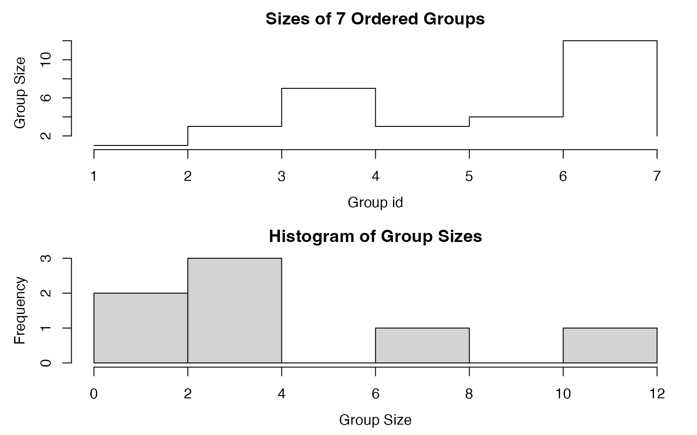
The important elements of the GRP object are directly handed down to the compiled C++ code of the statistical functions, making repeated computations over the same groups very efficient.
fsd(dat, g) # mpg disp hp drat wt qsec gear carb # 4.0.1 NA NA NA NA NA NA NA NA # 4.1.0 1.4525839 13.969371 19.65536 0.1300000 0.4075230 1.67143651 0.5773503 0.5773503 # 4.1.1 4.7577005 18.802128 24.14441 0.3783926 0.4400840 0.94546285 0.3779645 0.5345225 # 6.0.1 0.7505553 8.660254 37.52777 0.1616581 0.1281601 0.76872188 0.5773503 1.1547005 # 6.1.0 1.6317169 44.742634 9.17878 0.5919459 0.1162164 0.81590441 0.5773503 1.7320508 # 8.0.0 2.7743959 71.823494 33.35984 0.2302749 0.7683069 0.80164745 0.0000000 0.9003366 # 8.0.1 0.5656854 35.355339 50.20458 0.4808326 0.2828427 0.07071068 0.0000000 2.8284271 # Grouped computation with and without prior grouping microbenchmark(fsd(dat, g), fsd(dat, get_vars(mtcars, ind))) # Unit: microseconds # expr min lq mean median uq max neval cld # fsd(dat, g) 65.152 96.3900 230.7546 130.7505 262.1705 2757.361 100 a # fsd(dat, get_vars(mtcars, ind)) 107.992 150.6085 474.6420 271.9875 535.9425 6089.488 100 b
Yet another possibility is creating a grouped data frame (class grouped_df). This can either be done using dplyr::group_by, which creates a grouped tibble and requires a conversion of the grouping object using GRP.grouped_df, or using the more efficient fgroup_by provided in collapse:
gmtcars <- fgroup_by(mtcars, cyl, vs, am) # fgroup_by() can also be abbreviated as gby() fmedian(gmtcars) # cyl vs am mpg disp hp drat wt qsec gear carb # 1 4 0 1 26.00 120.3 91.0 4.430 2.140 16.70 5.0 2.0 # 2 4 1 0 22.80 140.8 95.0 3.700 3.150 20.01 4.0 2.0 # 3 4 1 1 30.40 79.0 66.0 4.080 1.935 18.61 4.0 1.0 # 4 6 0 1 21.00 160.0 110.0 3.900 2.770 16.46 4.0 4.0 # 5 6 1 0 18.65 196.3 116.5 3.500 3.440 19.17 3.5 2.5 # 6 8 0 0 15.20 355.0 180.0 3.075 3.810 17.35 3.0 3.0 # 7 8 0 1 15.40 326.0 299.5 3.880 3.370 14.55 5.0 6.0 head(fgroup_vars(gmtcars)) # cyl vs am # Mazda RX4 6 0 1 # Mazda RX4 Wag 6 0 1 # Datsun 710 4 1 1 # Hornet 4 Drive 6 1 0 # Hornet Sportabout 8 0 0 # Valiant 6 1 0 fmedian(gmtcars, keep.group_vars = FALSE) # mpg disp hp drat wt qsec gear carb # 1 26.00 120.3 91.0 4.430 2.140 16.70 5.0 2.0 # 2 22.80 140.8 95.0 3.700 3.150 20.01 4.0 2.0 # 3 30.40 79.0 66.0 4.080 1.935 18.61 4.0 1.0 # 4 21.00 160.0 110.0 3.900 2.770 16.46 4.0 4.0 # 5 18.65 196.3 116.5 3.500 3.440 19.17 3.5 2.5 # 6 15.20 355.0 180.0 3.075 3.810 17.35 3.0 3.0 # 7 15.40 326.0 299.5 3.880 3.370 14.55 5.0 6.0
Now suppose we wanted to create a new dataset which contains the mean, sd, min and max of the variables mpg and disp grouped by cyl, vs and am:
# Standard evaluation dat <- get_vars(mtcars, c("mpg", "disp")) add_vars(g[["groups"]], add_stub(fmean(dat, g, use.g.names = FALSE), "mean_"), add_stub(fsd(dat, g, use.g.names = FALSE), "sd_"), add_stub(fmin(dat, g, use.g.names = FALSE), "min_"), add_stub(fmax(dat, g, use.g.names = FALSE), "max_")) # cyl vs am mean_mpg mean_disp sd_mpg sd_disp min_mpg min_disp max_mpg max_disp # 1 4 0 1 26.00000 120.3000 NA NA 26.0 120.3 26.0 120.3 # 2 4 1 0 22.90000 135.8667 1.4525839 13.969371 21.5 120.1 24.4 146.7 # 3 4 1 1 28.37143 89.8000 4.7577005 18.802128 21.4 71.1 33.9 121.0 # 4 6 0 1 20.56667 155.0000 0.7505553 8.660254 19.7 145.0 21.0 160.0 # 5 6 1 0 19.12500 204.5500 1.6317169 44.742634 17.8 167.6 21.4 258.0 # 6 8 0 0 15.05000 357.6167 2.7743959 71.823494 10.4 275.8 19.2 472.0 # 7 8 0 1 15.40000 326.0000 0.5656854 35.355339 15.0 301.0 15.8 351.0 # Non-Standard evaluation fgroup_by(mtcars, cyl, vs, am) %>% fselect(mpg, disp) %>% { add_vars(fgroup_vars(., "unique"), fmean(., keep.group_vars = FALSE) %>% add_stub("mean_"), fsd(., keep.group_vars = FALSE) %>% add_stub("sd_"), fmin(., keep.group_vars = FALSE) %>% add_stub("min_"), fmax(., keep.group_vars = FALSE) %>% add_stub("max_")) } # cyl vs am mean_mpg mean_disp sd_mpg sd_disp min_mpg min_disp max_mpg max_disp # 1 4 0 1 26.00000 120.3000 NA NA 26.0 120.3 26.0 120.3 # 2 4 1 0 22.90000 135.8667 1.4525839 13.969371 21.5 120.1 24.4 146.7 # 3 4 1 1 28.37143 89.8000 4.7577005 18.802128 21.4 71.1 33.9 121.0 # 4 6 0 1 20.56667 155.0000 0.7505553 8.660254 19.7 145.0 21.0 160.0 # 5 6 1 0 19.12500 204.5500 1.6317169 44.742634 17.8 167.6 21.4 258.0 # 6 8 0 0 15.05000 357.6167 2.7743959 71.823494 10.4 275.8 19.2 472.0 # 7 8 0 1 15.40000 326.0000 0.5656854 35.355339 15.0 301.0 15.8 351.0
4.3 Grouped and Weighted Computations
We could also calculate groupwise-frequency weighted means and standard-deviations using a weight vector2.
# Grouped and weighted mean and sd and grouped min and max add_vars(g[["groups"]], add_stub(fmean(dat, g, weights, use.g.names = FALSE), "w_mean_"), add_stub(fsd(dat, g, weights, use.g.names = FALSE), "w_sd_"), add_stub(fmin(dat, g, use.g.names = FALSE), "min_"), add_stub(fmax(dat, g, use.g.names = FALSE), "max_")) # cyl vs am w_mean_mpg w_mean_disp w_sd_mpg w_sd_disp min_mpg min_disp max_mpg max_disp # 1 4 0 1 26.00000 120.30000 0.0000000 0.000000 26.0 120.3 26.0 120.3 # 2 4 1 0 22.40856 133.08559 1.2135069 15.279500 21.5 120.1 24.4 146.7 # 3 4 1 1 27.89791 92.16107 5.1154761 18.535844 21.4 71.1 33.9 121.0 # 4 6 0 1 20.90036 158.85035 0.4604889 5.313334 19.7 145.0 21.0 160.0 # 5 6 1 0 18.99825 194.02436 1.3547482 40.942574 17.8 167.6 21.4 258.0 # 6 8 0 0 15.78964 376.41862 3.3911088 62.540934 10.4 275.8 19.2 472.0 # 7 8 0 1 15.52423 333.76415 0.5886977 36.793605 15.0 301.0 15.8 351.0 # Binding and reordering columns in a single step: Add columns in specific positions add_vars(g[["groups"]], add_stub(fmean(dat, g, weights, use.g.names = FALSE), "w_mean_"), add_stub(fsd(dat, g, weights, use.g.names = FALSE), "w_sd_"), add_stub(fmin(dat, g, use.g.names = FALSE), "min_"), add_stub(fmax(dat, g, use.g.names = FALSE), "max_"), pos = c(4,8,5,9,6,10,7,11)) # cyl vs am w_mean_mpg w_sd_mpg min_mpg max_mpg w_mean_disp w_sd_disp min_disp max_disp # 1 4 0 1 26.00000 0.0000000 26.0 26.0 120.30000 0.000000 120.3 120.3 # 2 4 1 0 22.40856 1.2135069 21.5 24.4 133.08559 15.279500 120.1 146.7 # 3 4 1 1 27.89791 5.1154761 21.4 33.9 92.16107 18.535844 71.1 121.0 # 4 6 0 1 20.90036 0.4604889 19.7 21.0 158.85035 5.313334 145.0 160.0 # 5 6 1 0 18.99825 1.3547482 17.8 21.4 194.02436 40.942574 167.6 258.0 # 6 8 0 0 15.78964 3.3911088 10.4 19.2 376.41862 62.540934 275.8 472.0 # 7 8 0 1 15.52423 0.5886977 15.0 15.8 333.76415 36.793605 301.0 351.0
The R overhead of this kind of programming in standard-evaluation is very low:
microbenchmark(call = add_vars(g[["groups"]], add_stub(fmean(dat, g, weights, use.g.names = FALSE), "w_mean_"), add_stub(fsd(dat, g, weights, use.g.names = FALSE), "w_sd_"), add_stub(fmin(dat, g, use.g.names = FALSE), "min_"), add_stub(fmax(dat, g, use.g.names = FALSE), "max_"))) # Unit: microseconds # expr min lq mean median uq max neval # call 101.744 105.76 272.6036 111.1155 230.4865 2915.332 100
4.4 Transformations Using the TRA Argument
As a final layer of added complexity, we could utilize the TRA argument to generate groupwise-weighted demeaned, and scaled data, with additional columns giving the group-minimum and maximum values:
head(add_vars(get_vars(mtcars, ind), add_stub(fmean(dat, g, weights, "-"), "w_demean_"), # This calculates weighted group means and uses them to demean the data add_stub(fsd(dat, g, weights, "/"), "w_scale_"), # This calculates weighted group sd's and uses them to scale the data add_stub(fmin(dat, g, "replace"), "min_"), # This replaces all observations by their group-minimum add_stub(fmax(dat, g, "replace"), "max_"))) # This replaces all observations by their group-maximum # cyl vs am w_demean_mpg w_demean_disp w_scale_mpg w_scale_disp min_mpg min_disp # Mazda RX4 6 0 1 0.09963591 1.149645 45.603704 30.112922 19.7 145.0 # Mazda RX4 Wag 6 0 1 0.09963591 1.149645 45.603704 30.112922 19.7 145.0 # Datsun 710 4 1 1 -5.09790706 15.838930 4.457063 5.826549 21.4 71.1 # Hornet 4 Drive 6 1 0 2.40175356 63.975643 15.796293 6.301509 17.8 167.6 # Hornet Sportabout 8 0 0 2.91035760 -16.418615 5.514420 5.756230 10.4 275.8 # Valiant 6 1 0 -0.89824644 30.975643 13.360416 5.495502 17.8 167.6 # max_mpg max_disp # Mazda RX4 21.0 160 # Mazda RX4 Wag 21.0 160 # Datsun 710 33.9 121 # Hornet 4 Drive 21.4 258 # Hornet Sportabout 19.2 472 # Valiant 21.4 258
It is also possible to add_vars<- to mtcars itself. The default option would add these columns at the end, but we could also specify positions:
# This defines the positions where we want to add these columns pos <- as.integer(c(2,8,3,9,4,10,5,11)) add_vars(mtcars, pos) <- c(add_stub(fmean(dat, g, weights, "-"), "w_demean_"), add_stub(fsd(dat, g, weights, "/"), "w_scale_"), add_stub(fmin(dat, g, "replace"), "min_"), add_stub(fmax(dat, g, "replace"), "max_")) head(mtcars) # mpg w_demean_mpg w_scale_mpg min_mpg max_mpg cyl disp w_demean_disp w_scale_disp # Mazda RX4 21.0 0.09963591 45.603704 19.7 21.0 6 160 1.149645 30.112922 # Mazda RX4 Wag 21.0 0.09963591 45.603704 19.7 21.0 6 160 1.149645 30.112922 # Datsun 710 22.8 -5.09790706 4.457063 21.4 33.9 4 108 15.838930 5.826549 # Hornet 4 Drive 21.4 2.40175356 15.796293 17.8 21.4 6 258 63.975643 6.301509 # Hornet Sportabout 18.7 2.91035760 5.514420 10.4 19.2 8 360 -16.418615 5.756230 # Valiant 18.1 -0.89824644 13.360416 17.8 21.4 6 225 30.975643 5.495502 # min_disp max_disp hp drat wt qsec vs am gear carb # Mazda RX4 145.0 160 110 3.90 2.620 16.46 0 1 4 4 # Mazda RX4 Wag 145.0 160 110 3.90 2.875 17.02 0 1 4 4 # Datsun 710 71.1 121 93 3.85 2.320 18.61 1 1 4 1 # Hornet 4 Drive 167.6 258 110 3.08 3.215 19.44 1 0 3 1 # Hornet Sportabout 275.8 472 175 3.15 3.440 17.02 0 0 3 2 # Valiant 167.6 258 105 2.76 3.460 20.22 1 0 3 1 rm(mtcars)
Together with ftransform, things can become arbitrarily more complex:
# 2 different grouped and weighted computations (mutate operations) performed in one call settransform(mtcars, carb_dwmed_cyl = fmedian(carb, cyl, weights, "-"), carb_wsd_vs_am = fsd(carb, list(vs, am), weights, "replace")) # Multivariate settransform(mtcars, c(fmedian(list(carb_dwmed_cyl = carb, mpg_dwmed_cyl = mpg), cyl, weights, "-"), fsd(list(carb_wsd_vs_am = carb, mpg_wsd_vs_am = mpg), list(vs, am), weights, "replace"))) # Nested (Computing the weighted 3rd quartile of mpg, grouped by cyl and carb being greater than it's weighted median, grouped by vs) settransform(mtcars, mpg_gwQ3_cyl = fnth(mpg, 0.75, list(cyl, carb > fmedian(carb, vs, weights, 1L)), weights, 1L)) head(mtcars) # mpg cyl disp hp drat wt qsec vs am gear carb carb_dwmed_cyl carb_wsd_vs_am # Mazda RX4 21.0 6 160 110 3.90 2.620 16.46 0 1 4 4 0 1.8898141 # Mazda RX4 Wag 21.0 6 160 110 3.90 2.875 17.02 0 1 4 4 0 1.8898141 # Datsun 710 22.8 4 108 93 3.85 2.320 18.61 1 1 4 1 0 0.5159768 # Hornet 4 Drive 21.4 6 258 110 3.08 3.215 19.44 1 0 3 1 -3 1.4948326 # Hornet Sportabout 18.7 8 360 175 3.15 3.440 17.02 0 0 3 2 0 0.9629051 # Valiant 18.1 6 225 105 2.76 3.460 20.22 1 0 3 1 -3 1.4948326 # mpg_dwmed_cyl mpg_wsd_vs_am mpg_gwQ3_cyl # Mazda RX4 1.8 4.396835 21.0 # Mazda RX4 Wag 1.8 4.396835 21.0 # Datsun 710 -3.2 5.115476 32.4 # Hornet 4 Drive 2.2 2.094660 21.4 # Hornet Sportabout 3.2 3.391109 19.2 # Valiant -1.1 2.094660 21.4 rm(mtcars)
With the full set of 14 Fast Statistical Functions, and additional vector- valued functions and operators (fscale/STD, fbetween/B, fwithin/W, fhdbetween/HDB, fhdwithin/HDW, flag/L/F, fdiff/D, fgrowth/G) discussed later, collapse provides extraordinary new possibilities for highly complex and efficient statistical programming in R. Computation speeds generally exceed those of packages like dplyr or data.table, sometimes by orders of magnitude. Column-wise matrix computations are also highly efficient and comparable to packages like matrixStats and base R functions like colSums. In particular the ability to perform grouped and weighted computations on matrices is new to R and very useful for complex computations (such as aggregating input-output tables etc.).
Note that the above examples provide merely suggestions for use of these features and are focused on programming with data frames (as the predicates get_vars, add_vars etc. are made for data frames). Equivalently efficient code could be written using vectors or matrices.
5. Advanced Data Aggregation
The grouped statistical programming introduced in the previous section is the fastest and most customizable way of dealing with many data transformation problems. Some tasks such as multivariate aggregations on a single data frame are however so common that this demanded for a more compact solution which efficiently integrates multiple computational steps.
For such purposes collap was created as a fast multi-purpose aggregation command designed to solve complex aggregation problems efficiently and with a minimum of coding. collap performs optimally together with the Fast Statistical Functions, but will also work with other functions.
To perform the above aggregation with collap, one would simply need to type:
collap(mtcars, mpg + disp ~ cyl + vs + am, list(fmean, fsd, fmin, fmax), w = weights, keep.col.order = FALSE) # cyl vs am weights fmean.mpg fmean.disp fsd.mpg fsd.disp fmin.mpg fmin.disp fmax.mpg # 1 4 0 1 1.356868 26.00000 120.30000 0.0000000 0.000000 26.0 120.3 26.0 # 2 4 1 0 1.922929 22.40856 133.08559 1.2135069 15.279500 21.5 120.1 24.4 # 3 4 1 1 5.590805 27.89791 92.16107 5.1154761 18.535844 21.4 71.1 33.9 # 4 6 0 1 2.293656 20.90036 158.85035 0.4604889 5.313334 19.7 145.0 21.0 # 5 6 1 0 4.267331 18.99825 194.02436 1.3547482 40.942574 17.8 167.6 21.4 # 6 8 0 0 10.489018 15.78964 376.41862 3.3911088 62.540934 10.4 275.8 19.2 # 7 8 0 1 1.715692 15.52423 333.76415 0.5886977 36.793605 15.0 301.0 15.8 # fmax.disp # 1 120.3 # 2 146.7 # 3 121.0 # 4 160.0 # 5 258.0 # 6 472.0 # 7 351.0
collap here also saves the sum of the weights in a column. The original idea behind collap is however better demonstrated with a different dataset. Consider the World Development Dataset wlddev introduced in section 1:
head(wlddev) # country iso3c date year decade region income OECD PCGDP LIFEEX GINI ODA # 1 Afghanistan AFG 1961-01-01 1960 1960 South Asia Low income FALSE NA 32.446 NA 116769997 # 2 Afghanistan AFG 1962-01-01 1961 1960 South Asia Low income FALSE NA 32.962 NA 232080002 # 3 Afghanistan AFG 1963-01-01 1962 1960 South Asia Low income FALSE NA 33.471 NA 112839996 # 4 Afghanistan AFG 1964-01-01 1963 1960 South Asia Low income FALSE NA 33.971 NA 237720001 # 5 Afghanistan AFG 1965-01-01 1964 1960 South Asia Low income FALSE NA 34.463 NA 295920013 # 6 Afghanistan AFG 1966-01-01 1965 1960 South Asia Low income FALSE NA 34.948 NA 341839996 # POP # 1 8996973 # 2 9169410 # 3 9351441 # 4 9543205 # 5 9744781 # 6 9956320
Suppose we would like to aggregate this data by country and decade, but keep all that categorical information. With collap this is extremely simple:
collap(wlddev, ~ iso3c + decade) %>% head # country iso3c date year decade region income OECD PCGDP # 1 Aruba ABW 1961-01-01 1964.5 1960 Latin America & Caribbean High income FALSE NA # 2 Aruba ABW 1971-01-01 1974.5 1970 Latin America & Caribbean High income FALSE NA # 3 Aruba ABW 1981-01-01 1984.5 1980 Latin America & Caribbean High income FALSE 20267.30 # 4 Aruba ABW 1991-01-01 1994.5 1990 Latin America & Caribbean High income FALSE 26611.44 # 5 Aruba ABW 2001-01-01 2004.5 2000 Latin America & Caribbean High income FALSE 26664.99 # 6 Aruba ABW 2011-01-01 2014.5 2010 Latin America & Caribbean High income FALSE 24926.17 # LIFEEX GINI ODA POP # 1 67.2592 NA NA 56984.3 # 2 70.6372 NA NA 60080.6 # 3 73.0153 NA 49745999 61665.9 # 4 73.6069 NA 29971000 76946.7 # 5 74.2660 NA 23292000 97939.7 # 6 75.6546 NA NA 103994.6
Note that the columns of the data are in the original order and also retain all their attributes. To understand this result let us briefly examine the syntax of collap:
collap(X, by, FUN = fmean, catFUN = fmode, cols = NULL, w = NULL, wFUN = fsum, custom = NULL, keep.by = TRUE, keep.w = TRUE, keep.col.order = TRUE, sort.row = TRUE, parallel = FALSE, mc.cores = 1L, return = c("wide","list","long","long_dupl"), give.names = "auto") # , ...
It is clear that X is the data and by supplies the grouping information, which can be a one- or two-sided formula or alternatively grouping vectors, factors, lists and GRP objects (like the Fast Statistical Functions). Then FUN provides the function(s) applied only to numeric variables in X and defaults to fmean, while catFUN provides the function(s) applied only to categorical variables in X and defaults to fmode3. keep.col.order = TRUE specifies that the data is to be returned with the original column-order. Thus in the above example it was sufficient to supply X and by and collap did the rest for us.
Suppose we only want to aggregate 4 series in this dataset.
# Same as collap(wlddev, ~ iso3c + decade, cols = 9:12) collap(wlddev, PCGDP + LIFEEX + GINI + ODA ~ iso3c + decade) %>% head # iso3c decade PCGDP LIFEEX GINI ODA # 1 ABW 1960 NA 67.2592 NA NA # 2 ABW 1970 NA 70.6372 NA NA # 3 ABW 1980 20267.30 73.0153 NA 49745999 # 4 ABW 1990 26611.44 73.6069 NA 29971000 # 5 ABW 2000 26664.99 74.2660 NA 23292000 # 6 ABW 2010 24926.17 75.6546 NA NA
As before we could use multiple functions by putting them in a named or unnamed list4:
collap(wlddev, ~ iso3c + decade, list(fmean, fmedian, fsd), cols = 9:12) %>% head # iso3c decade fmean.PCGDP fmedian.PCGDP fsd.PCGDP fmean.LIFEEX fmedian.LIFEEX fsd.LIFEEX # 1 ABW 1960 NA NA NA 67.2592 67.2740 1.03046880 # 2 ABW 1970 NA NA NA 70.6372 70.6760 0.96813702 # 3 ABW 1980 20267.30 20280.81 4037.2695 73.0153 73.1260 0.38203753 # 4 ABW 1990 26611.44 26684.19 592.7919 73.6069 73.6100 0.08549392 # 5 ABW 2000 26664.99 26992.71 1164.6741 74.2660 74.2215 0.37614448 # 6 ABW 2010 24926.17 24599.50 1159.7344 75.6546 75.6540 0.42974339 # fmean.GINI fmedian.GINI fsd.GINI fmean.ODA fmedian.ODA fsd.ODA # 1 NA NA NA NA NA NA # 2 NA NA NA NA NA NA # 3 NA NA NA 49745999 39259998 23573651 # 4 NA NA NA 29971000 35155001 17270808 # 5 NA NA NA 23292000 16219999 42969712 # 6 NA NA NA NA NA NA
With multiple functions, we could also request collap to return a long-format of the data:
collap(wlddev, ~ iso3c + decade, list(fmean, fmedian, fsd), cols = 9:12, return = "long") %>% head # Function iso3c decade PCGDP LIFEEX GINI ODA # 1 fmean ABW 1960 NA 67.2592 NA NA # 2 fmean ABW 1970 NA 70.6372 NA NA # 3 fmean ABW 1980 20267.30 73.0153 NA 49745999 # 4 fmean ABW 1990 26611.44 73.6069 NA 29971000 # 5 fmean ABW 2000 26664.99 74.2660 NA 23292000 # 6 fmean ABW 2010 24926.17 75.6546 NA NA
A very important feature of collap to highlight at this point is the custom argument, which allows the user to circumvent the broad distinction into numeric and categorical data (and the associated FUN and catFUN arguments) and specify exactly which columns to aggregate using which functions:
collap(wlddev, ~ iso3c + decade, custom = list(fmean = 9:10, fmedian = 11:12, ffirst = c("country","region","income"), flast = c("year","date"), fmode = "OECD")) %>% head # country iso3c date year decade region income OECD PCGDP LIFEEX # 1 Aruba ABW 1970-01-01 1969 1960 Latin America & Caribbean High income FALSE NA 67.2592 # 2 Aruba ABW 1980-01-01 1979 1970 Latin America & Caribbean High income FALSE NA 70.6372 # 3 Aruba ABW 1990-01-01 1989 1980 Latin America & Caribbean High income FALSE 20267.30 73.0153 # 4 Aruba ABW 2000-01-01 1999 1990 Latin America & Caribbean High income FALSE 26611.44 73.6069 # 5 Aruba ABW 2010-01-01 2009 2000 Latin America & Caribbean High income FALSE 26664.99 74.2660 # 6 Aruba ABW 2020-01-01 2019 2010 Latin America & Caribbean High income FALSE 24926.17 75.6546 # GINI ODA # 1 NA NA # 2 NA NA # 3 NA 39259998 # 4 NA 35155001 # 5 NA 16219999 # 6 NA NA
Since collapse 1.5.0, it is also possible to perform weighted aggregations and append functions with _uw to yield an unweighted computation:
# This aggregates using weighted mean and mode, and unweighted median, first and last value collap(wlddev, ~ region + year, w = ~ POP, custom = list(fmean = 9:10, fmedian_uw = 11:12, ffirst_uw = c("country","region","income"), flast_uw = c("year","date"), fmode = "OECD"), keep.w = FALSE) %>% head # country date year year region region income # 1 American Samoa 1961-01-01 1960 1960 East Asia & Pacific East Asia & Pacific Upper middle income # 2 American Samoa 1962-01-01 1961 1961 East Asia & Pacific East Asia & Pacific Upper middle income # 3 American Samoa 1963-01-01 1962 1962 East Asia & Pacific East Asia & Pacific Upper middle income # 4 American Samoa 1964-01-01 1963 1963 East Asia & Pacific East Asia & Pacific Upper middle income # 5 American Samoa 1965-01-01 1964 1964 East Asia & Pacific East Asia & Pacific Upper middle income # 6 American Samoa 1966-01-01 1965 1965 East Asia & Pacific East Asia & Pacific Upper middle income # OECD PCGDP LIFEEX GINI ODA # 1 FALSE 1313.760 48.20996 NA 37295000 # 2 FALSE 1395.228 48.73451 NA 26630001 # 3 FALSE 1463.441 49.39960 NA 100040001 # 4 FALSE 1540.621 50.37529 NA 40389999 # 5 FALSE 1665.385 51.57330 NA 70059998 # 6 FALSE 1733.757 52.94426 NA 91545002
Next to collap, the functions collapv provides a programmers alternative allowing grouping and weighting columns to be passed using column names or indices, and the function collapg operates on grouped data frames.
6. Data Transformations
While ftransform and the TRA argument to the Fast Statistical Functions introduced earlier already provide a significant scope for transforming data, this section introduces some further specialized functions covering some advanced and common use cases, sometimes with greater efficiency.
6.1 Row and Column Arithmetic
When dealing with matrices or matrix-like datasets, we often have to perform operations applying a vector to the rows or columns of the data object in question. The mathematical operations of base R (+, -, *, /, %%, …) operate column-wise and are quite inefficient when used with data frames. Even in matrix code it is challenging to efficiently apply a vector v to the rows of a matrix X.
For this reason collapse introduces a set of efficient row- and column-wise arithmetic operators for matrix-like objects: %rr%, %r+%, %r-%, %r*%, %r/%, %cr%, %c+%, %c-%, %c*%, %c/%.
X <- qM(fselect(GGDC10S, AGR:SUM)) v <- fsum(X) v # AGR MIN MAN PU CON WRT TRA FIRE # 11026503529 8134743462 24120129864 1461548426 7845957666 14776120961 6416089614 7216735147 # GOV OTH SUM # 5962229565 7155872037 94115930269 # This divides the rows of X by v all_obj_equal(t(t(X) / v), X / outer(rep(1, nrow(X)), v), X %r/% v) # [1] TRUE # Base R vs. efficient base R vs. collapse microbenchmark(t(t(X) / v), X / outer(rep(1, nrow(X)), v), X %r/% v) # Unit: microseconds # expr min lq mean median uq max neval cld # t(t(X)/v) 620.730 924.6245 1116.9210 984.1985 1162.9200 3714.115 100 b # X/outer(rep(1, nrow(X)), v) 449.371 603.7725 998.5539 641.7035 754.1580 11185.629 100 b # X %r/% v 76.755 226.9175 423.6628 268.1945 340.0405 10869.687 100 a # Data frame row operations dat <- fselect(GGDC10S, AGR:SUM) microbenchmark(dat %r/% v, # Same thing using mapply and collapse::copyAttrib copyAttrib(mapply(`/`, dat, v, SIMPLIFY = FALSE), dat)) # Unit: microseconds # expr min lq mean median uq # dat %r/% v 62.921 67.3840 155.6735 77.424 100.6295 # copyAttrib(mapply(`/`, dat, v, SIMPLIFY = FALSE), dat) 237.404 244.3205 363.4373 262.617 281.1355 # max neval cld # 5443.769 100 a # 4796.710 100 b # Data frame column arithmetic is very slow microbenchmark(dat / dat$SUM, dat / 5, dat / dat, dat %c/% dat$SUM, dat %c/% 5, dat %c/% dat) # Unit: microseconds # expr min lq mean median uq max neval cld # dat/dat$SUM 2935.860 3189.3285 4416.2890 3486.3050 4663.282 15727.532 100 c # dat/5 1034.400 1114.2790 1516.8074 1248.5995 1622.778 6476.384 100 b # dat/dat 1108.924 1164.4820 1584.8512 1316.8755 1513.894 6370.177 100 b # dat %c/% dat$SUM 164.219 177.6065 265.9233 191.8865 210.629 6818.656 100 a # dat %c/% 5 159.757 173.3675 263.9509 185.4160 204.605 5205.919 100 a # dat %c/% dat 170.021 184.3005 213.8240 197.0185 217.546 528.803 100 a
6.1 Row and Column Data Apply
dapply is an efficient apply command for matrices and data frames. It can be used to apply functions to rows or (by default) columns of matrices or data frames and by default returns objects of the same type and with the same attributes unless the result of each computation is a scalar.
dapply(mtcars, median) # mpg cyl disp hp drat wt qsec vs am gear carb # 19.200 6.000 196.300 123.000 3.695 3.325 17.710 0.000 0.000 4.000 2.000 dapply(mtcars, median, MARGIN = 1) # Mazda RX4 Mazda RX4 Wag Datsun 710 Hornet 4 Drive Hornet Sportabout # 4.000 4.000 4.000 3.215 3.440 # Valiant Duster 360 Merc 240D Merc 230 Merc 280 # 3.460 4.000 4.000 4.000 4.000 # Merc 280C Merc 450SE Merc 450SL Merc 450SLC Cadillac Fleetwood # 4.000 4.070 3.730 3.780 5.250 # Lincoln Continental Chrysler Imperial Fiat 128 Honda Civic Toyota Corolla # 5.424 5.345 4.000 4.000 4.000 # Toyota Corona Dodge Challenger AMC Javelin Camaro Z28 Pontiac Firebird # 3.700 3.520 3.435 4.000 3.845 # Fiat X1-9 Porsche 914-2 Lotus Europa Ford Pantera L Ferrari Dino # 4.000 4.430 4.000 5.000 6.000 # Maserati Bora Volvo 142E # 8.000 4.000 dapply(mtcars, quantile) # mpg cyl disp hp drat wt qsec vs am gear carb # 0% 10.400 4 71.100 52.0 2.760 1.51300 14.5000 0 0 3 1 # 25% 15.425 4 120.825 96.5 3.080 2.58125 16.8925 0 0 3 2 # 50% 19.200 6 196.300 123.0 3.695 3.32500 17.7100 0 0 4 2 # 75% 22.800 8 326.000 180.0 3.920 3.61000 18.9000 1 1 4 4 # 100% 33.900 8 472.000 335.0 4.930 5.42400 22.9000 1 1 5 8 dapply(mtcars, quantile, MARGIN = 1) %>% head # 0% 25% 50% 75% 100% # Mazda RX4 0 3.2600 4.000 18.730 160 # Mazda RX4 Wag 0 3.3875 4.000 19.010 160 # Datsun 710 1 1.6600 4.000 20.705 108 # Hornet 4 Drive 0 2.0000 3.215 20.420 258 # Hornet Sportabout 0 2.5000 3.440 17.860 360 # Valiant 0 1.8800 3.460 19.160 225 # This is considerably more efficient than log(mtcars): dapply(mtcars, log) %>% head # mpg cyl disp hp drat wt qsec vs am # Mazda RX4 3.044522 1.791759 5.075174 4.700480 1.360977 0.9631743 2.800933 -Inf 0 # Mazda RX4 Wag 3.044522 1.791759 5.075174 4.700480 1.360977 1.0560527 2.834389 -Inf 0 # Datsun 710 3.126761 1.386294 4.682131 4.532599 1.348073 0.8415672 2.923699 0 0 # Hornet 4 Drive 3.063391 1.791759 5.552960 4.700480 1.124930 1.1678274 2.967333 0 -Inf # Hornet Sportabout 2.928524 2.079442 5.886104 5.164786 1.147402 1.2354715 2.834389 -Inf -Inf # Valiant 2.895912 1.791759 5.416100 4.653960 1.015231 1.2412686 3.006672 0 -Inf # gear carb # Mazda RX4 1.386294 1.3862944 # Mazda RX4 Wag 1.386294 1.3862944 # Datsun 710 1.386294 0.0000000 # Hornet 4 Drive 1.098612 0.0000000 # Hornet Sportabout 1.098612 0.6931472 # Valiant 1.098612 0.0000000
dapply preserves the data structure:
is.data.frame(dapply(mtcars, log)) # [1] TRUE is.matrix(dapply(m, log)) # [1] TRUE
It also delivers seamless conversions, i.e. you can apply functions to data frame rows or columns and return a matrix and vice-versa:
identical(log(m), dapply(mtcars, log, return = "matrix")) # [1] TRUE identical(dapply(mtcars, log), dapply(m, log, return = "data.frame")) # [1] TRUE
On data frames, the performance is comparable to lapply, and dapply is about 2x faster than apply for row- or column-wise operations on matrices. The most important feature is that it does not change the structure of the data at all: all attributes are preserved unless the result is a scalar and drop = TRUE (the default).
6.2 Split-Apply-Combine Computing
BY is a generalization of dapply for grouped computations using functions that are not part of the Fast Statistical Functions introduced above. It fundamentally is a re-implementation of the lapply(split(x, g), FUN, ...) computing paradigm in base R, but substantially faster and more versatile than functions like tapply, by or aggregate. It is however not faster than dplyr or data.table for larger grouped computations on data frames requiring split-apply-combine computing.
BY is S3 generic with methods for vector, matrix, data.frame and grouped_df5. It also supports the same grouping (g) inputs as the Fast Statistical Functions (grouping vectors, factors, lists or GRP objects). Below the use of BY is demonstrated on vectors matrices and data frames.
v <- iris$Sepal.Length # A numeric vector f <- iris$Species # A factor ## default vector method BY(v, f, sum) # Sum by species, about 2x faster than tapply(v, f, sum) # setosa versicolor virginica # 250.3 296.8 329.4 BY(v, f, quantile) # Species quantiles: by default stacked # setosa.0% setosa.25% setosa.50% setosa.75% setosa.100% versicolor.0% # 4.300 4.800 5.000 5.200 5.800 4.900 # versicolor.25% versicolor.50% versicolor.75% versicolor.100% virginica.0% virginica.25% # 5.600 5.900 6.300 7.000 4.900 6.225 # virginica.50% virginica.75% virginica.100% # 6.500 6.900 7.900 BY(v, f, quantile, expand.wide = TRUE) # Wide format # 0% 25% 50% 75% 100% # setosa 4.3 4.800 5.0 5.2 5.8 # versicolor 4.9 5.600 5.9 6.3 7.0 # virginica 4.9 6.225 6.5 6.9 7.9 ## matrix method miris <- qM(num_vars(iris)) BY(miris, f, sum) # Also returns as matrix # Sepal.Length Sepal.Width Petal.Length Petal.Width # setosa 250.3 171.4 73.1 12.3 # versicolor 296.8 138.5 213.0 66.3 # virginica 329.4 148.7 277.6 101.3 BY(miris, f, quantile) %>% head # Sepal.Length Sepal.Width Petal.Length Petal.Width # setosa.0% 4.3 2.300 1.000 0.1 # setosa.25% 4.8 3.200 1.400 0.2 # setosa.50% 5.0 3.400 1.500 0.2 # setosa.75% 5.2 3.675 1.575 0.3 # setosa.100% 5.8 4.400 1.900 0.6 # versicolor.0% 4.9 2.000 3.000 1.0 BY(miris, f, quantile, expand.wide = TRUE)[, 1:5] # Sepal.Length.0% Sepal.Length.25% Sepal.Length.50% Sepal.Length.75% Sepal.Length.100% # setosa 4.3 4.800 5.0 5.2 5.8 # versicolor 4.9 5.600 5.9 6.3 7.0 # virginica 4.9 6.225 6.5 6.9 7.9 BY(miris, f, quantile, expand.wide = TRUE, return = "list")[1:2] # list of matrices # $Sepal.Length # 0% 25% 50% 75% 100% # setosa 4.3 4.800 5.0 5.2 5.8 # versicolor 4.9 5.600 5.9 6.3 7.0 # virginica 4.9 6.225 6.5 6.9 7.9 # # $Sepal.Width # 0% 25% 50% 75% 100% # setosa 2.3 3.200 3.4 3.675 4.4 # versicolor 2.0 2.525 2.8 3.000 3.4 # virginica 2.2 2.800 3.0 3.175 3.8 ## data.frame method BY(num_vars(iris), f, sum) # Also returns a data.frame etc... # Sepal.Length Sepal.Width Petal.Length Petal.Width # setosa 250.3 171.4 73.1 12.3 # versicolor 296.8 138.5 213.0 66.3 # virginica 329.4 148.7 277.6 101.3 ## Conversions identical(BY(num_vars(iris), f, sum), BY(miris, f, sum, return = "data.frame")) # [1] TRUE identical(BY(miris, f, sum), BY(num_vars(iris), f, sum, return = "matrix")) # [1] TRUE
6.3 Fast (Grouped) Replacing and Sweeping-out Statistics
TRA is an S3 generic that efficiently transforms data by either replacing data values with supplied statistics or sweeping the statistics out of the data. It is the workhorse function behind the row-wise arithmetic operators introduced above (%rr%, %r+%, %r-%, %r*%, %r/%), and generalizes those to grouped operations. The 10 operations supported by TRA are:
1 - “replace_fill” : replace and overwrite missing values (same as dplyr::mutate)
2 - “replace” : replace but preserve missing values
3 - “-” : subtract (center)
4 - “-+” : subtract group-statistics but add average of group statistics
5 - “/” : divide (scale)
6 - “%” : compute percentages (divide and multiply by 100)
7 - “+” : add
8 - "*" : multiply
9 - “%%” : modulus
10 - “-%%” : subtract modulus
TRA is also incorporated as an argument to all Fast Statistical Functions. Therefore it is only really necessary and advisable to use the TRA function if both aggregate statistics and transformed data are required, or to sweep out statistics otherwise obtained (e.g. regression or correlation coefficients etc.). The code below computes the column means of the iris-matrix obtained above, and uses them to demean that matrix.
# Note: All examples below generalize to vectors or data frames stats <- fmean(miris) # Saving stats # 6 identical ways of centering a matrix microbenchmark(sweep(miris, 2, stats, "-"), # base R miris - outer(rep(1, nrow(iris)), stats), TRA(miris, fmean(miris), "-"), miris %r-% fmean(miris), # The operator is actually a wrapper around TRA fmean(miris, TRA = "-"), # better for any operation if the stats are not needed fwithin(miris)) # fastest, fwithin is discussed in section 6.5 # Unit: microseconds # expr min lq mean median uq max neval cld # sweep(miris, 2, stats, "-") 61.583 70.0610 79.13771 74.0770 78.9860 184.747 100 b # miris - outer(rep(1, nrow(iris)), stats) 16.958 19.6355 24.54384 22.5355 25.4360 149.493 100 a # TRA(miris, fmean(miris), "-") 12.941 14.0570 16.27040 15.1730 17.1810 34.808 100 a # miris %r-% fmean(miris) 13.834 16.5115 20.12156 17.8500 19.6350 188.763 100 a # fmean(miris, TRA = "-") 10.264 11.3795 23.12478 12.4950 13.8345 959.878 100 a # fwithin(miris) 8.032 9.1485 16.25694 10.2640 12.2720 548.438 100 a # Simple replacing [same as fmean(miris, TRA = "replace") or fbetween(miris)] TRA(miris, fmean(miris), "replace") %>% head(3) # Sepal.Length Sepal.Width Petal.Length Petal.Width # [1,] 5.843333 3.057333 3.758 1.199333 # [2,] 5.843333 3.057333 3.758 1.199333 # [3,] 5.843333 3.057333 3.758 1.199333 # Simple scaling [same as fsd(miris, TRA = "/")] TRA(miris, fsd(miris), "/") %>% head(3) # Sepal.Length Sepal.Width Petal.Length Petal.Width # [1,] 6.158928 8.029986 0.7930671 0.2623854 # [2,] 5.917402 6.882845 0.7930671 0.2623854 # [3,] 5.675875 7.341701 0.7364195 0.2623854
All of the above is functionality also offered by base::sweep, but TRA is significantly faster. The big advantage of TRA is that it also supports grouped operations:
# Grouped centering [same as fmean(miris, f, TRA = "-") or fwithin(m, f)] TRA(miris, fmean(miris, f), "-", f) %>% head(3) # Sepal.Length Sepal.Width Petal.Length Petal.Width # [1,] 0.094 0.072 -0.062 -0.046 # [2,] -0.106 -0.428 -0.062 -0.046 # [3,] -0.306 -0.228 -0.162 -0.046 # Grouped replacing [same as fmean(m, f, TRA = "replace") or fbetween(m, f)] TRA(miris, fmean(miris, f), "replace", f) %>% head(3) # Sepal.Length Sepal.Width Petal.Length Petal.Width # [1,] 5.006 3.428 1.462 0.246 # [2,] 5.006 3.428 1.462 0.246 # [3,] 5.006 3.428 1.462 0.246 # Groupwise percentages [same as fsum(m, f, TRA = "%")] TRA(miris, fsum(miris, f), "%", f) %>% head(3) # Sepal.Length Sepal.Width Petal.Length Petal.Width # [1,] 2.037555 2.042007 1.915185 1.626016 # [2,] 1.957651 1.750292 1.915185 1.626016 # [3,] 1.877747 1.866978 1.778386 1.626016
As mentioned, calling the TRA() function does not make much sense if the same task can be performed using the Fast Statistical Functions or the arithmetic operators. It is however a very useful function to call for complex transformations involving grouped sweeping operations with precomputed quantities.
6.4 Fast Standardizing
The function fscale can be used to efficiently standardize (i.e. scale and center) data using a numerically stable online algorithm. It’s structure is the same as the Fast Statistical Functions. The standardization-operator STD also exists as a wrapper around fscale. The difference is that by default STD adds a prefix to standardized variables and also provides an enhanced method for data frames (more about operators in the next section).
# fscale doesn't rename columns fscale(mtcars) %>% head(2) # mpg cyl disp hp drat wt qsec vs # Mazda RX4 0.1508848 -0.1049878 -0.5706198 -0.5350928 0.5675137 -0.6103996 -0.7771651 -0.8680278 # Mazda RX4 Wag 0.1508848 -0.1049878 -0.5706198 -0.5350928 0.5675137 -0.3497853 -0.4637808 -0.8680278 # am gear carb # Mazda RX4 1.189901 0.4235542 0.7352031 # Mazda RX4 Wag 1.189901 0.4235542 0.7352031 # By default adds a prefix STD(mtcars) %>% head(2) # STD.mpg STD.cyl STD.disp STD.hp STD.drat STD.wt STD.qsec STD.vs # Mazda RX4 0.1508848 -0.1049878 -0.5706198 -0.5350928 0.5675137 -0.6103996 -0.7771651 -0.8680278 # Mazda RX4 Wag 0.1508848 -0.1049878 -0.5706198 -0.5350928 0.5675137 -0.3497853 -0.4637808 -0.8680278 # STD.am STD.gear STD.carb # Mazda RX4 1.189901 0.4235542 0.7352031 # Mazda RX4 Wag 1.189901 0.4235542 0.7352031 # See that is works STD(mtcars) %>% qsu # N Mean SD Min Max # STD.mpg 32 -0 1 -1.6079 2.2913 # STD.cyl 32 0 1 -1.2249 1.0149 # STD.disp 32 -0 1 -1.2879 1.9468 # STD.hp 32 0 1 -1.381 2.7466 # STD.drat 32 -0 1 -1.5646 2.4939 # STD.wt 32 -0 1 -1.7418 2.2553 # STD.qsec 32 0 1 -1.874 2.8268 # STD.vs 32 0 1 -0.868 1.116 # STD.am 32 -0 1 -0.8141 1.1899 # STD.gear 32 0 1 -0.9318 1.7789 # STD.carb 32 -0 1 -1.1222 3.2117 # We can also scale and center to a different mean and standard deviation: qsu(fscale(mtcars, mean = 5, sd = 3))[, .c(Mean, SD)] %>% t # mpg cyl disp hp drat wt qsec vs am gear carb # Mean 5 5 5 5 5 5 5 5 5 5 5 # SD 3 3 3 3 3 3 3 3 3 3 3 # Or not center at all. In that case scaling is mean-preserving, in contrast to fsd(mtcars, TRA = "/") qsu(fscale(mtcars, mean = FALSE, sd = 3))[, .c(Mean, SD)] %>% t # mpg cyl disp hp drat wt qsec vs am gear carb # Mean 20.0906 6.1875 230.7219 146.6875 3.5966 3.2172 17.8487 0.4375 0.4062 3.6875 2.8125 # SD 3 3 3 3 3 3 3 3 3 3 3
Scaling with fscale / STD can also be done groupwise and / or weighted. For example the Groningen Growth and Development Center 10-Sector Database provides annual series of value added in local currency and persons employed for 10 broad sectors in several African, Asian, and Latin American countries.
head(GGDC10S) # Country Regioncode Region Variable Year AGR MIN MAN PU # 1 BWA SSA Sub-saharan Africa VA 1960 NA NA NA NA # 2 BWA SSA Sub-saharan Africa VA 1961 NA NA NA NA # 3 BWA SSA Sub-saharan Africa VA 1962 NA NA NA NA # 4 BWA SSA Sub-saharan Africa VA 1963 NA NA NA NA # 5 BWA SSA Sub-saharan Africa VA 1964 16.30154 3.494075 0.7365696 0.1043936 # 6 BWA SSA Sub-saharan Africa VA 1965 15.72700 2.495768 1.0181992 0.1350976 # CON WRT TRA FIRE GOV OTH SUM # 1 NA NA NA NA NA NA NA # 2 NA NA NA NA NA NA NA # 3 NA NA NA NA NA NA NA # 4 NA NA NA NA NA NA NA # 5 0.6600454 6.243732 1.658928 1.119194 4.822485 2.341328 37.48229 # 6 1.3462312 7.064825 1.939007 1.246789 5.695848 2.678338 39.34710
If we wanted to correlate this data across countries and sectors, it needs to be standardized:
# Standardizing Sectors by Variable and Country STD_GGDC10S <- STD(GGDC10S, ~ Variable + Country, cols = 6:16) head(STD_GGDC10S) # Variable Country STD.AGR STD.MIN STD.MAN STD.PU STD.CON STD.WRT STD.TRA # 1 VA BWA NA NA NA NA NA NA NA # 2 VA BWA NA NA NA NA NA NA NA # 3 VA BWA NA NA NA NA NA NA NA # 4 VA BWA NA NA NA NA NA NA NA # 5 VA BWA -0.7382911 -0.7165772 -0.6682536 -0.8051315 -0.6922839 -0.6032762 -0.5889923 # 6 VA BWA -0.7392424 -0.7167359 -0.6680535 -0.8050172 -0.6917529 -0.6030211 -0.5887320 # STD.FIRE STD.GOV STD.OTH STD.SUM # 1 NA NA NA NA # 2 NA NA NA NA # 3 NA NA NA NA # 4 NA NA NA NA # 5 -0.6349956 -0.6561054 -0.5959744 -0.6758663 # 6 -0.6349359 -0.6558634 -0.5957137 -0.6757768 # Correlating Standardized Value-Added across countries fsubset(STD_GGDC10S, Variable == "VA", STD.AGR:STD.SUM) %>% pwcor # STD.AGR STD.MIN STD.MAN STD.PU STD.CON STD.WRT STD.TRA STD.FIRE STD.GOV STD.OTH STD.SUM # STD.AGR 1 .88 .93 .88 .89 .90 .90 .86 .93 .88 .90 # STD.MIN .88 1 .86 .84 .85 .85 .84 .83 .88 .84 .86 # STD.MAN .93 .86 1 .95 .96 .97 .98 .95 .98 .97 .98 # STD.PU .88 .84 .95 1 .95 .96 .96 .95 .96 .96 .97 # STD.CON .89 .85 .96 .95 1 .98 .98 .97 .98 .97 .98 # STD.WRT .90 .85 .97 .96 .98 1 .99 .98 .99 .99 1.00 # STD.TRA .90 .84 .98 .96 .98 .99 1 .98 .99 .99 .99 # STD.FIRE .86 .83 .95 .95 .97 .98 .98 1 .98 .98 .98 # STD.GOV .93 .88 .98 .96 .98 .99 .99 .98 1 .99 1.00 # STD.OTH .88 .84 .97 .96 .97 .99 .99 .98 .99 1 .99 # STD.SUM .90 .86 .98 .97 .98 1.00 .99 .98 1.00 .99 1
6.5 Fast Centering and Averaging
As a slightly faster alternative to fmean(x, g, w, TRA = "-"/"-+") or fmean(x, g, w, TRA = "replace"/"replace_fill"), fwithin and fbetween can be used to perform common (grouped, weighted) centering and averaging tasks (also known as between- and within- transformations in the language of panel data econometrics). fbetween / fwithin are faster than fmean(..., TRA = ...) because they don’t materialize the full set of computed averages. The operators W and B also exist.
## Simple centering and averaging fbetween(mtcars$mpg) %>% head # [1] 20.09062 20.09062 20.09062 20.09062 20.09062 20.09062 fwithin(mtcars$mpg) %>% head # [1] 0.909375 0.909375 2.709375 1.309375 -1.390625 -1.990625 all.equal(fbetween(mtcars) + fwithin(mtcars), mtcars) # [1] TRUE ## Groupwise centering and averaging fbetween(mtcars$mpg, mtcars$cyl) %>% head # [1] 19.74286 19.74286 26.66364 19.74286 15.10000 19.74286 fwithin(mtcars$mpg, mtcars$cyl) %>% head # [1] 1.257143 1.257143 -3.863636 1.657143 3.600000 -1.642857 all.equal(fbetween(mtcars, mtcars$cyl) + fwithin(mtcars, mtcars$cyl), mtcars) # [1] TRUE
To demonstrate more clearly the utility of the operators which exists for all fast transformation and time series functions, the code below implements the task of demeaning 4 series by country and saving the country-id using the within-operator W as opposed to fwithin which requires all input to be passed externally like the Fast Statistical Functions.
# Center 4 series in this dataset by country W(wlddev, ~ iso3c, cols = 9:12) %>% head # iso3c W.PCGDP W.LIFEEX W.GINI W.ODA # 1 AFG NA -16.75117 NA -1370778502 # 2 AFG NA -16.23517 NA -1255468497 # 3 AFG NA -15.72617 NA -1374708502 # 4 AFG NA -15.22617 NA -1249828497 # 5 AFG NA -14.73417 NA -1191628485 # 6 AFG NA -14.24917 NA -1145708502 # Same thing done manually using fwithin... add_vars(get_vars(wlddev, "iso3c"), get_vars(wlddev, 9:12) %>% fwithin(wlddev$iso3c) %>% add_stub("W.")) %>% head # iso3c W.PCGDP W.LIFEEX W.GINI W.ODA # 1 AFG NA -16.75117 NA -1370778502 # 2 AFG NA -16.23517 NA -1255468497 # 3 AFG NA -15.72617 NA -1374708502 # 4 AFG NA -15.22617 NA -1249828497 # 5 AFG NA -14.73417 NA -1191628485 # 6 AFG NA -14.24917 NA -1145708502
It is also possible to drop the id’s in W using the argument keep.by = FALSE. fbetween / B and fwithin / W each have one additional computational option:
# This replaces missing values with the group-mean: Same as fmean(x, g, TRA = "replace_fill") B(wlddev, ~ iso3c, cols = 9:12, fill = TRUE) %>% head # iso3c B.PCGDP B.LIFEEX B.GINI B.ODA # 1 AFG 483.8351 49.19717 NA 1487548499 # 2 AFG 483.8351 49.19717 NA 1487548499 # 3 AFG 483.8351 49.19717 NA 1487548499 # 4 AFG 483.8351 49.19717 NA 1487548499 # 5 AFG 483.8351 49.19717 NA 1487548499 # 6 AFG 483.8351 49.19717 NA 1487548499 # This adds back the overall mean after subtracting out group means: Same as fmean(x, g, TRA = "-+") W(wlddev, ~ iso3c, cols = 9:12, mean = "overall.mean") %>% head # iso3c W.PCGDP W.LIFEEX W.GINI W.ODA # 1 AFG NA 47.54514 NA -916058371 # 2 AFG NA 48.06114 NA -800748366 # 3 AFG NA 48.57014 NA -919988371 # 4 AFG NA 49.07014 NA -795108366 # 5 AFG NA 49.56214 NA -736908354 # 6 AFG NA 50.04714 NA -690988371 # Visual demonstration of centering on the overall mean vs. simple centering oldpar <- par(mfrow = c(1, 3)) plot(iris[1:2], col = iris$Species, main = "Raw Data") # Raw data plot(W(iris, ~ Species)[2:3], col = iris$Species, main = "Simple Centering") # Simple centering plot(W(iris, ~ Species, mean = "overall.mean")[2:3], col = iris$Species, # Centering on overall mean: Preserves level of data main = "Added Overall Mean")
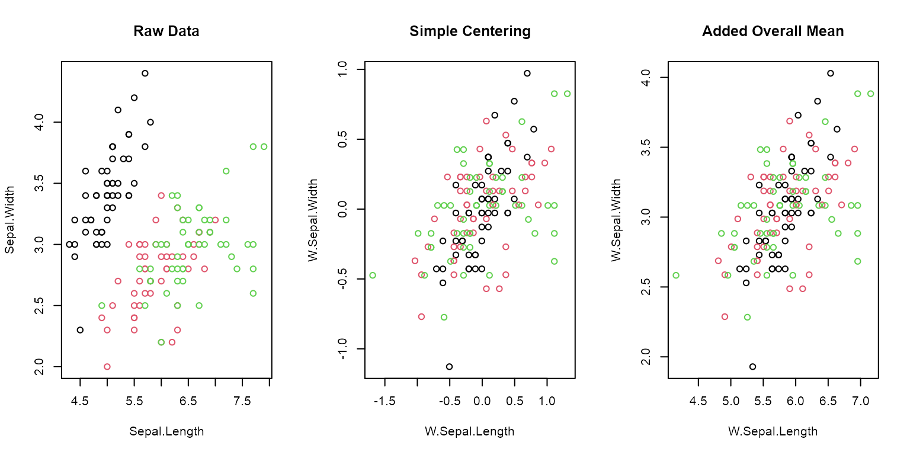
par(oldpar)
Another great utility of operators is that they can be employed in regression formulas in a manor that is both very efficient and pleasing to the eyes. The code below demonstrates the use of W and B to efficiently run fixed-effects regressions with lm.
# When using operators in formulas, we need to remove missing values beforehand to obtain the same results as a Fixed-Effects package data <- wlddev %>% fselect(iso3c, year, PCGDP, LIFEEX) %>% na_omit # classical lm() -> iso3c is a factor, creates a matrix of 200+ country dummies. coef(lm(PCGDP ~ LIFEEX + iso3c, data))[1:2] # (Intercept) LIFEEX # -2837.039 380.448 # Centering each variable individually coef(lm(W(PCGDP, iso3c) ~ W(LIFEEX, iso3c), data)) # (Intercept) W(LIFEEX, iso3c) # 5.462214e-13 3.804480e+02 # Centering the data coef(lm(W.PCGDP ~ W.LIFEEX, W(data, PCGDP + LIFEEX ~ iso3c))) # (Intercept) W.LIFEEX # 5.462214e-13 3.804480e+02 # Adding the overall mean back to the data only changes the intercept coef(lm(W.PCGDP ~ W.LIFEEX, W(data, PCGDP + LIFEEX ~ iso3c, mean = "overall.mean"))) # (Intercept) W.LIFEEX # -14020.142 380.448 # Procedure suggested by Mundlak (1978) - controlling for group averages instead of demeaning coef(lm(PCGDP ~ LIFEEX + B(LIFEEX, iso3c), data)) # (Intercept) LIFEEX B(LIFEEX, iso3c) # -52254.7421 380.4480 585.8386
In general it is recommended calling the long names (i.e. fwithin or fscale etc.) for programming since they are a bit more efficient on the R-side of things and require all input in terms of data. For all other purposes the operators are more convenient. It is important to note that the operators can do everything the functions can do (i.e. you can also pass grouping vectors or GRP objects to them). They are just simple wrappers that in the data frame method add 4 additional features:
- The possibility of formula input to
byi.e.W(mtcars, ~ cyl)orW(mtcars, mpg ~ cyl) - They preserve grouping columns (
cylin the above example) when passed in a formula (defaultkeep.by = TRUE) - The ability to subset many columns using the
colsargument (i.e.W(mtcars, ~ cyl, cols = 4:7)is the same asW(mtcars, hp + drat + wt + qsec ~ cyl)) - They rename transformed columns by adding a prefix (default
stub = "W.")
6.6 HD Centering and Linear Prediction
Sometimes simple centering is not enough, for example if a linear model with multiple levels of fixed-effects needs to be estimated, potentially involving interactions with continuous covariates. For these purposes fhdwithin / HDW and fhdbetween / HDB were created as efficient multi-purpose functions for linear prediction and partialling out. They operate by splitting complex regression problems in 2 parts: Factors and factor-interactions are projected out using fixest::demean, an efficient C++ routine for centering vectors on multiple factors, whereas continuous variables are dealt with using a standard chol or qr decomposition in base R. The examples below show the use of the HDW operator in manually solving a regression problem with country and time fixed effects.
data$year <- qF(data$year, na.exclude = FALSE) # the country code (iso3c) is already a factor # classical lm() -> creates a matrix of 196 country dummies and 56 year dummies coef(lm(PCGDP ~ LIFEEX + iso3c + year, data))[1:2] # (Intercept) LIFEEX # 37388.0493 -333.0115 # Centering each variable individually coef(lm(HDW(PCGDP, list(iso3c, year)) ~ HDW(LIFEEX, list(iso3c, year)), data)) # (Intercept) HDW(LIFEEX, list(iso3c, year)) # -2.304208e-13 -3.330115e+02 # Centering the entire data coef(lm(HDW.PCGDP ~ HDW.LIFEEX, HDW(data, PCGDP + LIFEEX ~ iso3c + year))) # (Intercept) HDW.LIFEEX # -2.304208e-13 -3.330115e+02 # Procedure suggested by Mundlak (1978) - controlling for averages instead of demeaning coef(lm(PCGDP ~ LIFEEX + HDB(LIFEEX, list(iso3c, year)), data)) # (Intercept) LIFEEX HDB(LIFEEX, list(iso3c, year)) # -48141.1094 -333.0115 1236.2681
We may wish to test whether including time fixed-effects in the above regression actually impacts the fit. This can be done with the fast F-test:
# The syntax is fFtest(y, exc, X, ...). 'exc' are exclusion restrictions. data %$% fFtest(PCGDP, year, list(LIFEEX, iso3c)) # R-Sq. DF1 DF2 F-Stat. P-Value # Full Model 0.894 258 8763 286.130 0.000 # Restricted Model 0.873 199 8822 304.661 0.000 # Exclusion Rest. 0.021 59 8763 29.280 0.000
The test shows that the time fixed-effects (accounted for like year dummies) are jointly significant.
One can also use fhdbetween / HDB and fhdwithin / HDW to project out interactions and continuous covariates.
wlddev$year <- as.numeric(wlddev$year) # classical lm() -> full country-year interaction, -> 200+ country dummies, 200+ trends, year and ODA coef(lm(PCGDP ~ LIFEEX + iso3c * year + ODA, wlddev))[1:2] # (Intercept) LIFEEX # -7.257955e+05 8.938626e+00 # Same using HDW coef(lm(HDW.PCGDP ~ HDW.LIFEEX, HDW(wlddev, PCGDP + LIFEEX ~ iso3c * year + ODA))) # (Intercept) HDW.LIFEEX # -4.344568e-07 8.938626e+00 # example of a simple continuous problem HDW(iris[1:2], iris[3:4]) %>% head # HDW.Sepal.Length HDW.Sepal.Width # 1 0.21483967 0.2001352 # 2 0.01483967 -0.2998648 # 3 -0.13098262 -0.1255786 # 4 -0.33933805 -0.1741510 # 5 0.11483967 0.3001352 # 6 0.41621663 0.6044681 # May include factors.. HDW(iris[1:2], iris[3:5]) %>% head # HDW.Sepal.Length HDW.Sepal.Width # 1 0.14989286 0.1102684 # 2 -0.05010714 -0.3897316 # 3 -0.15951256 -0.1742640 # 4 -0.44070173 -0.3051992 # 5 0.04989286 0.2102684 # 6 0.17930818 0.3391766
7. Time Series and Panel Series
collapse also presents some essential contributions in the time series domain, particularly in the area of (irregular) time series, panel data and efficient and secure computations on (potentially unordered) time-dependent vectors and (unbalanced) panels.
7.1 Panel Series to Array Conversions
To facilitate the exploration and access of panel data, psmat was created as an S3 generic to efficiently obtain matrices or 3D-arrays from panel data.
mts <- psmat(wlddev, PCGDP ~ iso3c, ~ year) str(mts) # 'psmat' num [1:216, 1:61] NA NA NA NA NA ... # - attr(*, "dimnames")=List of 2 # ..$ : chr [1:216] "ABW" "AFG" "AGO" "ALB" ... # ..$ : chr [1:61] "1960" "1961" "1962" "1963" ... # - attr(*, "transpose")= logi FALSE plot(log10(mts), main = paste("Log10", vlabels(wlddev$PCGDP)), xlab = "Year")
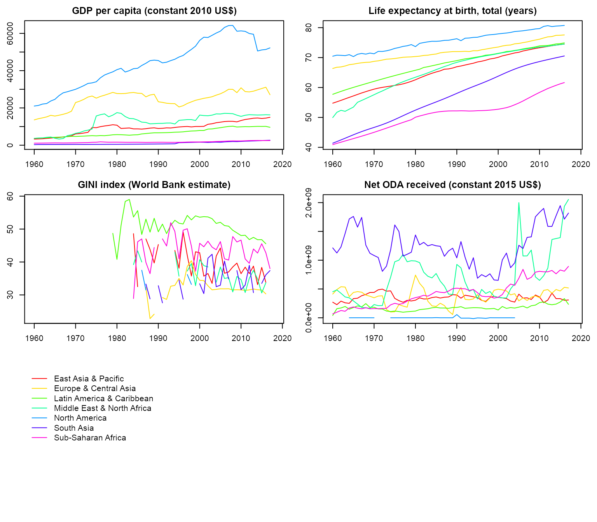
Passing a data frame of panel series to psmat generates a 3D array:
# Get panel series array psar <- psmat(wlddev, ~ iso3c, ~ year, cols = 9:12) str(psar) # 'psmat' num [1:216, 1:61, 1:4] NA NA NA NA NA ... # - attr(*, "dimnames")=List of 3 # ..$ : chr [1:216] "ABW" "AFG" "AGO" "ALB" ... # ..$ : chr [1:61] "1960" "1961" "1962" "1963" ... # ..$ : chr [1:4] "PCGDP" "LIFEEX" "GINI" "ODA" # - attr(*, "transpose")= logi FALSE plot(psar)
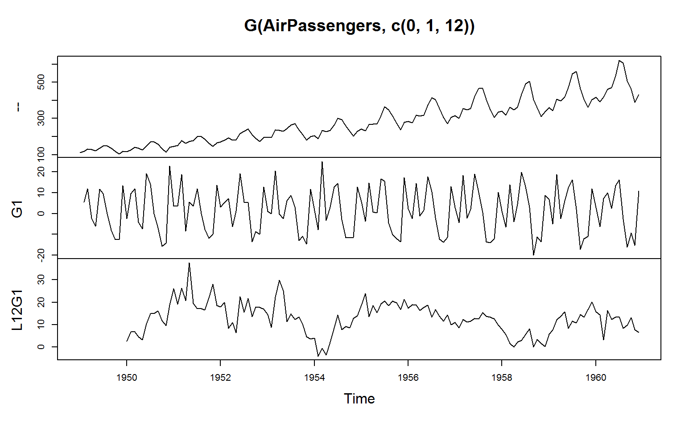
# Plot array of Panel Series aggregated by region: collap(wlddev, ~ region + year, cols = 9:12) %>% psmat( ~ region, ~ year) %>% plot(legend = TRUE, labs = vlabels(wlddev)[9:12])
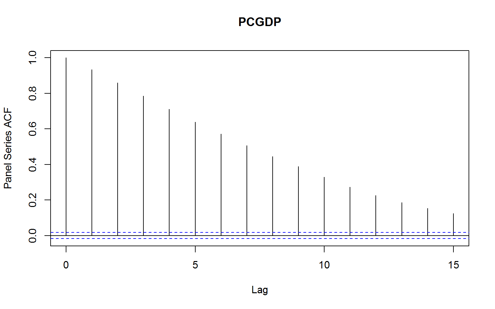psmat can also output a list of panel series matrices, which can be used among other things to reshape the data with unlist2d (discussed in more detail in List-Processing section).
# This gives list of ps-matrices psml <- psmat(wlddev, ~ iso3c, ~ year, 9:12, array = FALSE) str(psml, give.attr = FALSE) # List of 4 # $ PCGDP : 'psmat' num [1:216, 1:61] NA NA NA NA NA ... # $ LIFEEX: 'psmat' num [1:216, 1:61] 65.7 32.4 37.5 62.3 NA ... # $ GINI : 'psmat' num [1:216, 1:61] NA NA NA NA NA NA NA NA NA NA ... # $ ODA : 'psmat' num [1:216, 1:61] NA 116769997 -390000 NA NA ... # Using unlist2d, can generate a data.frame unlist2d(psml, idcols = "Variable", row.names = "Country") %>% gv(1:10) %>% head # Variable Country 1960 1961 1962 1963 1964 1965 1966 1967 # 1 PCGDP ABW NA NA NA NA NA NA NA NA # 2 PCGDP AFG NA NA NA NA NA NA NA NA # 3 PCGDP AGO NA NA NA NA NA NA NA NA # 4 PCGDP ALB NA NA NA NA NA NA NA NA # 5 PCGDP AND NA NA NA NA NA NA NA NA # 6 PCGDP ARE NA NA NA NA NA NA NA NA
7.2 Panel Series ACF, PACF and CCF
The correlation structure of panel data can also be explored with psacf, pspacf and psccf. These functions are exact analogues to stats::acf, stats::pacf and stats::ccf. They use fscale to group-scale panel data by the panel-id provided, and then compute the covariance of a sequence of panel-lags (generated with flag discussed below) with the group-scaled level-series, dividing by the variance of the group-scaled level series. The Partial-ACF is generated from the ACF using a Yule-Walker decomposition (as in stats::pacf).
# Panel-ACF of GDP per Capita psacf(wlddev, PCGDP ~ iso3c, ~year)
# Panel-Partial-ACF of GDP per Capia pspacf(wlddev, PCGDP ~ iso3c, ~year)
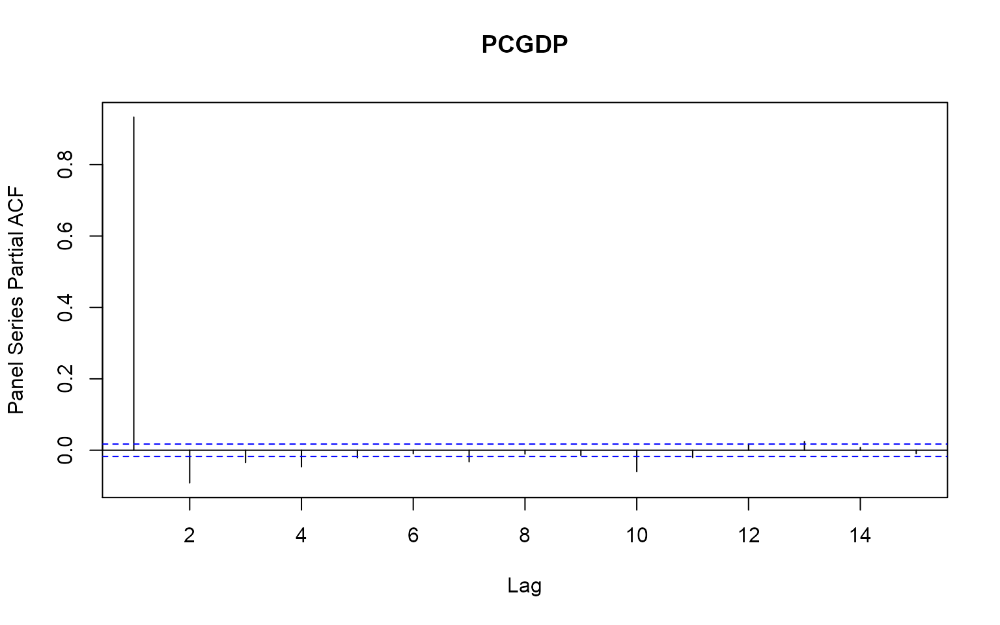
# Panel- Cross-Correlation function of GDP per Capia and Life-Expectancy wlddev %$% psccf(PCGDP, LIFEEX, iso3c, year)
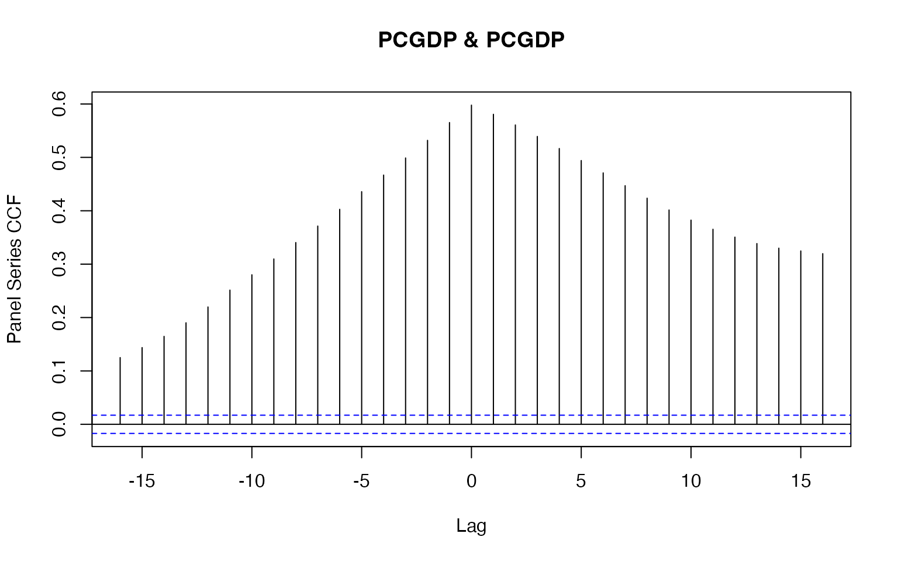
# Multivariate Panel-auto and cross-correlation function of 3 variables: psacf(wlddev, PCGDP + LIFEEX + ODA ~ iso3c, ~year)
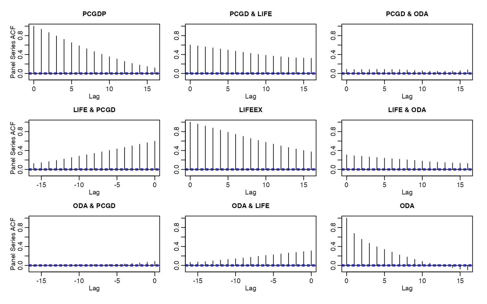
7.3 Fast Lags and Leads
flag and the corresponding lag- and lead- operators L and F are S3 generics to efficiently compute lags and leads on time series and panel data. The code below shows how to compute simple lags and leads on the classic Box & Jenkins airline data that comes with R.
# 1 lag L(AirPassengers) # Jan Feb Mar Apr May Jun Jul Aug Sep Oct Nov Dec # 1949 NA 112 118 132 129 121 135 148 148 136 119 104 # 1950 118 115 126 141 135 125 149 170 170 158 133 114 # 1951 140 145 150 178 163 172 178 199 199 184 162 146 # 1952 166 171 180 193 181 183 218 230 242 209 191 172 # 1953 194 196 196 236 235 229 243 264 272 237 211 180 # 1954 201 204 188 235 227 234 264 302 293 259 229 203 # 1955 229 242 233 267 269 270 315 364 347 312 274 237 # 1956 278 284 277 317 313 318 374 413 405 355 306 271 # 1957 306 315 301 356 348 355 422 465 467 404 347 305 # 1958 336 340 318 362 348 363 435 491 505 404 359 310 # 1959 337 360 342 406 396 420 472 548 559 463 407 362 # 1960 405 417 391 419 461 472 535 622 606 508 461 390 # 3 identical ways of computing 1 lag all_identical(flag(AirPassengers), L(AirPassengers), F(AirPassengers,-1)) # [1] TRUE # 1 lead and 3 lags - output as matrix L(AirPassengers, -1:3) %>% head # F1 -- L1 L2 L3 # [1,] 118 112 NA NA NA # [2,] 132 118 112 NA NA # [3,] 129 132 118 112 NA # [4,] 121 129 132 118 112 # [5,] 135 121 129 132 118 # [6,] 148 135 121 129 132 # ... this is still a time series object: attributes(L(AirPassengers, -1:3)) # $tsp # [1] 1949.000 1960.917 12.000 # # $class # [1] "ts" "matrix" # # $dim # [1] 144 5 # # $dimnames # $dimnames[[1]] # NULL # # $dimnames[[2]] # [1] "F1" "--" "L1" "L2" "L3"
flag / L / F also work well on (time series) matrices. Below a regression with daily closing prices of major European stock indices is run: Germany DAX (Ibis), Switzerland SMI, France CAC, and UK FTSE. The data are sampled in business time, i.e. weekends and holidays are omitted.
str(EuStockMarkets) # Time-Series [1:1860, 1:4] from 1991 to 1999: 1629 1614 1607 1621 1618 ... # - attr(*, "dimnames")=List of 2 # ..$ : NULL # ..$ : chr [1:4] "DAX" "SMI" "CAC" "FTSE" # Data is recorded on 260 days per year, 1991-1999 tsp(EuStockMarkets) # [1] 1991.496 1998.646 260.000 freq <- frequency(EuStockMarkets) # There is some obvious seasonality stl(EuStockMarkets[, "DAX"], freq) %>% plot
# 1 annual lead and 1 annual lag L(EuStockMarkets, -1:1*freq) %>% head # F260.DAX DAX L260.DAX F260.SMI SMI L260.SMI F260.CAC CAC L260.CAC F260.FTSE FTSE # [1,] 1755.98 1628.75 NA 1846.6 1678.1 NA 1907.3 1772.8 NA 2515.8 2443.6 # [2,] 1754.95 1613.63 NA 1854.8 1688.5 NA 1900.6 1750.5 NA 2521.2 2460.2 # [3,] 1759.90 1606.51 NA 1845.3 1678.6 NA 1880.9 1718.0 NA 2493.9 2448.2 # [4,] 1759.84 1621.04 NA 1854.5 1684.1 NA 1873.5 1708.1 NA 2476.1 2470.4 # [5,] 1776.50 1618.16 NA 1870.5 1686.6 NA 1883.6 1723.1 NA 2497.1 2484.7 # [6,] 1769.98 1610.61 NA 1862.6 1671.6 NA 1868.5 1714.3 NA 2469.0 2466.8 # L260.FTSE # [1,] NA # [2,] NA # [3,] NA # [4,] NA # [5,] NA # [6,] NA # DAX regressed on it's own 2 annual lags and the lags of the other indicators lm(DAX ~., data = L(EuStockMarkets, 0:2*freq)) %>% summary # # Call: # lm(formula = DAX ~ ., data = L(EuStockMarkets, 0:2 * freq)) # # Residuals: # Min 1Q Median 3Q Max # -240.46 -51.28 -12.01 45.19 358.02 # # Coefficients: # Estimate Std. Error t value Pr(>|t|) # (Intercept) -564.02041 93.94903 -6.003 2.49e-09 *** # L260.DAX -0.12577 0.03002 -4.189 2.99e-05 *** # L520.DAX -0.12528 0.04103 -3.053 0.00231 ** # SMI 0.32601 0.01726 18.890 < 2e-16 *** # L260.SMI 0.27499 0.02517 10.926 < 2e-16 *** # L520.SMI 0.04602 0.02602 1.769 0.07721 . # CAC 0.59637 0.02349 25.389 < 2e-16 *** # L260.CAC -0.14283 0.02763 -5.169 2.72e-07 *** # L520.CAC 0.05196 0.03657 1.421 0.15557 # FTSE 0.01002 0.02403 0.417 0.67675 # L260.FTSE 0.04509 0.02807 1.606 0.10843 # L520.FTSE 0.10601 0.02717 3.902 0.00010 *** # --- # Signif. codes: 0 '***' 0.001 '**' 0.01 '*' 0.05 '.' 0.1 ' ' 1 # # Residual standard error: 83.06 on 1328 degrees of freedom # (520 observations deleted due to missingness) # Multiple R-squared: 0.9943, Adjusted R-squared: 0.9942 # F-statistic: 2.092e+04 on 11 and 1328 DF, p-value: < 2.2e-16
Since v1.5.0, irregular time series are supported:
t <- seq_row(EuStockMarkets)[-4L] flag(EuStockMarkets[-4L, ], -1:1, t = t) %>% head # F1.DAX DAX L1.DAX F1.SMI SMI L1.SMI F1.CAC CAC L1.CAC F1.FTSE FTSE L1.FTSE # [1,] 1613.63 1628.75 NA 1688.5 1678.1 NA 1750.5 1772.8 NA 2460.2 2443.6 NA # [2,] 1606.51 1613.63 1628.75 1678.6 1688.5 1678.1 1718.0 1750.5 1772.8 2448.2 2460.2 2443.6 # [3,] NA 1606.51 1613.63 NA 1678.6 1688.5 NA 1718.0 1750.5 NA 2448.2 2460.2 # [4,] 1610.61 1618.16 NA 1671.6 1686.6 NA 1714.3 1723.1 NA 2466.8 2484.7 NA # [5,] 1630.75 1610.61 1618.16 1682.9 1671.6 1686.6 1734.5 1714.3 1723.1 2487.9 2466.8 2484.7 # [6,] 1640.17 1630.75 1610.61 1703.6 1682.9 1671.6 1757.4 1734.5 1714.3 2508.4 2487.9 2466.8
The main innovation of flag / L / F is the ability to very efficiently compute sequences of lags and leads on panel data, and that this panel data need not be ordered or balanced:
# This lags all 4 series L(wlddev, 1L, ~ iso3c, ~ year, cols = 9:12) %>% head # iso3c year L1.PCGDP L1.LIFEEX L1.GINI L1.ODA # 1 AFG 1960 NA NA NA NA # 2 AFG 1961 NA 32.446 NA 116769997 # 3 AFG 1962 NA 32.962 NA 232080002 # 4 AFG 1963 NA 33.471 NA 112839996 # 5 AFG 1964 NA 33.971 NA 237720001 # 6 AFG 1965 NA 34.463 NA 295920013 # Without t: Works here because data is ordered, but gives a message L(wlddev, 1L, ~ iso3c, cols = 9:12) %>% head # Panel-lag computed without timevar: Assuming ordered data # iso3c L1.PCGDP L1.LIFEEX L1.GINI L1.ODA # 1 AFG NA NA NA NA # 2 AFG NA 32.446 NA 116769997 # 3 AFG NA 32.962 NA 232080002 # 4 AFG NA 33.471 NA 112839996 # 5 AFG NA 33.971 NA 237720001 # 6 AFG NA 34.463 NA 295920013 # 1 lead and 2 lags of Life Expectancy # after removing the 4th row, thus creating an unbalanced panel wlddev %>% ss(-4L) %>% L(-1:2, LIFEEX ~ iso3c, ~year) %>% head # iso3c year F1.LIFEEX LIFEEX L1.LIFEEX L2.LIFEEX # 1 AFG 1960 32.962 32.446 NA NA # 2 AFG 1961 33.471 32.962 32.446 NA # 3 AFG 1962 NA 33.471 32.962 32.446 # 4 AFG 1964 34.948 34.463 NA 33.471 # 5 AFG 1965 35.430 34.948 34.463 NA # 6 AFG 1966 35.914 35.430 34.948 34.463
Optimal performance is obtained if the panel-id is a factor, and the time variable also a factor or an integer variable. In that case an ordering vector of the data is computed directly without any prior sorting or grouping, and the data is accessed through this vector. Thus the data need not be sorted to compute a fully-identified panel-lag, which is a key advantage to, say, the shift function in data.table.
One intended area of use, especially for the operators L and F, is to substantially facilitate the implementation of dynamic models in various contexts (independent of the estimation package). Below different ways L can be used to estimate a dynamic panel-model using lm are shown:
# Different ways of regressing GDP on it's lags and life-Expectancy and it's lags # 1 - Precomputing lags lm(PCGDP ~ ., L(wlddev, 0:2, PCGDP + LIFEEX ~ iso3c, ~ year, keep.ids = FALSE)) %>% summary # # Call: # lm(formula = PCGDP ~ ., data = L(wlddev, 0:2, PCGDP + LIFEEX ~ # iso3c, ~year, keep.ids = FALSE)) # # Residuals: # Min 1Q Median 3Q Max # -16776.5 -102.2 -17.2 91.5 12277.1 # # Coefficients: # Estimate Std. Error t value Pr(>|t|) # (Intercept) -333.93994 61.04617 -5.470 4.62e-08 *** # L1.PCGDP 1.31959 0.01021 129.270 < 2e-16 *** # L2.PCGDP -0.31707 0.01029 -30.815 < 2e-16 *** # LIFEEX -17.77368 35.47772 -0.501 0.616 # L1.LIFEEX 45.76286 65.87124 0.695 0.487 # L2.LIFEEX -21.43005 34.98964 -0.612 0.540 # --- # Signif. codes: 0 '***' 0.001 '**' 0.01 '*' 0.05 '.' 0.1 ' ' 1 # # Residual standard error: 787.3 on 8609 degrees of freedom # (4561 observations deleted due to missingness) # Multiple R-squared: 0.9976, Adjusted R-squared: 0.9976 # F-statistic: 7.26e+05 on 5 and 8609 DF, p-value: < 2.2e-16 # 2 - Ad-hoc computation in lm formula lm(PCGDP ~ L(PCGDP, 1:2, iso3c, year) + L(LIFEEX, 0:2, iso3c, year), wlddev) %>% summary # # Call: # lm(formula = PCGDP ~ L(PCGDP, 1:2, iso3c, year) + L(LIFEEX, 0:2, # iso3c, year), data = wlddev) # # Residuals: # Min 1Q Median 3Q Max # -16776.5 -102.2 -17.2 91.5 12277.1 # # Coefficients: # Estimate Std. Error t value Pr(>|t|) # (Intercept) -333.93994 61.04617 -5.470 4.62e-08 *** # L(PCGDP, 1:2, iso3c, year)L1 1.31959 0.01021 129.270 < 2e-16 *** # L(PCGDP, 1:2, iso3c, year)L2 -0.31707 0.01029 -30.815 < 2e-16 *** # L(LIFEEX, 0:2, iso3c, year)-- -17.77368 35.47772 -0.501 0.616 # L(LIFEEX, 0:2, iso3c, year)L1 45.76286 65.87124 0.695 0.487 # L(LIFEEX, 0:2, iso3c, year)L2 -21.43005 34.98964 -0.612 0.540 # --- # Signif. codes: 0 '***' 0.001 '**' 0.01 '*' 0.05 '.' 0.1 ' ' 1 # # Residual standard error: 787.3 on 8609 degrees of freedom # (4561 observations deleted due to missingness) # Multiple R-squared: 0.9976, Adjusted R-squared: 0.9976 # F-statistic: 7.26e+05 on 5 and 8609 DF, p-value: < 2.2e-16 # 3 - Precomputing panel-identifiers g = qF(wlddev$iso3c, na.exclude = FALSE) t = qF(wlddev$year, na.exclude = FALSE) lm(PCGDP ~ L(PCGDP, 1:2, g, t) + L(LIFEEX, 0:2, g, t), wlddev) %>% summary # # Call: # lm(formula = PCGDP ~ L(PCGDP, 1:2, g, t) + L(LIFEEX, 0:2, g, # t), data = wlddev) # # Residuals: # Min 1Q Median 3Q Max # -16776.5 -102.2 -17.2 91.5 12277.1 # # Coefficients: # Estimate Std. Error t value Pr(>|t|) # (Intercept) -333.93994 61.04617 -5.470 4.62e-08 *** # L(PCGDP, 1:2, g, t)L1 1.31959 0.01021 129.270 < 2e-16 *** # L(PCGDP, 1:2, g, t)L2 -0.31707 0.01029 -30.815 < 2e-16 *** # L(LIFEEX, 0:2, g, t)-- -17.77368 35.47772 -0.501 0.616 # L(LIFEEX, 0:2, g, t)L1 45.76286 65.87124 0.695 0.487 # L(LIFEEX, 0:2, g, t)L2 -21.43005 34.98964 -0.612 0.540 # --- # Signif. codes: 0 '***' 0.001 '**' 0.01 '*' 0.05 '.' 0.1 ' ' 1 # # Residual standard error: 787.3 on 8609 degrees of freedom # (4561 observations deleted due to missingness) # Multiple R-squared: 0.9976, Adjusted R-squared: 0.9976 # F-statistic: 7.26e+05 on 5 and 8609 DF, p-value: < 2.2e-16
7.4 Fast Differences and Growth Rates
Similarly to flag / L / F, fdiff / D / Dlog computes sequences of suitably lagged / leaded and iterated differences, quasi-differences or (quasi-)log-differences on time series and panel data, and fgrowth / G computes growth rates. Using again the Airpassengers data, the seasonal decomposition shows significant seasonality:
stl(AirPassengers, "periodic") %>% plot
We can test the statistical significance of this seasonality by jointly testing a set of monthly dummies regressed on the differenced series. Given that the seasonal fluctuations are increasing in magnitude, using growth rates for the test seems more appropriate:
f <- qF(cycle(AirPassengers)) fFtest(fgrowth(AirPassengers), f) # R-Sq. DF1 DF2 F-Stat. P-value # 0.874 11 131 82.238 0.000
The test shows significant seasonality, accounting for 87% of the variation in the growth rate of the series. We can plot the series together with the ordinary, seasonal (12-month) and deseasonalized monthly growth rate using:
G(AirPassengers, c(0, 1, 12)) %>% cbind(W.G1 = W(G(AirPassengers), f)) %>% plot(main = "Growth Rate of Airpassengers")
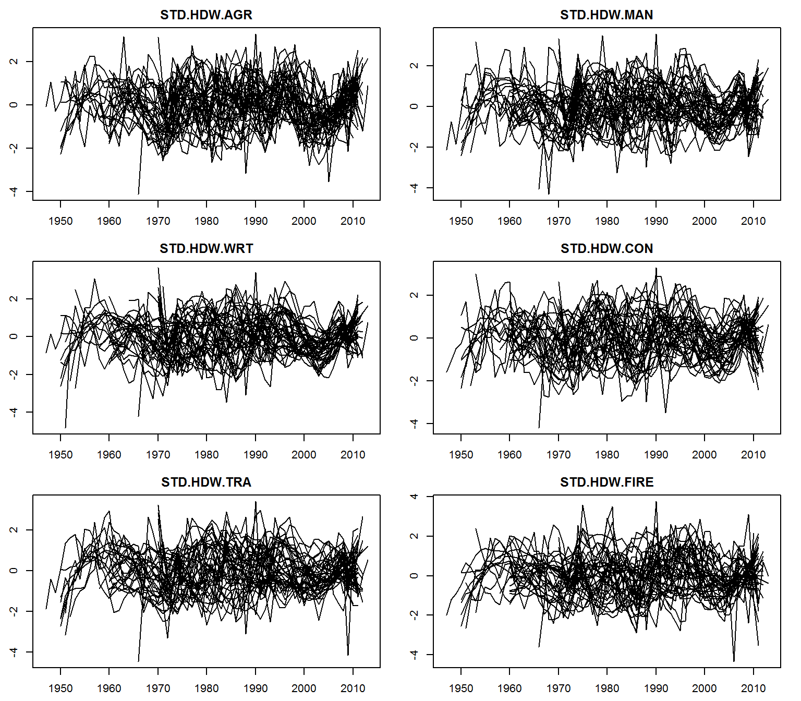 It is evident that taking the annualized growth rate also removes the periodic behavior. We can also compute second differences or growth rates of growth rates. Below a plot of the ordinary and annual first and second differences of the data:
In general, both fdiff / D and fgrowth / G can compute sequences of lagged / leaded and iterated differences / growth rates.
# sequence of leaded/lagged and iterated differences y = 1:10 D(y, -2:2, 1:3) # F2D1 F2D2 F2D3 FD1 FD2 FD3 -- D1 D2 D3 L2D1 L2D2 L2D3 # [1,] -2 0 0 -1 0 0 1 NA NA NA NA NA NA # [2,] -2 0 0 -1 0 0 2 1 NA NA NA NA NA # [3,] -2 0 0 -1 0 0 3 1 0 NA 2 NA NA # [4,] -2 0 0 -1 0 0 4 1 0 0 2 NA NA # [5,] -2 0 NA -1 0 0 5 1 0 0 2 0 NA # [6,] -2 0 NA -1 0 0 6 1 0 0 2 0 NA # [7,] -2 NA NA -1 0 0 7 1 0 0 2 0 0 # [8,] -2 NA NA -1 0 NA 8 1 0 0 2 0 0 # [9,] NA NA NA -1 NA NA 9 1 0 0 2 0 0 # [10,] NA NA NA NA NA NA 10 1 0 0 2 0 0
All of this also works for panel data. The code below gives an example:
g = rep(1:2, each = 5) t = rep(1:5, 2) D(y, -2:2, 1:2, g, t) # F2D1 F2D2 FD1 FD2 -- D1 D2 L2D1 L2D2 # [1,] -2 0 -1 0 1 NA NA NA NA # [2,] -2 NA -1 0 2 1 NA NA NA # [3,] -2 NA -1 0 3 1 0 2 NA # [4,] NA NA -1 NA 4 1 0 2 NA # [5,] NA NA NA NA 5 1 0 2 0 # [6,] -2 0 -1 0 6 NA NA NA NA # [7,] -2 NA -1 0 7 1 NA NA NA # [8,] -2 NA -1 0 8 1 0 2 NA # [9,] NA NA -1 NA 9 1 0 2 NA # [10,] NA NA NA NA 10 1 0 2 0
Calls to flag / L / F, fdiff / D and fgrowth / G can be nested. In the example below, L.matrix is called on the right-half ob the above sequence:
L(D(y, 0:2, 1:2, g, t), 0:1, g, t) # -- L1.-- D1 L1.D1 D2 L1.D2 L2D1 L1.L2D1 L2D2 L1.L2D2 # [1,] 1 NA NA NA NA NA NA NA NA NA # [2,] 2 1 1 NA NA NA NA NA NA NA # [3,] 3 2 1 1 0 NA 2 NA NA NA # [4,] 4 3 1 1 0 0 2 2 NA NA # [5,] 5 4 1 1 0 0 2 2 0 NA # [6,] 6 NA NA NA NA NA NA NA NA NA # [7,] 7 6 1 NA NA NA NA NA NA NA # [8,] 8 7 1 1 0 NA 2 NA NA NA # [9,] 9 8 1 1 0 0 2 2 NA NA # [10,] 10 9 1 1 0 0 2 2 0 NA
fdiff / D and fgrowth / G also come with a data frame method, making the computation of growth-variables on datasets very easy:
G(GGDC10S, 1L, 1L, ~ Variable + Country, ~ Year, cols = 6:10) %>% head # Variable Country Year G1.AGR G1.MIN G1.MAN G1.PU G1.CON # 1 VA BWA 1960 NA NA NA NA NA # 2 VA BWA 1961 NA NA NA NA NA # 3 VA BWA 1962 NA NA NA NA NA # 4 VA BWA 1963 NA NA NA NA NA # 5 VA BWA 1964 NA NA NA NA NA # 6 VA BWA 1965 -3.524492 -28.57143 38.23529 29.41176 103.9604
The code below estimates a dynamic panel model regressing the 10-year growth rate of GDP per capita on it’s 10-year lagged level and the 10-year growth rate of life-expectancy:
summary(lm(G(PCGDP,10,1,iso3c,year) ~ L(PCGDP,10,iso3c,year) + G(LIFEEX,10,1,iso3c,year), data = wlddev)) # # Call: # lm(formula = G(PCGDP, 10, 1, iso3c, year) ~ L(PCGDP, 10, iso3c, # year) + G(LIFEEX, 10, 1, iso3c, year), data = wlddev) # # Residuals: # Min 1Q Median 3Q Max # -104.32 -21.97 -3.96 13.26 1714.58 # # Coefficients: # Estimate Std. Error t value Pr(>|t|) # (Intercept) 2.740e+01 1.089e+00 25.168 < 2e-16 *** # L(PCGDP, 10, iso3c, year) -3.337e-04 4.756e-05 -7.016 2.49e-12 *** # G(LIFEEX, 10, 1, iso3c, year) 4.617e-01 1.124e-01 4.107 4.05e-05 *** # --- # Signif. codes: 0 '***' 0.001 '**' 0.01 '*' 0.05 '.' 0.1 ' ' 1 # # Residual standard error: 58.43 on 7113 degrees of freedom # (6060 observations deleted due to missingness) # Multiple R-squared: 0.01132, Adjusted R-squared: 0.01104 # F-statistic: 40.73 on 2 and 7113 DF, p-value: < 2.2e-16
To go a step further, the code below regresses the 10-year growth rate of GDP on the 10-year lagged levels and 10-year growth rates of GDP and life expectancy, with country and time-fixed effects projected out using HDW. The standard errors are unreliable without bootstrapping, but this example nicely demonstrates the potential for complex estimations brought by collapse.
moddat <- HDW(L(G(wlddev, c(0, 10), 1, ~iso3c, ~year, 9:10), c(0, 10), ~iso3c, ~year), ~iso3c + qF(year))[-c(1,5)] summary(lm(HDW.L10G1.PCGDP ~. , moddat)) # # Call: # lm(formula = HDW.L10G1.PCGDP ~ ., data = moddat) # # Residuals: # Min 1Q Median 3Q Max # -807.68 -10.80 -0.64 10.23 779.99 # # Coefficients: # Estimate Std. Error t value Pr(>|t|) # (Intercept) 1.903e-15 4.930e-01 0.000 1.000000 # HDW.L10.PCGDP -2.500e-03 1.292e-04 -19.347 < 2e-16 *** # HDW.L10.L10G1.PCGDP -5.885e-01 1.082e-02 -54.412 < 2e-16 *** # HDW.L10.LIFEEX 1.056e+00 2.885e-01 3.661 0.000254 *** # HDW.L10G1.LIFEEX 6.927e-01 1.154e-01 6.002 2.08e-09 *** # HDW.L10.L10G1.LIFEEX 8.749e-01 1.108e-01 7.899 3.39e-15 *** # --- # Signif. codes: 0 '***' 0.001 '**' 0.01 '*' 0.05 '.' 0.1 ' ' 1 # # Residual standard error: 35.69 on 5235 degrees of freedom # Multiple R-squared: 0.4029, Adjusted R-squared: 0.4023 # F-statistic: 706.4 on 5 and 5235 DF, p-value: < 2.2e-16
One of the inconveniences of the above computations is that it requires declaring the panel-identifiers iso3c and year again and again for each function. A great remedy here are the plm classes pseries and pdata.frame which collapse was built to support. This shows how one could run the same regression with plm:
pwlddev <- plm::pdata.frame(wlddev, index = c("iso3c", "year")) moddat <- HDW(L(G(pwlddev, c(0, 10), 1, 9:10), c(0, 10)))[-c(1,5)] summary(lm(HDW.L10G1.PCGDP ~. , moddat)) # # Call: # lm(formula = HDW.L10G1.PCGDP ~ ., data = moddat) # # Residuals: # Min 1Q Median 3Q Max # -677.61 -12.45 -1.02 10.86 913.22 # # Coefficients: # Estimate Std. Error t value Pr(>|t|) # (Intercept) 0.1456192 0.5187976 0.281 0.778962 # HDW.L10.PCGDP -0.0022910 0.0001253 -18.291 < 2e-16 *** # HDW.L10.L10G1.PCGDP -0.5859896 0.0113538 -51.612 < 2e-16 *** # HDW.L10.LIFEEX 0.8701877 0.2456255 3.543 0.000399 *** # HDW.L10G1.LIFEEX 0.6910533 0.1132028 6.105 1.11e-09 *** # HDW.L10.L10G1.LIFEEX 0.8990853 0.1068241 8.417 < 2e-16 *** # --- # Signif. codes: 0 '***' 0.001 '**' 0.01 '*' 0.05 '.' 0.1 ' ' 1 # # Residual standard error: 37.51 on 5235 degrees of freedom # (7935 observations deleted due to missingness) # Multiple R-squared: 0.3784, Adjusted R-squared: 0.3778 # F-statistic: 637.4 on 5 and 5235 DF, p-value: < 2.2e-16
To learn more about the integration of collapse and plm, consult the corresponding vignette.
8. List Processing and a Panel-VAR Example
collapse also provides an ensemble of list-processing functions that grew out of a necessity of working with complex nested lists of data objects. The example provided in this section is also somewhat complex, but it demonstrates the utility of these functions while also providing a nice data-transformation task.
When summarizing the GGDC10S data in section 1, it was evident that certain sectors have a high share of economic activity in almost all countries in the sample. This prompts the question of whether there exist common patterns in the interaction of these important sectors across countries. One way to empirically study this could be through a (Structural) Panel-Vector-Autoregression (PSVAR) in value added with the 6 most important sectors (excluding government): Agriculture, manufacturing, wholesale and retail trade, construction, transport and storage and finance and real estate.
For this we will use the vars package6. Since vars natively does not support panel-VAR, we need to create the central varest object manually and then run the SVAR function to impose identification restrictions. We start with exploring and harmonizing the data:
library(vars) # The 6 most important non-government sectors (see section 1) sec <- c("AGR", "MAN", "WRT", "CON", "TRA", "FIRE") # This creates a data.frame containing the value added of the 6 most important non-government sectors data <- fsubset(GGDC10S, Variable == "VA", c("Country", "Year", sec)) %>% na_omit(cols = sec) # Let's look at the log VA in agriculture across countries: AGRmat <- psmat(data, AGR ~ Country, ~ Year, transpose = TRUE) %>% log # Converting to panel series matrix plot(AGRmat)
The plot shows quite some heterogeneity both in the levels (VA is in local currency) and in trend growth rates. In the panel-VAR estimation we are only really interested in the sectoral relationships within countries. Thus we need to harmonize this sectoral data further. One way would be taking growth rates or log-differences of the data, but VAR’s are usually estimated in levels unless the data are cointegrated (and value added series do not, in general, exhibit unit-root behavior). Thus to harmonize the data further we opt for subtracting a country-sector specific cubic trend from the data in logs:
# Subtracting a country specific cubic growth trend AGRmat <- dapply(AGRmat, fhdwithin, poly(seq_row(AGRmat), 3), fill = TRUE) plot(AGRmat)
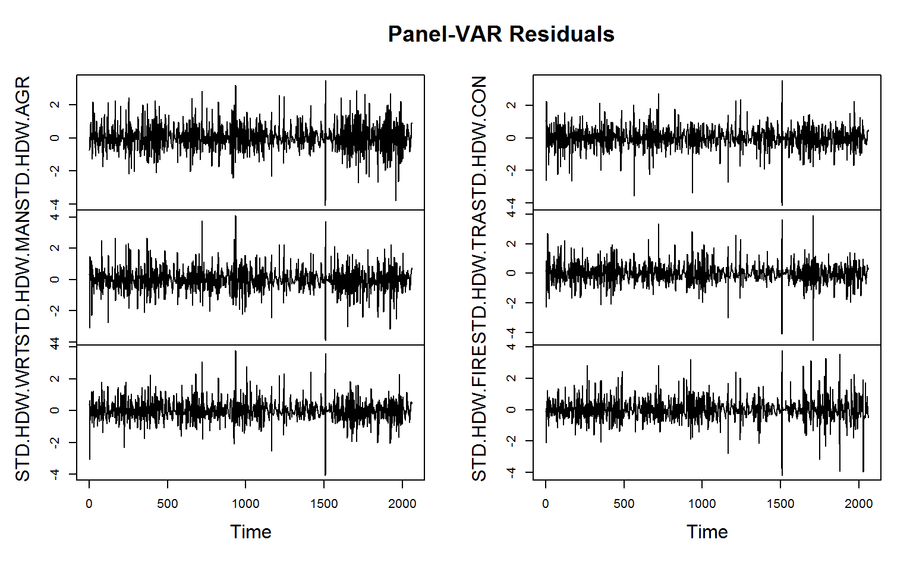 This seems to have done a decent job in curbing most of the heterogeneity. Some series however have a high variance around that cubic trend. Therefore a final step is to standardize the data to bring the variances in line:
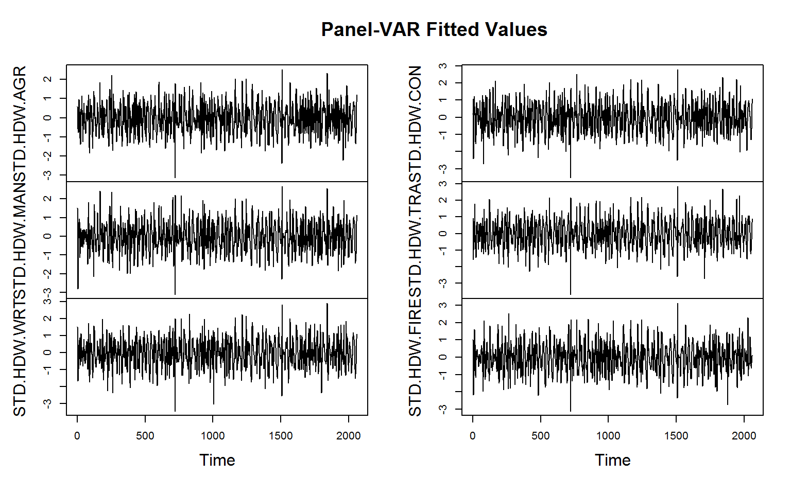
Now this looks pretty good, and is about the most we can do in terms of harmonization without differencing the data. The code below applies these transformations to all sectors:
# Taking logs settransformv(data, 3:8, log) # Projecting out country FE and cubic trends from complete cases gv(data, 3:8) <- HDW(data, ~ qF(Country)*poly(Year, 3), fill = TRUE) # Scaling gv(data, 3:8) <- STD(data, ~ Country, cols = 3:8, keep.by = FALSE) # Check the plot psmat(data, ~ Country, ~ Year) %>% plot
Since the data is annual, let us estimate the Panel-VAR with one lag:
# This adds one lag of all series to the data add_vars(data) <- L(data, 1, ~ Country, ~ Year, keep.ids = FALSE) # This removes missing values from all but the first row and drops identifier columns (vars is made for time series without gaps) data <- rbind(ss(data, 1, -(1:2)), na_omit(ss(data, -1, -(1:2)))) head(data) # STD.HDW.AGR STD.HDW.MAN STD.HDW.WRT STD.HDW.CON STD.HDW.TRA STD.HDW.FIRE L1.STD.HDW.AGR # 1 0.65713943 2.2350584 1.946383 -0.03574399 1.0877811 1.0476507 NA # 2 -0.14377115 1.8693570 1.905081 1.23225734 1.0542315 0.9105622 0.65713943 # 3 -0.09209878 -0.8212004 1.997253 -0.01783824 0.6718465 0.6134260 -0.14377115 # 4 -0.25213869 -1.7830320 -1.970855 -2.68332505 -1.8475551 0.4382902 -0.09209878 # 5 -0.31623401 -4.2931567 -1.822211 -2.75551916 -0.7066491 -2.1982640 -0.25213869 # 6 -0.72691916 -1.3219387 -2.079333 -0.12148295 -1.1398220 -2.2230474 -0.31623401 # L1.STD.HDW.MAN L1.STD.HDW.WRT L1.STD.HDW.CON L1.STD.HDW.TRA L1.STD.HDW.FIRE # 1 NA NA NA NA NA # 2 2.2350584 1.946383 -0.03574399 1.0877811 1.0476507 # 3 1.8693570 1.905081 1.23225734 1.0542315 0.9105622 # 4 -0.8212004 1.997253 -0.01783824 0.6718465 0.6134260 # 5 -1.7830320 -1.970855 -2.68332505 -1.8475551 0.4382902 # 6 -4.2931567 -1.822211 -2.75551916 -0.7066491 -2.1982640
Having prepared the data, the code below estimates the panel-VAR using lm and creates the varest object:
# saving the names of the 6 sectors nam <- names(data)[1:6] pVAR <- list(varresult = setNames(lapply(seq_len(6), function(i) # list of 6 lm's each regressing lm(as.formula(paste0(nam[i], "~ -1 + . ")), # the sector on all lags of get_vars(data, c(i, 7:fncol(data))))), nam), # itself and other sectors, removing the missing first row datamat = ss(data, -1), # The full data containing levels and lags of the sectors, removing the missing first row y = do.call(cbind, get_vars(data, 1:6)), # Only the levels data as matrix type = "none", # No constant or tend term: We harmonized the data already p = 1, # The lag-order K = 6, # The number of variables obs = fnrow(data)-1, # The number of non-missing obs totobs = fnrow(data), # The total number of obs restrictions = NULL, call = quote(VAR(y = data))) class(pVAR) <- "varest"
The significant serial-correlation test below suggests that the panel-VAR with one lag is ill-identified, but the sample size is also quite large so the test is prone to reject, and the test is likely also still picking up remaining cross-sectional heterogeneity. For the purposes of this vignette this shall not bother us.
serial.test(pVAR) # # Portmanteau Test (asymptotic) # # data: Residuals of VAR object pVAR # Chi-squared = 1686.6, df = 540, p-value < 2.2e-16
By default the VAR is identified using a Choleski ordering of the direct impact matrix in which the first variable (here Agriculture) is assumed to not be directly impacted by any other sector in the current period, and this descends down to the last variable (Finance and Real Estate), which is assumed to be impacted by all other sectors in the current period. For structural identification it is usually necessary to impose restrictions on the direct impact matrix in line with economic theory. It is difficult to conceive theories on the average worldwide interaction of broad economic sectors, but to aid identification we will compute the correlation matrix in growth rates and restrict the lowest coefficients to be 0, which should be better than just imposing a random Choleski ordering.
# This computes the pairwise correlations between standardized sectoral growth rates across countries corr <- fsubset(GGDC10S, Variable == "VA") %>% # Subset rows: Only VA fgroup_by(Country) %>% # Group by country get_vars(sec) %>% # Select the 6 sectors fgrowth %>% # Compute Sectoral growth rates (a time-variable can be passed, but not necessary here as the data is ordered) fscale %>% # Scale and center (i.e. standardize) pwcor # Compute Pairwise correlations corr # AGR MAN WRT CON TRA FIRE # AGR 1 .55 .59 .39 .52 .41 # MAN .55 1 .67 .54 .65 .48 # WRT .59 .67 1 .56 .66 .52 # CON .39 .54 .56 1 .53 .46 # TRA .52 .65 .66 .53 1 .51 # FIRE .41 .48 .52 .46 .51 1 # We need to impose K*(K-1)/2 = 15 (with K = 6 variables) restrictions for identification corr[corr <= sort(corr)[15]] <- 0 corr # AGR MAN WRT CON TRA FIRE # AGR 1 .55 .59 .00 .00 .00 # MAN .55 1 .67 .54 .65 .00 # WRT .59 .67 1 .56 .66 .00 # CON .00 .54 .56 1 .00 .00 # TRA .00 .65 .66 .00 1 .00 # FIRE .00 .00 .00 .00 .00 1 # The rest is unknown (i.e. will be estimated) corr[corr > 0 & corr < 1] <- NA # Using a diagonal shock vcov matrix (standard assumption for SVAR) Bmat <- diag(6) diag(Bmat) <- NA # This estimates the Panel-SVAR using Maximum Likelihood: pSVAR <- SVAR(pVAR, Amat = unclass(corr), Bmat = Bmat, estmethod = "direct") pSVAR # # SVAR Estimation Results: # ======================== # # # Estimated A matrix: # STD.HDW.AGR STD.HDW.MAN STD.HDW.WRT STD.HDW.CON STD.HDW.TRA STD.HDW.FIRE # STD.HDW.AGR 1.0000 -0.59223 0.51301 0.0000 0.00000 0 # STD.HDW.MAN -0.3924 1.00000 -0.07819 -0.0135 0.14207 0 # STD.HDW.WRT -0.2547 -0.56875 1.00000 -0.1711 -0.01391 0 # STD.HDW.CON 0.0000 0.02595 -0.18541 1.0000 0.00000 0 # STD.HDW.TRA 0.0000 -0.03321 -0.05370 0.0000 1.00000 0 # STD.HDW.FIRE 0.0000 0.00000 0.00000 0.0000 0.00000 1 # # Estimated B matrix: # STD.HDW.AGR STD.HDW.MAN STD.HDW.WRT STD.HDW.CON STD.HDW.TRA STD.HDW.FIRE # STD.HDW.AGR 0.678 0.0000 0.0000 0.0000 0.0000 0.0000 # STD.HDW.MAN 0.000 0.6248 0.0000 0.0000 0.0000 0.0000 # STD.HDW.WRT 0.000 0.0000 0.4155 0.0000 0.0000 0.0000 # STD.HDW.CON 0.000 0.0000 0.0000 0.5028 0.0000 0.0000 # STD.HDW.TRA 0.000 0.0000 0.0000 0.0000 0.5593 0.0000 # STD.HDW.FIRE 0.000 0.0000 0.0000 0.0000 0.0000 0.6475
Now this object is quite involved, which brings us to the actual subject of this section:
# psVAR$var$varresult is a list containing the 6 linear models fitted above, it is not displayed in full here. str(pSVAR, give.attr = FALSE, max.level = 3) # List of 13 # $ A : num [1:6, 1:6] 1 -0.392 -0.255 0 0 ... # $ Ase : num [1:6, 1:6] 0 0 0 0 0 0 0 0 0 0 ... # $ B : num [1:6, 1:6] 0.678 0 0 0 0 ... # $ Bse : num [1:6, 1:6] 0 0 0 0 0 0 0 0 0 0 ... # $ LRIM : NULL # $ Sigma.U: num [1:6, 1:6] 53.217 34.47 24.78 1.63 0.918 ... # $ LR :List of 5 # ..$ statistic: Named num 1694 # ..$ parameter: Named num 1 # ..$ p.value : Named num 0 # ..$ method : chr "LR overidentification" # ..$ data.name: symbol data # $ opt :List of 5 # ..$ par : num [1:20] -0.3924 -0.2547 -0.5922 -0.5688 0.0259 ... # ..$ value : num 11009 # ..$ counts : Named int [1:2] 501 NA # ..$ convergence: int 1 # ..$ message : NULL # $ start : num [1:20] 0.1 0.1 0.1 0.1 0.1 0.1 0.1 0.1 0.1 0.1 ... # $ type : chr "AB-model" # $ var :List of 10 # ..$ varresult :List of 6 # .. ..$ STD.HDW.AGR :List of 13 # .. ..$ STD.HDW.MAN :List of 13 # .. ..$ STD.HDW.WRT :List of 13 # .. ..$ STD.HDW.CON :List of 13 # .. ..$ STD.HDW.TRA :List of 13 # .. ..$ STD.HDW.FIRE:List of 13 # ..$ datamat :'data.frame': 2060 obs. of 12 variables: # .. ..$ STD.HDW.AGR : num [1:2060] -0.1438 -0.0921 -0.2521 -0.3162 -0.7269 ... # .. ..$ STD.HDW.MAN : num [1:2060] 1.869 -0.821 -1.783 -4.293 -1.322 ... # .. ..$ STD.HDW.WRT : num [1:2060] 1.91 2 -1.97 -1.82 -2.08 ... # .. ..$ STD.HDW.CON : num [1:2060] 1.2323 -0.0178 -2.6833 -2.7555 -0.1215 ... # .. ..$ STD.HDW.TRA : num [1:2060] 1.054 0.672 -1.848 -0.707 -1.14 ... # .. ..$ STD.HDW.FIRE : num [1:2060] 0.911 0.613 0.438 -2.198 -2.223 ... # .. ..$ L1.STD.HDW.AGR : num [1:2060] 0.6571 -0.1438 -0.0921 -0.2521 -0.3162 ... # .. ..$ L1.STD.HDW.MAN : num [1:2060] 2.235 1.869 -0.821 -1.783 -4.293 ... # .. ..$ L1.STD.HDW.WRT : num [1:2060] 1.95 1.91 2 -1.97 -1.82 ... # .. ..$ L1.STD.HDW.CON : num [1:2060] -0.0357 1.2323 -0.0178 -2.6833 -2.7555 ... # .. ..$ L1.STD.HDW.TRA : num [1:2060] 1.088 1.054 0.672 -1.848 -0.707 ... # .. ..$ L1.STD.HDW.FIRE: num [1:2060] 1.048 0.911 0.613 0.438 -2.198 ... # ..$ y : num [1:2061, 1:6] 0.6571 -0.1438 -0.0921 -0.2521 -0.3162 ... # ..$ type : chr "none" # ..$ p : num 1 # ..$ K : num 6 # ..$ obs : num 2060 # ..$ totobs : int 2061 # ..$ restrictions: NULL # ..$ call : language VAR(y = data) # $ iter : Named int 501 # $ call : language SVAR(x = pVAR, estmethod = "direct", Amat = unclass(corr), Bmat = Bmat)
8.1 List Search and Identification
When dealing with such a list-like object, we might be interested in its complexity by measuring the level of nesting. This can be done with ldepth:
# The list-tree of this object has 5 levels of nesting ldepth(pSVAR) # [1] 5 # This data has a depth of 1, thus this dataset does not contain list-columns ldepth(data) # [1] 1
Further we might be interested in knowing whether this list-object contains non-atomic elements like call, terms or formulas. The function is.regular in the collapse package checks if an object is atomic or list-like, and the recursive version is_unlistable checks whether all objects in a nested structure are atomic or list-like:
# Is this object composed only of atomic elements e.g. can it be unlisted? is_unlistable(pSVAR) # [1] FALSE
Evidently this object is not unlistable, from viewing its structure we know that it contains several call and terms objects. We might also want to know if this object saves some kind of residuals or fitted values. This can be done using has_elem, which also supports regular expression search of element names:
# Does this object contain an element with "fitted" in its name? has_elem(pSVAR, "fitted", regex = TRUE) # [1] TRUE # Does this object contain an element with "residuals" in its name? has_elem(pSVAR, "residuals", regex = TRUE) # [1] TRUE
We might also want to know whether the object contains some kind of data-matrix. This can be checked by calling:
# Is there a matrix stored in this object? has_elem(pSVAR, is.matrix) # [1] TRUE
These functions can sometimes be helpful in exploring objects. A much greater advantage of having functions to search and check lists is the ability to write more complex programs with them (which will not be demonstrated here).
8.2 List Subsetting
Having gathered some information about the pSVAR object, this section introduces several extractor functions to pull out elements from such lists: get_elem can be used to pull out elements from lists in a simplified format7.
# This is the path to the residuals from a single equation str(pSVAR$var$varresult$STD.HDW.AGR$residuals) # Named num [1:2060] -0.7115 -0.187 -0.2193 0.0694 -0.1776 ... # - attr(*, "names")= chr [1:2060] "2" "3" "4" "5" ... # get_elem gets the residuals from all 6 equations and puts them in a top-level list resid <- get_elem(pSVAR, "residuals") str(resid, give.attr = FALSE) # List of 6 # $ STD.HDW.AGR : Named num [1:2060] -0.7115 -0.187 -0.2193 0.0694 -0.1776 ... # $ STD.HDW.MAN : Named num [1:2060] 0.356 -1.992 -1.15 -3.085 1.49 ... # $ STD.HDW.WRT : Named num [1:2060] 0.382 0.636 -3.071 -0.41 -0.416 ... # $ STD.HDW.CON : Named num [1:2060] 1.047 -1.084 -2.638 -0.617 2.273 ... # $ STD.HDW.TRA : Named num [1:2060] 0.159 -0.252 -2.257 0.858 -0.126 ... # $ STD.HDW.FIRE: Named num [1:2060] -0.1037 -0.3236 0.0989 -2.1096 -0.0405 ... # Quick conversion to matrix and plotting qM(resid) %>% plot.ts(main = "Panel-VAR Residuals")
Similarly, we could pull out and plot the fitted values:
# Regular expression search and retrieval of fitted values get_elem(pSVAR, "^fi", regex = TRUE) %>% qM %>% plot.ts(main = "Panel-VAR Fitted Values")
Below the main quantities of interest in SVAR analysis are computed: The impulse response functions (IRF’s) and forecast error variance decompositions (FEVD’s):
# This computes orthogonalized impulse response functions pIRF <- irf(pSVAR) # This computes the forecast error variance decompositions pFEVD <- fevd(pSVAR)
The pIRF object contains the IRF’s with lower and upper confidence bounds and some atomic elements providing information about the object:
# See the structure of a vars IRF object: str(pIRF, give.attr = FALSE) # List of 11 # $ irf :List of 6 # ..$ STD.HDW.AGR : num [1:11, 1:6] 0.671 0.44 0.298 0.208 0.149 ... # ..$ STD.HDW.MAN : num [1:11, 1:6] 0.1882 0.1566 0.1323 0.1119 0.0939 ... # ..$ STD.HDW.WRT : num [1:11, 1:6] -0.2087 -0.1251 -0.0766 -0.0483 -0.0317 ... # ..$ STD.HDW.CON : num [1:11, 1:6] -0.04118 -0.00521 0.01288 0.02063 0.02269 ... # ..$ STD.HDW.TRA : num [1:11, 1:6] -0.02784 -0.01105 -0.00486 -0.00297 -0.00259 ... # ..$ STD.HDW.FIRE: num [1:11, 1:6] 0 0.0127 0.0155 0.0141 0.0113 ... # $ Lower :List of 6 # ..$ STD.HDW.AGR : num [1:11, 1:6] 0.2857 0.1582 0.0906 0.0487 0.0219 ... # ..$ STD.HDW.MAN : num [1:11, 1:6] -0.673 -0.411 -0.269 -0.185 -0.132 ... # ..$ STD.HDW.WRT : num [1:11, 1:6] -0.729 -0.48 -0.296 -0.216 -0.163 ... # ..$ STD.HDW.CON : num [1:11, 1:6] -0.613 -0.383 -0.247 -0.163 -0.111 ... # ..$ STD.HDW.TRA : num [1:11, 1:6] -0.447 -0.292 -0.208 -0.154 -0.118 ... # ..$ STD.HDW.FIRE: num [1:11, 1:6] 0 -0.0138 -0.0209 -0.0238 -0.0239 ... # $ Upper :List of 6 # ..$ STD.HDW.AGR : num [1:11, 1:6] 1.111 0.715 0.493 0.359 0.255 ... # ..$ STD.HDW.MAN : num [1:11, 1:6] 0.958 0.649 0.456 0.338 0.253 ... # ..$ STD.HDW.WRT : num [1:11, 1:6] 0.896 0.542 0.331 0.226 0.169 ... # ..$ STD.HDW.CON : num [1:11, 1:6] 0.46 0.311 0.222 0.178 0.143 ... # ..$ STD.HDW.TRA : num [1:11, 1:6] 0.4359 0.2795 0.1768 0.127 0.0946 ... # ..$ STD.HDW.FIRE: num [1:11, 1:6] 0 0.0383 0.047 0.0441 0.037 ... # $ response : chr [1:6] "STD.HDW.AGR" "STD.HDW.MAN" "STD.HDW.WRT" "STD.HDW.CON" ... # $ impulse : chr [1:6] "STD.HDW.AGR" "STD.HDW.MAN" "STD.HDW.WRT" "STD.HDW.CON" ... # $ ortho : logi TRUE # $ cumulative: logi FALSE # $ runs : num 100 # $ ci : num 0.05 # $ boot : logi TRUE # $ model : chr "svarest"
We could separately access the top-level atomic or list elements using atomic_elem or list_elem:
# Pool-out top-level atomic elements in the list str(atomic_elem(pIRF)) # List of 8 # $ response : chr [1:6] "STD.HDW.AGR" "STD.HDW.MAN" "STD.HDW.WRT" "STD.HDW.CON" ... # $ impulse : chr [1:6] "STD.HDW.AGR" "STD.HDW.MAN" "STD.HDW.WRT" "STD.HDW.CON" ... # $ ortho : logi TRUE # $ cumulative: logi FALSE # $ runs : num 100 # $ ci : num 0.05 # $ boot : logi TRUE # $ model : chr "svarest"
There are also recursive versions of atomic_elem and list_elem named reg_elem and irreg_elem which can be used to split nested lists into the atomic and non-atomic parts. These are not covered in this vignette.
8.3 Recursive Apply and Unlisting in 2D
vars supplies simple plot methods for IRF and FEVD objects using base graphics. In this section we however want to generate nicer and more compact plots using ggplot2, and also compute some statistics on the IRF data. Starting with the latter, the code below sums the 10-period impulse response coefficients of each sector in response to each sectoral impulse and stores them in a data frame:
# Computing the cumulative impact after 10 periods list_elem(pIRF) %>% # Pull out the sublist elements containing the IRF coefficients + CI's rapply2d(function(x) round(fsum(x), 2)) %>% # Recursively apply the column-sums to coefficient matrices (could also use colSums) unlist2d(c("Type", "Impulse")) # Recursively row-bind the result to a data.frame and add identifier columns # Type Impulse STD.HDW.AGR STD.HDW.MAN STD.HDW.WRT STD.HDW.CON STD.HDW.TRA STD.HDW.FIRE # 1 irf STD.HDW.AGR 2.14 1.41 1.82 0.93 0.84 0.68 # 2 irf STD.HDW.MAN 0.98 2.28 2.11 1.07 0.95 1.05 # 3 irf STD.HDW.WRT -0.56 -0.44 0.59 0.14 -0.01 -0.07 # 4 irf STD.HDW.CON 0.10 0.00 0.18 1.89 0.43 0.23 # 5 irf STD.HDW.TRA -0.06 -0.13 -0.24 -0.29 1.33 -0.20 # 6 irf STD.HDW.FIRE 0.08 -0.08 0.02 -0.09 -0.05 1.85 # 7 Lower STD.HDW.AGR 0.60 -1.25 -1.51 -0.83 -1.11 -0.46 # 8 Lower STD.HDW.MAN -1.99 -0.99 -1.67 -1.41 -1.57 -0.41 # 9 Lower STD.HDW.WRT -2.33 -2.26 -0.54 -2.88 -1.78 -0.93 # 10 Lower STD.HDW.CON -1.77 -1.72 -1.80 0.21 -1.22 -0.47 # 11 Lower STD.HDW.TRA -1.55 -1.91 -1.49 -2.07 -0.35 -1.02 # 12 Lower STD.HDW.FIRE -0.17 -0.28 -0.20 -0.26 -0.22 0.97 # 13 Upper STD.HDW.AGR 3.53 2.77 2.70 2.14 2.64 1.13 # 14 Upper STD.HDW.MAN 3.40 3.92 3.03 3.74 3.20 1.79 # 15 Upper STD.HDW.WRT 2.61 2.79 4.51 1.14 4.11 1.00 # 16 Upper STD.HDW.CON 1.78 2.23 2.62 3.31 1.86 1.15 # 17 Upper STD.HDW.TRA 1.37 2.02 2.06 1.07 3.00 0.62 # 18 Upper STD.HDW.FIRE 0.28 0.13 0.25 0.15 0.17 2.35
The function rapply2d used here is very similar to base::rapply, with the difference that the result is not simplified / unlisted by default and that rapply2d will treat data frames like atomic objects and apply functions to them. unlist2d is an efficient generalization of base::unlist to 2-dimensions, or one could also think of it as a recursive generalization of do.call(rbind, ...). It efficiently unlists nested lists of data objects and creates a data frame with identifier columns for each level of nesting on the left, and the content of the list in columns on the right.
The above cumulative coefficients suggest that Agriculture responds mostly to it’s own shock, and a bit to shocks in Manufacturing and Wholesale and Retail Trade. Similar patters can be observed for Manufacturing and Wholesale and Retail Trade. Thus these three sectors seem to be interlinked in most countries. The remaining three sectors are mostly affected by their own dynamics, but also by Agriculture and Manufacturing.
Let us use ggplot2 to create nice compact plots of the IRF’s and FEVD’s. For this task unlist2d will again be extremely helpful in creating the data frame representation required. Starting with the IRF’s, we will discard the upper and lower bounds and just use the impulses:
# This binds the matrices after adding integer row-names to them to a data.table data <- pIRF$irf %>% # Get only the coefficient matrices, discard the confidence bounds unlist2d(idcols = "Impulse", # Recursive unlisting to data.table creating a factor id-column row.names = "Time", # and saving generated rownames in a variable called 'Time' id.factor = TRUE, # -> Create Id column ('Impulse') as factor DT = TRUE) # -> Output as data.table (default is data.frame) head(data, 3) # Impulse Time STD.HDW.AGR STD.HDW.MAN STD.HDW.WRT STD.HDW.CON STD.HDW.TRA STD.HDW.FIRE # 1: STD.HDW.AGR 1 0.6713553 0.2871269 0.3443597 0.05639648 0.02802612 0.00000000 # 2: STD.HDW.AGR 2 0.4404593 0.2605969 0.3179221 0.10189153 0.08396192 0.04940075 # 3: STD.HDW.AGR 3 0.2978455 0.2166420 0.2726459 0.12050603 0.10826890 0.07875187 data <- melt(data, 1:2) # Using data.table's melt head(data, 3) # Impulse Time variable value # 1: STD.HDW.AGR 1 STD.HDW.AGR 0.6713553 # 2: STD.HDW.AGR 2 STD.HDW.AGR 0.4404593 # 3: STD.HDW.AGR 3 STD.HDW.AGR 0.2978455 # Here comes the plot: ggplot(data, aes(x = Time, y = value, color = Impulse)) + geom_line(size = I(1)) + geom_hline(yintercept = 0) + labs(y = NULL, title = "Orthogonal Impulse Response Functions") + scale_color_manual(values = rainbow(6)) + facet_wrap(~ variable) + theme_light(base_size = 14) + scale_x_continuous(breaks = scales::pretty_breaks(n=7), expand = c(0, 0))+ scale_y_continuous(breaks = scales::pretty_breaks(n=7), expand = c(0, 0))+ theme(axis.text = element_text(colour = "black"), plot.title = element_text(hjust = 0.5), strip.background = element_rect(fill = "white", colour = NA), strip.text = element_text(face = "bold", colour = "grey30"), axis.ticks = element_line(colour = "black"), panel.border = element_rect(colour = "black"))
 To round things off, below we do the same thing for the FEVD’s:
To round things off, below we do the same thing for the FEVD’s:
data <- unlist2d(pFEVD, idcols = "variable", row.names = "Time", id.factor = TRUE, DT = TRUE) %>% melt(c("variable", "Time"), variable.name = "Sector") head(data, 3) # variable Time Sector value # 1: STD.HDW.AGR 1 STD.HDW.AGR 0.8469414 # 2: STD.HDW.AGR 2 STD.HDW.AGR 0.8409551 # 3: STD.HDW.AGR 3 STD.HDW.AGR 0.8342338 # Here comes the plot: ggplot(data, aes(x = Time, y = value, fill = Sector)) + geom_area(position = "fill", alpha = 0.8) + labs(y = NULL, title = "Forecast Error Variance Decompositions") + scale_fill_manual(values = rainbow(6)) + facet_wrap(~ variable) + theme_linedraw(base_size = 14) + scale_x_continuous(breaks = scales::pretty_breaks(n=7), expand = c(0, 0))+ scale_y_continuous(breaks = scales::pretty_breaks(n=7), expand = c(0, 0))+ theme(plot.title = element_text(hjust = 0.5), strip.background = element_rect(fill = "white", colour = NA), strip.text = element_text(face = "bold", colour = "grey30"))
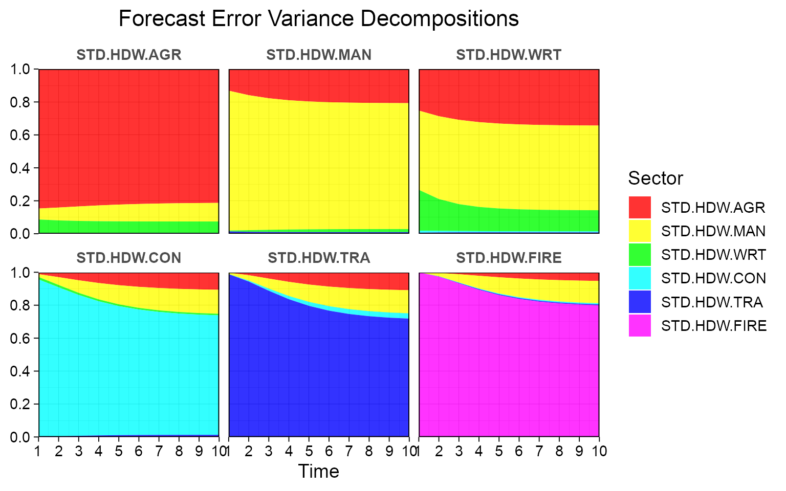 Both the IRF’s and the FEVD’s show that Agriculture, Manufacturing and Wholesale and Retail Trade are broadly interlinked, even in the short-run, and that Agriculture and Manufacturing explain some of the variation in Construction, Transport and Finance at longer horizons. Of course the identification strategy used for this example was not really structural or theory based. A better strategy could be to aggregate the World Input-Output Database and use those shares for identification (which would be another very nice collapse exercise, but not for this vignette).
Going Further
To learn more about collapse, just examine the documentation help("collapse-documentation") which is organized, extensive and contains lots of examples.
References
Timmer, M. P., de Vries, G. J., & de Vries, K. (2015). “Patterns of Structural Change in Developing Countries.” . In J. Weiss, & M. Tribe (Eds.), Routledge Handbook of Industry and Development. (pp. 65-83). Routledge.
Mundlak, Yair. 1978. “On the Pooling of Time Series and Cross Section Data.” Econometrica 46 (1): 69–85.
in the Within data, the overall mean was added back after subtracting out country means, to preserve the level of the data, see also section 6.5.↩︎
You may wonder why with weights the standard-deviations in the group ‘4.0.1’ are
0while they wereNAwithout weights. This stirs from the fact that group ‘4.0.1’ only has one observation, and in the Bessel-corrected estimate of the variance there is an - 1in the denominator which becomes0ifn = 1and division by0becomesNAin this case (fvarwas designed that way to match the behavior orstats::var). In the weighted version the denominator issum(w) - 1, and ifsum(w)is not 1, then the denominator is not0. The standard-deviation however is still0because the sum of squares in the numerator is0. In other words this means that in a weighted aggregation singleton-groups are not treated like singleton groups unless the corresponding weight is1.↩︎I.e. the most frequent value. By default a first-mode is computed.↩︎
If the list is unnamed,
collapusesall.vars(substitute(list(FUN1, FUN2, ...)))to get the function names. Alternatively it is also possible to pass a character vector of function names.↩︎BY.grouped_dfis probably only useful together with theexpand.wide = TRUEargument which dplyr does not have, because otherwise dplyr’ssummariseandmutateare substantially faster on larger data.↩︎I noticed there is a panelvar package, but I am more familiar with vars and panelvar can be pretty slow in my experience. We also have about 50 years of data here, so dynamic panel bias is not a big issue.↩︎
The vars package also provides convenient extractor functions for some quantities, but
get_elemof course works in a much broader range of contexts.↩︎